Designation of Product Identity: The following items are hereby designated as Product Identity as provided in section 1(e) of the Open Game License: all images and illustrations.
Designation of Open Game Content: Excluding anything called out as Product Identity, this entire document is declared open content.
OPEN GAME LICENSE Version 1.0a
The following text is the property of Wizards of the Coast, Inc. and is Copyright 2000 Wizards of the Coast, Inc (“Wizards”). All Rights Reserved.
1. Definitions: (a) “Contributors” means the copyright and/or trademark owners who have contributed Open Game Content; (b) “Derivative Material” means copyrighted material including derivative works and translations (including into other computer languages), potation, modification, correction, addition, extension, upgrade, improvement, compilation, abridgment or other form in which an existing work may be recast, transformed or adapted; (c) “Distribute” means to reproduce, license, rent, lease, sell, broadcast, publicly display, transmit or otherwise distribute; (d) “Open Game Content” means the game mechanic and includes the methods, procedures, processes and routines to the extent such content does not embody the Product Identity and is an enhancement over the prior art and any additional content clearly identified as Open Game Content by the Contributor, and means any work covered by this License, including translations and derivative works under copyright law, but specifically excludes Product Identity. (e) “Product Identity” means product and product line names, logos and identifying marks including trade dress; artifacts, creatures, characters, stories, storylines, plots, thematic elements, dialogue, incidents, language, artwork, symbols, designs, depictions, likenesses, formats, poses, concepts, themes and graphic, photographic and other visual or audio representations; names and descriptions of characters, spells, enchantments, personalities, teams, personas, likenesses and special abilities; places, locations, environments, creatures, equipment, magical or supernatural abilities or effects, logos, symbols, or graphic designs; and any other trademark or registered trademark clearly identified as Product identity by the owner of the Product Identity, and which specifically excludes the Open Game Content; (f) “Trademark” means the logos, names, mark, sign, motto, designs that are used by a Contributor to identify itself or its products or the associated products contributed to the Open Game License by the Contributor; (g) “Use”, “Used” or “Using” means to use, Distribute, copy, edit, format, modify, translate and otherwise create Derivative Material of Open Game Content; (h) “You” or “Your” means the licensee in terms of this agreement.
2. The License: This License applies to any Open Game Content that contains a notice indicating that the Open Game Content may only be Used under and in terms of this License. You must affix such a notice to any Open Game Content that you Use. No terms may be added to or subtracted from this License except as described by the License itself. No other terms or conditions may be applied to any Open Game Content distributed using this License.
3. Offer and Acceptance: By Using the Open Game Content You indicate Your acceptance of the terms of this License.
4. Grant and Consideration: In consideration for agreeing to use this License, the Contributors grant You a perpetual, worldwide, royalty-free, non-exclusive license with the exact terms of this License to Use, the Open Game Content.
5. Representation of Authority to Contribute: If You are contributing original material as Open Game Content, You represent that Your Contributions are Your original creation and/or You have sufficient rights to grant the rights conveyed by this License.
6. Notice of License Copyright: You must update the COPYRIGHT NOTICE portion of this License to include the exact text of the COPYRIGHT NOTICE of any Open Game Content You are copying, modifying or distributing, and You must add the title, the copyright date, and the copyright holder’s name to the COPYRIGHT NOTICE of any original Open Game Content you Distribute.
7. Use of Product Identity: You agree not to Use any Product Identity, including as an indication as to compatibility, except as expressly licensed in another, independent Agreement with the owner of each element of that Product Identity. You agree not to indicate compatibility or co-adaptability with any Trademark or Registered Trademark in conjunction with a work containing Open Game Content except as expressly licensed in another, independent Agreement with the owner of such Trademark or Registered Trademark. The use of any Product Identity in Open Game Content does not constitute a challenge to the ownership of that Product Identity. The owner of any Product Identity used in Open Game Content shall retain all rights, title and interest in and to that Product Identity.
8. Identification: If you distribute Open Game Content You must clearly indicate which portions of the work that you are distributing are Open Game Content.
9. Updating the License: Wizards or its designated Agents may publish updated versions of this License. You may use any authorized version of this License to copy, modify and distribute any Open Game Content originally distributed under any version of this License.
10. Copy of this License: You MUST include a copy of this License with every copy of the Open Game Content You distribute.
11. Use of Contributor Credits: You may not market or advertise the Open Game Content using the name of any Contributor unless You have written permission from the Contributor to do so.
12. Inability to Comply: If it is impossible for You to comply with any of the terms of this License with respect to some or all of the Open Game Content due to statute, judicial order, or governmental regulation then You may not Use any Open Game Material so affected.
13. Termination: This License will terminate automatically if You fail to comply with all terms herein and fail to cure such breach within 30 days of becoming aware of the breach. All sublicenses shall survive the termination of this License.
14. Reformation: If any provision of this License is held to be unenforceable, such provision shall be reformed only to the extent necessary to make it enforceable.
15. COPYRIGHT NOTICE
Open Game License v 1.0a Copyright 2000, Wizards of the Coast, Inc.
System Reference Document Copyright 2000-2003, Wizards of the Coast, Inc.; Authors Jonathan Tweet, Monte Cook, Skip Williams, Rich Baker, Andy Collins, David Noonan, Rich Redman, Bruce R. Cordell, John D. Rateliff, Thomas Reid, James Wyatt, based on original material by E. Gary Gygax and Dave Arneson.
The Iconic Bestiary: Classics of Fantasy Copyright 2005, Lions Den Press; Author Ari Marmell.
The Middle Lands of Keltor Copyright 2011; Author William R. Gibson.
This map shows the boundaries of each kingdom as laid out by the Imperial Throne. The areas include both civilized and wilderness lands. Populations tend toward higher density in coastal regions and along rivers. This leaves the vast open lands largely under populated, even unpopulated. At its widest point the land mass is about 1500 miles by 1000 miles, roughly 1,160,000 square miles. Having a population estimated at 30,000,000 there is a great deal of room for growth in the Middle Lands.
The Imperial Throne has erected a series of stone obelisk that mark the boarders of all the kingdoms. Each obelisk is clearly marked, showing what kingdom is being entered, and numbered with an Imperial address number. They are spaced about one half mile apart which makes their line easy to see. There are roughly 10,000 of these stones. All are uniformed in make, being hard stone with a 5 ft base, 10 ft tall, weighting over 12 tons and having a hexagonal column configuration that tapers to about 2 ft at the top. Two of the six sides are engraved, showing the kingdom that will be entered, the Imperial identifying number of the obelisk and the Imperial Seal. Also engraved, in several languages on the other four faces, is a copy of the Imperial law that outlines the penalty for moving, removing or otherwise tampering with one of these obelisk. That punishment is to be drawn and quartered. Luckily this does not happen often as the stones are very hard to move. Each stone is inspected every two years.
The largest kingdom of the Middle Lands, Argos is also the seat of the Imperial Throne. Argos is not, however, a puppet of the Imperial Throne. Queen Melina Delan Dorell is the current ruler. Day to day business of the kingdom is left to the queen and her court. She is loved by her subjects and her court is not as prone to the political intrigue, plots and backstabbing that most royal courts of the Middle Lands endure. That is not to say such things don’t happen.
Culture, tradition and stability are key characteristics for this kingdom and its people. This is something that filters down into every aspect of life in Argos. So much so, that when spots of tyranny do spring up, the contrast makes them blindingly obvious. It also makes them a target.
Argos is the most heavily populated kingdom in the empire. Most of those people live along the Danchu river or the Imperial Roads. Yet Argos is also the largest kingdom. As a result it still has massive expanses of wilderness land.
The Blue Swords maintain a small keep in the north-eastern most section of Argos. It is close to the border of Fellice. In addition, it is half a day from the Danchu allowing the Blue Swords quick access to the river and hence the rest of Argos.
Rumor has it that deep in the central wilderness of Argos there is a fortress. The secret stronghold of the Arcane Syndicate. So far, none that have gone looking for this stronghold have returned with any news other than total failure.
The site of a revolution nearly sixty years ago; the outcome of which was the fall of House Arrnas and the creation of the Celyd Republic. Celyd is one of the most progressive of countries of the Middle Lands and the only one to have public schools open to all citizens. Gaining citizenship can be problematic for immigrants. It is possible to be a resident yet not a citizen. Immigrants seeking citizenship must offer two years of public service and pass an exam covering knowledge of Celyd and its history OR offer eight years of public service with no exam. Public service is by trade or profession and wages are fixed.
As to the republic’s structure of government, most high level elected representatives of the republic are of noble birth. While it is not unknown for a commoner to be elected to such a position it is still noticeably rare. The land is divided into districts, each of which has a local council elected by the populace. These council members are just as readily of common birth as noble. In turn, these people will elect someone, not a council member and often a noble, to represent the district’s interest in the senate. The senate governs the country as a whole. They vote on petitions and create laws and appoint judges to the High Bar. High Bar appointments are lifetime appointments. Each senator serves a three year term and then another election is held. Each district has the right to impose term limits on their senator. A few have put in place lifetime limits of three to five terms. Some have a limit of two consecutive terms with no lifetime limit. There are 35 districts and each is allowed one seat on the senate. An act of the senate is needed to repartition one or more districts and High Bar approval is required before the reconfigured districts can be implemented. In addition, the Regent has a seat on the senate but only votes in the event of a tie. The Regent is a lifetime appointment of the senate and is currently Cen Almos Nentus. Beyond tie breaking the Regent sees that Senate meetings follow procedure and are lawfully maintained. The Regent has influence and some power.
It is rumored that the Iron Storm is based in the northern mountains of Celyd. They were hired by both sides, at one time or another, during the Republic Rebellion. And are rumored to be on retainer to the Republic even today. As they only come out to fight no one has been able to substantiate this rumor.
The northern most kingdom in the Middle Lands is ruled by king Markus Davren Borsheen. The people of Fellice think of themselves as the guardians of the Winter Wall and many of the youth aspire to join the Winter Guard. The warrior culture of Fellice is evident in all aspects of the kingdom. The king sponsors several tournaments each year. The young nobles spend time between tournaments hunting a variety of monsters in the wilderness. Dueling is not uncommon, but frivolous duels are looked upon unfavorably, as are duels to the death. Outsiders see most people of Fellice as hot blooded ogres.
Most inhabitants of Fellice live on the shores of one of its rivers, the Danchu and the Nocmal, or in the Cold Plains along one of the Imperial Roads. Journey beyond these areas and one quickly enters wilderness lands. It is a harsh and unforgiving land, full of menacing beast, tribes of orcs, marauding trolls and ogres. The mountains and deep forest are even more dangerous.
No northern border is marked because, technically, everything to the north is part of Fellice. This is because the Imperial Throne does not recognize any other claim to that land. The reality of enforcing the claim is difficult, to say the least. So, while the Northern Wilds are part of the Kingdom of Fellice, as far as the Imperial Throne is concerned, only members of the Winter Guard have gone beyond the the Winter Wall.
The Winter Wall is over one hundred miles long and averages two hundred feet high. It is the largest fortress in the known world.
Bordered by mountain ranges on both ends, it is manned by an imperial force known as the Winter Guard made up of a mixture of volunteers and criminals all of whom are sworn to lifetime service. Once given, the oath of the Winter Guard is only lawfully ended by death. Those that break it early are guilty of high treason and forfeit life. The Winter Wall is within the boundaries of Fellice — and so is every land to its north, as far they are concerned.
The Winter Wall can house over thirty-thousand warriors plus another five-thousand support personnel. The current complement, however, is only about 10% of that number. This is a source of great anxiety for the commanders of the Winter Guard. They feel the Guard is not prepared to repel an assault.
Currently, however, there are fewer then three-thousand warriors and another five hundred support staff. This is a source of great anxiety for the commanders of the Winter Guard. As they see it, northern hoards could attack at any time, but they feel underfunded and generally not prepared to repel such an attack.
New conscripts for the Guard have been dropping steadily over the past century. It seems that while the children of Fellice still hear the stories and hold the Guard in high esteem, fewer are following through and joining up as adults. There have been discussions of supplementing the Guard with standard army forces. Naturally, the Guard’s leadership is not in favor of this solution and would rather see more prisoners given the opportunity to serve in place of jail.
This land is governed by a council of nobles and is renown for it’s libraries. The council is made up of nobles from the most powerful Houses in the land. The Minor Houses have only one seat while the Major Houses have two or even three seats. There are currently fifteen seats on the council but that number has been both larger and smaller in the past yet it is almost always an odd number. The machinations of council members are legendary.
Mostor is known as “the wellspring of deceit” due to the seemingly unending stream of plots employed by council members to achieve their respective ends. This very rarely devolves to the point of out right assassination but it still gets more then a little “under handed” from time to time. Nothing is sacred in these battles.
For all the talk of subterfuge, one of the most trusted and prestigious orders in all the Middle Lands is based in Mostor, the Prime Order. The Order has called Sapreen home for more than six-hundred years. It is a very influential group within Mostor, indeed, due to the role of the Prime Advisors the Order has notable influence in every part of the empire.
Coastal trade is the life’s blood of the kingdom. The greatest threat to that is piracy. The Inner Sea has many unpopulated and/or uncharted islands; they seem to spring up and sink beneath waves like magic. The pirates make good use of these islands. So much so that it is a full time job for Mostor’s navy to patrol the shipping lanes. Even with all their work, pirates still attack trade vessels and make off with valuable cargo. In the past century, some of Mostor’s coastal nobles have taken to issuing Letters of Marque and Reprisal to privateers. Some believe the privateers and pirates are just the latest proxies in the game of power nobles have been playing since the second noble was crowned.
The vast majority of Mostor’s citizens live within 60 miles of the coast. The plains of western Mostor are host to a variety of creatures, both humanoid and not. There are some human and elven tribals out there as well. Some trade with the freeholds others war against them.
Mostor has numerous, vibrant freeholds. They fail just as often as they do in other lands but civilization pushes its way into the wilderness at a steady pace. The wilderness does push back, with everything from wyvern to bugbear hoards. However, year by year, mile by mile, generation after generation, civilization moves forward.
Sulkor is often called the Spice Gateway as the only land based trade route to the Spice Kingdoms starts there. Sulkor is considered the least cultured of all the kingdoms, at least by the other kingdoms. It does have a higher ratio of “wild” tribe population than any other kingdom. Many citizens of Sulkor can trace their lineage to one of the old tribes if they go back three or four generations. As a result, some strange customs can be found all over Sulkor.
One of the odd tribal traditions that remains part of the culture of Sulkor is taking “Hylee”. A crude translation of which is “slave” yet most people of Sulkor prefer the translation “bound one”. In times past, the Bimcho tribe would take enemy tribe members in combat, claiming them as Hylee. Those taken would serve for a fixed amount of time after which they were released and allowed to return home safely. That tradition survives in pockets of Sulkor’s citizens yet without the component of combat. Just how and why one can be taken Hylee varies from area to area. Most cases involve a competition or a wager.
Until about one-hundred-sixty years ago Sulkor had no southern border. The White Sands accord changed all that. As a result, the tribes of the Great Desert are the only entity bordering the empire which is recognized by the empire to have a legitimate claim to land.
Trade is very important, the trade routes are well patrolled and protected. Most of them run along roads that are fully paved and well maintained. This accounts for the speed of these land routes and why they are still relevant even in the face of the sea routes. Rumor has it that the navy of Sulkor has at times turned a blind eye to pirates that “operate within certain parameters”. King Roesoon’s idea of justice for caravan bandits is both swift and brutal.
The Wessroth Company has a small keep just north of the East Trade Road about a half day from the Argos border.
The noble houses are the basis of all governments in the Middle Lands. Houses are divided into four categories: major, minor, new and fallen. While all members of such a House are nobles not all nobles are members of a House. This just proves that at the end of the day it is blood that makes a noble. Nobles not in a House are most often minor nobles having little in the way of title or wealth and their crest will not be graced by the Imperial Leaf which is worked into the standard of all true Houses.
These houses are old, powerful, wealthy and influential. All have strong blood ties to the imperial bloodline. Much of the land is under their control, directly or indirectly. They collect taxes from the people and tribute from some Minor Houses and any New Houses that catch their attention. All pay a yearly tribute to the Imperial Throne. In normal times, it is not at all uncommon for such a house to have a standing army of 500 warriors. They are capable of raising far larger armies should the need arise. They must be careful when doing so or they may find themselves under the scrutiny of the Imperial Throne as well as other Houses. There are currently seven Major Houses: Borsheen, Canitus, Dorell, Morgain, Nentus, Roesoon and Trellmock.
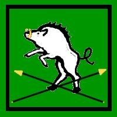
Standard: A white boar and crossed black spears on a green background.
House Head: King Markus Davren Borsheen
Power Base: Murath in Fellice
The honor of House Borsheen is without tarnish and their victories can not be easily counted. On the field of battle they are among the most feared of opponents, not only for their fierce ability and martial skill but for their many layered strategies. Borsheen is the only Major House to lack significant land holds in more then one country. Also, they are the only House to hold all the major land holds in one country; Fellice is unquestionably their land.
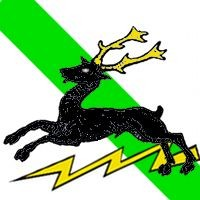
Standard: A black stag above lightning on a green & white background
House Head: Duke Rychar Starcrest Canitus
Power Base: Foamrest in Mostor
While few members of this House excel at anything they are at least competent. They are the least powerful of the Major Houses and the oldest one still in existence, next to House Kalistic. Canitus has been around just over four hundred years. Strong land holds are maintained in northern Mostor and north-eastern Argos.
Standard: A blue hawk over a rising gold sun on a blue & white field
House Head: Queen Melina Delan Dorell
Power Base: Balashar in Argos
They are known as fair rulers of a mind to care for their subjects and an excellent understanding of the relationship between commoners and nobles. Tradition is valued by House Dorell. They have the majority of the major land holds in Argos and some in southern Mostor as well. Of all the Major Houses, Dorell has the largest military force.
Standard: Three white stallions on a blue background
House Head: Duke Sezral Tal Morgain
Power Base: Rocrest in Argos
The black sheep of the Major Houses, House Morgain’s near legendary skills in carousing and womanizing are second only to their shrewd business sense and diplomatic faculties. Significant land holdings are maintained in eastern Sulkor, southern Celyd and western Argos.
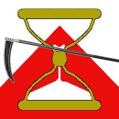
Standard: An hourglass and black scythe on white and red
House Head: Regent Cen Almos Nentus
Power Base: Southflo in Celyd
They are a well rounded House with members know for a variety of skills and faults. The extent of their role in the fall of House Arrnas, while not know to all, was great. They benefited from that, gaining substantial Arrnas holdings by imperial decree. It is widely know that they were instrumental in establishing the republic although many nobles of slow wit question the wisdom of that. House Nentus has moderate sized land holds in Argos, Mostor and Sulkor.
Standard: A red tower of stone on a gold & black background
House Head: King Justin Almir Roesoon
Power Base: Ahlabim in Sulkor
They are know for a harsh sense of justice and duty. Their wealth is substantial and their cavalry is known and respected across the Middle Lands. House Roesoon controls most of Sulkor, in addition they have land holds in southern Celyd and minor holds in both Argos and Mostor.
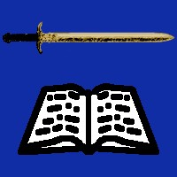
Standard: A gold sword and tome on a dark blue background
House Head: Archduchess Clarise Vashee Trellmock
Power Base: Sapreen in Mostor
One of the most powerful Houses of Mostor, they are known for both a love of lore and a thirst for current information. It is said they take in scheming with their mother’s milk. Significant land holds in Mostor are under control of House Trellmok as well as some in Argos.
In general these houses are smaller and less powerful then any of the Major Houses. A few have tenuous ties to the imperial bloodline, most often by way of bastards. Land holdings are small and/or poor in comparison to the Major Houses. They collect taxes from their subjects and pay tribute to both the Imperial Throne and at least one Major House. Power struggles between Minor Houses are nearly constant but not often bloody. Some would say that these struggles are encouraged and even orchestrated by one or more Major Houses. It is rare that a Minor House will raise a fighting force of more then 200 warriors. Most are lucky to have 50 at any given time. There are currently 82 houses recognized by the Imperial Throne as Minor Houses. Due to the large number not all the Minor Houses will be listed here. Among the most powerful are: Dosren, Gantu, Helot, Kuntarr, Lunaz, Orcrest and Pentell.
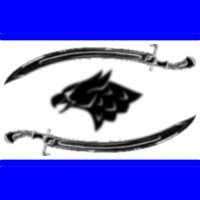
Standard: A black griffon head and two swords on white and blue
House Head: Count Jular Dosren
Power Base: Holdings split between Argos, Mostor
House Dosren is not known for planning, they tend to act with an alarming immediacy. This has led to more than one borderland conflict with other Houses. Most often smaller Houses but at times their rashness has led to conflict with far stronger opponents. Just in the past hundred years scholars can point to three such instances and a few even speculate that had better actions been chosen in those times House Dosren would have substantially higher standing. They have strong ties to House Trellmock.
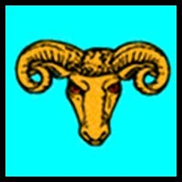
Standard: An orange ram’s head on a blue background
House Head: Countess Mailyn Gantu
Power Base: Most holdings in Celyd
House Gantu is remembered for its founder’s stubborn streak. A common saying being, “Old man Gantu could out wet water if he set his mind to it.” Guston Gantu, the House’s founder, has at least a half dozen well recorded historical references of his fierce nature. While his line has learned to be more prudent, they have not totally escaped Guston’s shadow. They are firmly tied to House Nentus.
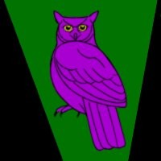
Standard: A purple owl on a green & black background
House Head: Count Fularrd Soson Helot
Power Base: Most holdings in Mostor
The Helot line is one of the few Houses that has a strong streak of arcane magic in its family tree. This has been as much of a detriment as not. While there are some excellent advantages to being a mage, too many people still associate magic with the Savage Time. As a result, Helot has difficulty expanding their influence much beyond Mostor. Both House Roesoon and House Morgain have some influence with Helot but they have managed to avoid formal oaths of allegiance to either.
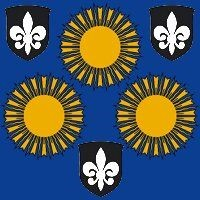
Standard: Three suns and three shields on a blue background
House Head: Count Dirk Heny Kuntarr
Power Base: Holdings split between Sulkor, Celyd
Founded during the Wild Hills Rebellion of 191MLE in which Sir Phillip Hend Kuntarr battled rebel forces in a three day holding action which allowed Imperial reinforcements to arrive and put the rebellion down. House Kuntarr has seen many ups and downs over the years but they have endured. There have been times when it looked like they would achieve Major House status and other times during which it looked like they would lose everything. Some say House Kuntarr fights a perpetual holding action against life and success. They are tied solely to House Kalistic and that is where their allegiance is placed.
Standard: A sword and key on a blue and purple background
House Head: Baroness Helen Kysta Lunaz
Power Base: Holdings split between Argos, Fellice
Members of House Lunaz always seem to be looking for an angle, they don’t approach things head on. In addition they are an opportunistic lot. House Lunaz is heavily involved in commerce. This has been the main method of their rise in power. As they are rather successful in these business endeavors they are a fairly wealthy House. It is often said they should move to Mostor as they would fit in better there. House Dorell holds major influence over Lunaz.
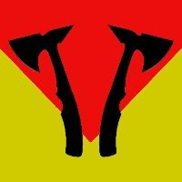
Standard: Two black hatchets over a red and gold background
House Head: Baron Barnabas Sulon Orcrest
Power Base: Most holdings in Fellice
Known for their strength in battle, House Orcrest seeks out conflicts in the borderlands. Over the past two centuries House Orcrest has actively pushed out into the borderlands. All their children are encouraged to strike out on their own and found a freehold in the borderlands. The ones that have the most success with this task will inherit the great titles of the House while a less successful sibling or cousin takes over their old position. While this means that, historically speaking, only one child in three lives beyond the age of 25, it also has seen Orcrest expand at a rapid rate, gaining lands and titles faster then their peers. They have ties to and are strong supporters of House Borsheen.
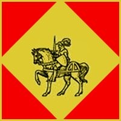
Standard: A knight on a tan & red background
House Head: Countess Josephine Pentell
Power Base: Most holdings in Argos
The members of Pentell are a long lived House, many living to ages over 100. It is rumored they have elven blood. The general consensus is that while they are often a level headed and open minded lot they are still prone to the occasional flight of fancy. Pentell sponsors more New Houses than most of their peers. They, themselves, have strong ties of allegiance to House Canitus.
Small and often weak, these houses have only been around for one or two generations. They are often of common ancestry and rise to House status by deed and the will of the Imperial Throne. While most will not last beyond their third generation some of these will gain Minor House status as the Imperial Throne dictates. They sometimes collect taxes and often pay tribute to Minor Houses and/or Major Houses. All pay tribute to the Imperial Throne.
It is much easier to get New House status then most common folk know. One need only do the Empire some great service and in most cases, pay for the right to petition the Throne for house status. On occasion, the petition is not necessary should the deed(s) be great enough to draw the attention of the Throne. Just what deeds will draw this attention depends on what the Throne needs at the time. While uncommon, there is a historical precedence for Major Houses bringing a petition to the Throne as a reward to a vassal family for service done in the name of the House. They become sponsor to the New House.
New House status is like probationary noble-hood. Ten years after its third leader takes power, such a house is reviewed by the Throne and either dissolved or granted Minor House status. The quandary explored during the review is whether the House has continued to be a “noble bloodline”. In theory, any House can be dissolved by the Throne but it is rare outside of New Houses. There are currently 34 New Houses, among the most noteworthy are: Casabon, Indorn, Murktan, Urgains and Welldown.
Standard: A green and gold shield on a pale green background
House Head: Baron Nathaniel Reid Casabon
Power Base: Cave Bear Vale freehold in Fellice
House Casabon is in its eighty-first year. Nathaniel is very old and will soon pass his title to the Casabon’s third heir, the lady Jennell Casabon. Jennell has been working on the plan for Imperial review since she was a teenager. Her main objective is to increase the iron mine’s output and she hopes to find a source of silver in the freehold. With the added wealth she will expand the garrison and increase patrols. The local orc tribes have been less troublesome over the past few years. Jennell knows this will not last and the extra guards will be helpful when they return. The freehold has four settlements, one large walled town, a village and two hamlets.
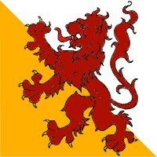
Standard: A red lion on an orange and white background
House Head: Baroness Charlotte Indorn
Power Base: The Red Mountain freehold in Celyd
The Baroness is first of her line and founded the freehold, ruling for the past thirty-six years. She has no husband and seven children, all adopted. Only two of the children are of Charlotte’s bloodline, they were her sister’s children. House Indorn’s review would be more difficult if Charlotte named a child not of her bloodline as heir. This is a question she is wrestling with currently, she wants the best child to be heir. At this point that is Sheldon Indorn, not of her bloodline and a half-orc, but also an excellent warrior and priest of Rakthor. The adopted children, all orphaned by orc raiders, are devoted to her and her plan to rid the land of orc tribes. The nearby mountains provide no shortage of orcs. The freehold has one settlement, a large walled town. It sees at least one sizable orc raid every two or three years.
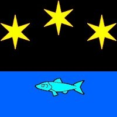
Standard: Three stars and a fish on a blue and black background
House Head: Baron Darius Wyse Murktan
Power Base: The Clear Water freehold in Sulkor
House Murktan is up for Imperial review in less than four years. At this point it is hard to say if they will pass it. While House Murktan has performed well over the past seventy-eight years, Darius’ eldest son is proving to be less than an ideal example of nobility. This jeopardizes the review. Should the boy continue to act as he is the Emperor may decide the Murktan bloodline is not a noble line and move to dissolve their House. Darius must gain control of his son or pass him over as heir in favor of a child that is better suited to the noble image in general. Such problems are among the reasons so few New Houses survive the Imperial review. The freehold has three settlements, one large coastal town and two fishing villages.
Standard: A blue bear on a white background
House Head: Baron Flint Seth Urgains
Power Base: The Deep Clay Hills freehold in Mostor
Flint is the second member of the House to hold the title of Baron. He inherited the title eighteen years ago. His eldest, Elizabeth Hope Urgains, has shown herself to be an exceptional heir. The freehold is one of the few with a major export and this is largely due to her efforts. The high quality clay found in the area makes excellent pottery and brick. It is shipped out in its raw form and as pottery or brick. As it stands now only an increase in the local goblin activity could cause major issues for House Urgains. The freehold currently has two settlements, a large walled town and a hamlet.
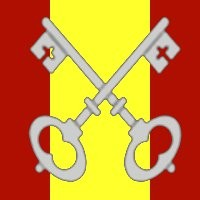
Standard: A pair of keys on a gold and red background
House Head: Baron Temalo Rix Welldown
Power Base: The Manticore Wood freehold in Argos
House Welldown is in its twenty-third year and Temalo has only just inherited his father’s title and power. This makes Temalo the second Welldown to hold the title. Whoever is next, be it Temalo’s yet to be born heir or his sister Iris, will have ten years before the Imperial review of their House standing. House Welldown has had success in their campaigns against local hobgoblin and bugbear tribes. The biggest news in the freehold is Temalo’s search for a bride. He has been more active, socially speaking, then he has over past years. The rumors are flying as to which young maiden is most likely to catch his eye. Political motivations will most likely be a factor in the union, some say more than love or looks. The freehold currently has three settlements, two villages and a small walled town.
While noble houses will come and go, it takes more than that to become known as a Fallen House. The four universally recognized Fallen Houses were once great and powerful houses that fell to ruin within one generation. While the causes varied, a traitorous act was most often the root cause of the fall.
These houses have lost practically everything. At best such a house may maintain a minor holding such as a manor house. Most, however, are destitute and don’t even have retainers. Surviving members of a Fallen House seek a return to better days and the power that goes with those days. It is not uncommon for the bloodline of these houses to have a very unflattering nickname attached to them, such as “Kin- slayers” or “Forked-tongues” as is fitting for the deed that toppled their house.
The four known across the Middle Lands are Arrnas, Endun, Fortess and Ricdon. There are a few others that, while not as universally recognized, are still seen as members of this category. Still others have been lost to antiquity as their bloodlines died out or otherwise faded into obscurity. This is the main reason that the current four are from the past seventy-five years, the memory is still “fresh”.
House Arrnas held the crown of Celyd before it became a republic. Many of them were involved in a plot against the Imperial Throne to seize power. Now known as “Blackhearts” for the actions of Bartimus Arrnas, a rather cruel king and the devious mastermind of the plot for power. The remaining members of this bloodline are mostly penniless and without honor in the eyes of the other Houses. A few of those, directly involved in the plot, escaped execution by fleeing to far away lands; Bartimus and his sons were not among these “lucky” few. Some 60 years later those that remain in the Middle Lands without imperial warrants hanging over them do so as a reminder of the cost of rebellion. The Arrnas standard was a blue crescent moon over a great axe on a light grey background.
House Endun caused a financial disaster that bankrupted a dozen Minor and New Houses. Some of the Major Houses felt that economic pain as well. The assets gained by House Endun due to this subterfuge were seized by the Imperial Throne and House Endun was dissolved by imperial decree. This was one of the few times a House of this size was dissolved with the political support of nearly all the other Major Houses. Now known as “Forked-tongues” this bloodline is not now, nearly one-hundred years later, and may never again be trusted with money or the power that goes with having it. The crest of Endun is a set of black scales on a red background.
Now known as “Mad-hats” or “Kin-slayers” this house fell under mysterious circumstances. Some say it was a curse or other fell magic. In the end a dozen predominate members of House Fortess went totally insane within the span of four moons. For most the insanity was as bloody as it was quick. Duke Polimus Fortess, being one of the most well known. He slew his wife, six of the eight children and a dozen of their most loyal retainers before being killed by his own guards. The guard captain, Kyle Sunchild, later took his own life in grief for having to kill his lord. Stories like that of Polimus were repeated, again and again, with others of the Fortess line over the next few moons, until the House was in such turmoil that it never recovered. The present day remnants of House Fortess are known for extreme and sometimes erratic behavior. Fortess flew a banner showing the tree of life circled by five stars on a purple backing.
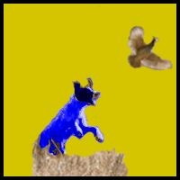
Forever remember as “Blind-eyes”, House Ricdon was run into the ground by a long series of poor choices that culminated in Duke Trevor Montblac Ricdon unwittingly siding with a group of moneylenders in a plot against his king and childhood friend, King Samule Roesoon. While it did come out that the moneylenders had manipulated the duke, which saved his life, House Ricdon could never shake their reputation as fools. As such the House fell into ruin and even four generations have not seen it rebuilt. It is widely believed that another four wouldn’t help. A blue hunting dog flushing quail was the sigil of House Ricdon.
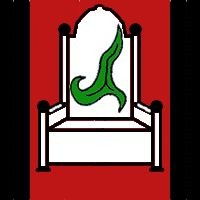
Standard: The green tri-pointed leaf over a white throne on red and black
House Head: Emperor Jean-Baltist Rejun Kalistic
Power Base: The Middle Land Empire
From the time of the Empire’s founding, 540+ years ago, House Kalistic has held the Imperial Throne. It has not been an easy road, from assassination attempts to out right rebellion House Kalistic has faced and won over all challenges. They are masterful adaptors and manipulators who have shown the ability to use force as needed in order to maintain control over the Middle Lands. As a whole, the members of this House have proven time and again to possess the qualities needed to rule. One-hundred-twenty-three noble families (called Houses) have sworn oath to the Imperial Throne. Ten percent of all tax collected goes to the Imperial House.
The responsibility of granting noble status falls mainly on the Imperial Throne. There are three activities involved in this process. First is granting a title to someone not of a noble bloodline. Second is elevating a bloodline to noble status, thereby making a New House. Finally, reviewing a bloodline’s claim of nobility which is done ten years after a New House has its third head of house. While many high ranking nobles can grant a title, a noble house can only be created or destroyed by decree of the Imperial Throne.
In an average year the Imperial Throne will receive a thousand petitions requesting a noble title. While not all of them will be accepted, about half will. As many as a dozen petitions for New House status are submitted each year. At best, only one or two will be granted. On average, one New House is up for review each year. Historically speaking, five out of seven will fail the review and be dissolved. The Imperial Throne takes noble bloodlines very seriously and is careful to weed out those that it sees as not worthy of the responsibility and honor that comes with ruling. Great care is taken to show those that failed to measure up had flaws and it was not whim that killed their dream. At the same time, those that pass are, privately, left with the distinct impression that it was only the good grace of the Imperial Throne that allowed it. In other words, they are left feeling in debt and grateful for the good favor of House Kalistic. One way or another, the ones that don’t show they see it that way will always fail the test.
While oath to liege and country is strong, the bonds of House (family) are just as strong. As the most powerful of the noble Houses hold lands in more then one kingdom no one wants war between kingdoms. This has led to less open warfare and more subterfuge and plotting. When there is war, it is more likely to be between Houses than countries. For the most part, only the smaller Houses engage in war. Such conflict between the larger Houses could easily snowball into a conflict that would pull every nation in and cause great loss of life.
The vast majority of nobles (about 90%) are not members of a house. They are low level nobles who lack the backing, both political and financial, of a noble who is part of a house. Any wealth they have comes from the taxes they collect. Any political influence they have comes from who they know and who owes them favors. While many collect taxes, few are owed favors. While they are not members of a house they owe their title to one house or another. Many times, that is directly to House Kalistic. When that is not the case, it’s the house that sponsored their petition. Regardless, these nobles are the pawns of noble society. They will spend their lives working for greater position and more power; their success rate is low.
The people of the Middle Lands are diverse. As such it is not a simple matter to describe them. Some are harsh, others kind. Some are creative while others are drones. Some are kings and more are beggars. Some cheat and others have honor. In short, they are a great deal like we are, just people.
The estimated 30 million people calling the Middle Lands home are spread out along rivers and coastlines and imperial roads and the farmland adjacent to them. This map shows low (yellow), medium (orange), and high (violet) population density. That is not to say no one lives in the other areas but they are so underpopulated as to be considered unsettled wilderness lands. The vast majority of people do not live in a city but in the smaller villages and hamlets spread across the countryside. Around 1.3 million people do live in the major cities. Another one and a half million or so live in the numerous mid and small sized cities. Leaving a bit over 27 million other inhabitants spread out in towns and villages of various sizes across the Middle Lands. A small number of citizens live in isolated dwellings, meaning they are outside of any settlement’s boundaries. Sources of food and fresh water are large factors in population distribution as is safety and trade route accessibility. The majority of cities and towns are very close to 100% human. Because most non-humans living in the Middle Lands have their own villages and small towns, the average small town human could go years without seeing one. In a few areas it’s possible for a person to go their entire life without seeing someone not of their own race.
How do the common folk of the Middle Lands live? There is no easy answer to this, it depends on where they live, what they do, who rules the area, and so on. On the whole, the average untrained worker in a rural area will make about five gold coins in a week. This will be enough to comfortably support the worker should the local economy be inline with base wages (5gp/week in this case). Furthermore, they will be be able to provide a very modest lifestyle for a family. This income will cover food, a home, clothing, taxes and so on. Base wages will tend to rise with cost of living but at a pace that is not as responsive to changes. In other words, it will take a little more time for wages to rise than it took for prices to rise. Urban area wages and cost will be a bit higher than their rural area counterparts.
What follows is an overview of different living conditions, referred to as GLC. It is meant to be a way of generalizing socioeconomic factors and condensing it into meaningful labels for your use.
- Destitute: a horrible existence. No home or income (or very little income) is had by a person at this level. Starvation is a real and present danger. Virtually no belongs beyond the rags they wear are accumulated. Theft and/or survival skills are required daily. Payment of tax is impossible but there is very little for such a person to pay tax on.
- Poor: a hard life. Small scale farmers, unskilled labor, and the elderly often find themselves in this group. Such people are often underemployed or have an exceedingly large family to support. They are not often a home/land owner. Normal shelter for such people is a single room shack/apartment or a tent. The cheapest possible food is acquired, be that purchased or grown/raised/foraged and shortages are common. Belongings are spartan, often homemade, and repaired far more often than replaced. It is a struggle to pay taxes and they are in near constant danger of losing everything to the taxman. Extra coin seems a fiction to these people.
- Below Average: a very modest lifestyle. Farmers and unskilled (or low-skilled) labor and the elderly often find themselves in this group. Additionally, they are sometimes underemployed or receive subpar pay or have a family to support. Food is often what is cheaply available but shortages are rare. It is not unknown for such people to own their home but it is far less common in urban areas as opposed to rural areas. The common domicile is a small, simple house or apartment. Belongings are not abundant and often repaired/patched. Taxes are a burden that sucks-up all the “spare” coin such people have. It is very hard for these folks to save.
- Average: basic needs are accommodated. This group includes successful farmers and full time workers (newly skilled or unskilled), sometimes having a small family. Soldiers often fall into this category. Food is of decent quality and quantity. Home ownership is common, yet more so in rural areas. Such a home is often a comfortable small or mid-sized house/apartment. Belongings are adequate and in decent condition, not often new but well maintained. Taxes take a sizable portion of income. Saving is possible when care is used to manage expenses.
- Above Average: has just a little more than most. Established artisans and merchants, mid-level government officials, military officers, or highly skilled workers. Food is readily available and of good quality. The home is most often owned and commonly a mid-sized house/townhouse. Belongings are of good quality (often new) and abundant. Taxes take a sizable portion of income. Saving and even making small investments are possible for such people.
- Wealthy: well-off and with few material worries. Money lenders, high-end merchants, top level government officials, low-level nobles. Food is plentiful and of excellent quality. Homes are owned and are often a family estate with lands and servants and a wide range of amenities. More than one dwelling is very possible. Belongings are of fine quality and excellent condition and exceedingly abundant. Taxes are not a burden. Saving and investing are simple matters.
- Extravagant: little that can be had with gold is beyond reach. Nobles and other lucky people fall into this category. Commonly, food is both excessive and exotic. Multiple homes/estates (fully outfitted and complete with servants) are owned. Large swathes of land and several businesses are owned. Belongings are plentiful, exotic and perfectly maintained. Taxes are not a burden. Saving and investing are exceedingly trivial matters.
This is meant to be an indicator of a region’s economic viability. In essence, it is the ratio of the base wage of an area vs the cost of an average living condition, that being the “average” GLC. Both the wage and cost are fluid, average, values and should not be taken as gospel. They exist only as a tool to help the GM by giving them an idea of local conditions so they can convey that idea to the PC’s.
The base wage is the weekly salary of an unskilled worker. In an average town with an average economy (average supply/demand) that is about 5gp a week. In the same case, cost should be 5gp (or just a bit less than 5gp) a week. This is the theoretical ideal. So, in this case, ALCC/BW is expressed as 5gp/5gp. In practice, because so few cases are covered by that ideal, the numbers will be larger or smaller as dictated by local economic factors. Things like tax rate, supply chains, customer base, worker saturation, job availability, and so on will directly affect the numbers. In the end, there is no formula to calculate these numbers, it is a GM’s judgment call.
The relationship between the GLC categories, a person’s income and the ALCC/BW is relatively straightforward. The closer a person’s income is to the cost in ALCC/BW the closer they are to having an “average” living condition. The ALCC/BW shows the general tendency of the local economy to be a “favorable” worker environment. Generally, the cost (first number) should be a bit less than the base wage (second number). But as long as they are close the common folk will not suffer too greatly and the general population will drift toward “average” GLC. As the base wage and cost drift farther apart the general population will drift away from an “average” GLC as dictated by the direction of the shift. Higher cost makes the drift move toward “poor” GLC. Likewise, a higher base wage would make the drift move toward “wealthy” GLC. Neither case is desirable, as both show an unhealthy or unsustainable economy.
A good rule of thumb is that a well managed economy will stabilize with cost between 99 and 101 percent of wages. To be clear, having a cost that is higher than base wages does not mean that everyone is automatically operating with a weekly deficit of funds. It means that cost is such that people have to be more frugal and cannot always afford everything they need and will have to settle for a cheaper alternative in those cases.
Use the following table to assess what a person’s GLC would be based on what percentage of cost (in ALCC/BW) their income is. In the case of income levels under 200% of cost, the resulting GLC can be adjusted downward by one or two categories if they are supporting a mid-sized or large family.
Table: Global Living Condition
| I/C to GLC |
Destitute |
Poor |
Below Avg. |
Average |
Above Avg. |
Wealthy |
Extravagant |
|---|
| Income/Cost |
0% to 40% |
40% - 70% |
70% to 90% |
90% to 110% |
110% to 300% |
300% to 2500% |
Over 2500% |
The four seasons of the year.
| Season |
Description |
|---|
| Spring |
The time of planting. |
| Summer |
The time of growing. |
| Autumn |
The time of harvesting. |
| Winter |
The time of preparing. |
Months in the Middle Lands.
| Month |
Length |
Translation |
|---|
| Mo’Ko |
30 |
Low spring |
| Fer’Ko |
32 |
Mid spring |
| Ty’Ko |
30 |
High spring |
| Mo’Rae |
30 |
Low summer |
| Fer’Rae |
32 |
Mid summer |
| Ty’Rae |
30 |
High summer |
| Mo’Set |
30 |
Low autumn |
| Fer’Set |
32 |
Mid autumn |
| Ty’Set |
30 |
High autumn |
| Mo’Helt |
30 |
Low winter |
| Fer’Helt |
32 |
Mid winter |
| Ty’Helt |
30 |
High winter |
What the average commoner does to make a living is important. When they do it also matters. The wheel of the year, the calendar, drives when many of these needful things are done.
Food production is just about the most important activity in the Empire. So many citizens are a part of agricultural work that it drives, not only the commoners, but the Empire as a whole. Hence the calendar is based around planting, growing, and harvesting. This is the way it has been for most of recorded time.
There are four seasons in a year. Each of the four seasons are divided into three sections called months. This makes twelve months in a calendar year. Each month is 30 or 32 days long. A year is 368 days long.
While there is a “standard” name for each month in the Empire, some tribals have their own names. Foreigners, also have other names for the months. Regardless, the times are marked by the stars and phases of the moon and the movement of the sun. So, whatever name is given to it, the month is still what it is.
There are no standards for naming weeks or days of the week. If names are used, they are by local or regional tradition. For official Imperial needs, the year, month, and day of the month are all that are required under the law. For the average citizen, knowing the day of the month is enough. As example, when it is the 20 th day of Ty’Rae the average citizen knows that by this time of the year the southern (warmer) areas have already planted their second crop of the year. Any that haven’t done so will not have time to grow a second crop.
It is not uncommon for a city sized settlement to have a gnomish clock/calendar in their main square or fort. Such clockwork devices count minutes and hours as well as days and months and years.
The life of a noble is not as easy as it may seem. Sure, most nobles have a measure of wealth and that can be helpful. Some even have power which can be enjoyable. But there are responsibilities and demands in a noble’s life.
At the core, nobles exist to govern the Empire. The lowest level local nobles manage local resources and collect taxes. The nobles above those see to greater goals of the Empire but in essence do the same thing at a regional level. They also keep the local level nobles in line. Above the regional level nobles are the royal nobles. They govern a kingdom and likewise keep the regional nobles in line. Again, it’s the same job just at a higher level. All of them serve the Imperial Throne which guides the Empire.
Tax is collected by the noble in order to operate the government, offering protection and infrastructure. First, a percentage of the funds are given as tribute to nobles above the one collecting taxes. Then they are required by the Imperial Throne to keep a standing military force of a size mandated by the settlement’s size. That will take a large portion of the tax. So long as the military force and tribute are in order what remains is used as the local noble dictates. It is completely within their power to use the funds for personal needs as well. Most do so freely. The smart ones invest some in local infrastructure.
Military resources are directed and used by the noble. They are used to protect the local population, as much from orc hoards as from criminal elements. All the forces a noble commands are subject to be called upon by the nobles above them in service of the Empire. Indeed, every citizen of the Empire is subject to being called for military service, so long as they are able bodied.
While not all nobles see it as such, they also serve the people they govern to a degree. Their plans and actions affect everyone below them. A bad decision on the noble’s part can plunge their territory into a state of ruin. In the end a good leader will understand that they ultimately share the fate of those they lead. So, what is good for the people is generally good for the noble.
Not all nobles are created equally. Some have land and title, others do not. Some are wealthy while others must go to moneylenders on a regular basis. Overall, nobles can be divided into general groups based on power and standing, of which there are three: new noble, untitled nobles, and old blood noble.
New nobles started life as a commoner and by way of deed were recognized as having “noble blood”. If the deed showed devotion to and did a service for the Empire they could be granted a noble title. Most often this is a Knighthood the rest of the time it’s a Magister’s seat. While history has recorded times in which even higher titles were bestowed, that practice is too rare to be considered. Neither the title of Knight nor Magister is a title that is passed to ones children so the new noble is not guaranteed to be a member of a “noble bloodline”. To be recognized as a member of a noble bloodline by the Empire means being granted House status. That takes more than a single deed and often more than one family member doing the deeds. Therefore, it is not only possible but common to have a title and not be a member of a House. Nobles at this level have little in way of power or wealth but they are the most numerous group.
Untitled nobles are members of a House but have not earned or inherited a title, for instance the second or third heir. They are still referred to by the general title of lord or lady. All other titles are more specific. As example, Knight of the Realm, Magister of Dorbank Hamlet, Baron of the Seven River Vale, and so on. Untitled nobles do as much as they can to gain a title because with a title they gain power and influence and wealth. Military service is one of the quickest ways to gain a title and may young nobles try it.
An old blood noble holds a title and is a member of an established House, i.e. minor or major. They are the smallest section of nobility and the holders of power and wealth. When people think of nobles this is the group that comes to mind.
The noble’s life is full of power games and plots and fear. This is not a life for everyone, the stress can be fatal. It is after all, a long way down from the top. Just look at the story of any Fallen House. One example of the extreme measures nobles take in pursuit of their games, hiding magic use. Arcane magic is linked with the Savage Time in the minds of many. For this reason rule by mages is not common as they are not trusted. So, nobles will rarely practice magic openly, it’s just too risky.
The Middle Lands have a fairly sizable population of elves, dwarves, gnomes, halflings, and so on. It is, however, not commonplace for all of these races to share settlements. Even the major cities will have only a small number of non-humans, often less than 2% of the total population. The noteworthy exceptions being Balashar, Brazhale, Ghuntos, Hilldale, Mischihoon, and Vesral. Of those, only Balashar, Ghuntos, and Hilldale are part of the Empire. Non-humans count for 26% of the population of Balashar.
The smaller cities and towns are often, but not always, as lacking in diversity. Most non-humans living in the Middle Lands have there own villages and small towns. Because of this the average small town human could go years without seeing another race. In a few areas it’s possible for a person to go their entire life without seeing another race. The most common contacts for humans are with gnomes and halflings.
The lack of diversity has had some detrimental effects on the Empire’s citizens. One of these being a very insular mindset. This is more common in the smaller settlements that lack any contact with non-humans. In these places non-humans can easily be the focus of curiosity or hostility. It is another question as to if those feelings are openly expressed.
Dwarves have underground cities in every mountain range of the Empire. These settlements are large as the underworld is a dangerous place. Having a population between five-thousand and twenty-thousand, they are often located in mineral rich areas with access to water. While they are less inclined to seek out trade, their wares are highly desirable. Arms and armor of dwarven make are in high demand across the Empire. Due to this, human towns actively seek trade opportunities with any nearby dwarven cities.
Elves have settlements all over the Middle Lands, on the rolling plains, in the forests, among the hills, along the seaside, and by the rivers. These settlements commonly trade with any friendly nearby communities, human or otherwise. Some will produce all manner of elven wares for trade but many are not that concerned with commerce and just trade for essential items. Most have a population less than a few thousand yet there are rumors of larger elven cities in the deep unexplored forest areas. In the major cities of the Empire, elves are often the smallest non-human population. Human cities tend to be too “turbulent” for the average elf. Half-elves are more common than elves in human areas.
Gnomes are one of the races that actively seek out and join human settlements. They are also one of the least numerous of the non-human races in the Empire. A fifth of all gnomes live in human settlements. By far, Hilldale has the largest percentage of gnomes in the Empire’s major cities. They do have their own smaller gnome only communities scattered in the hills of the Empire. The population of such towns is on average two or three thousand gnomes and they tend to actively trade with their neighbors.
Halflings love their communities, yet are attracted to the human settlements. They are often one of the larger segments of non-human population in the Empire’s major cities. Their own settlements tend to be in remote yet serene areas, often in the forest or among hills. Their settlements’ population is on average at least a thousand and they maintain good trade relationships with neighboring friendly communities.
Orcs are one of the most numerous of the “evil” races found in the Empire. While they normally settle in hills and mountainous regions, the tribes of the Middle Lands are not that picky. They can just as easily be found in any borderland region, on the plains, in the forest, and along the coastline. They actively prey on any neighboring settlement, human or otherwise. Raids and slavery are how they survive. Sometimes they do more than raid and as a result the population of half-orcs in the Middle Lands is alarmingly high. Some of the larger border towns have hundreds of half-orcs among their population. They are not often well treated in their home village but many find success in military service.
Outside of the borderland freeholds, the occupants of the human civilized areas generally don’t believe in the more exotic monsters. While many will accept the existence of the common monsters such as orcs, goblins, hobgoblins, troglodytes, bugbears, gnolls, and kobolds. These same people will balk at the idea of frost giants, or dragons, or phrenic scourges, or any other beast not commonly found in their own metaphorical backyard. These are looked at as bard tales told to entertain children and frighten folk into staying close to home. This attitude is lessened in the borderlands but not totally dispelled.
Producers, crafters, and merchants make up the key links of commerce. Producers (farmers, miners, hunters, trappers, livestock breeders, etc…) generate raw materials many of which are sold to crafters, sometimes by way of merchants. These crafters turn the raw materials into goods that are then sold to the general public. As often as not, the sell of refined goods is made to merchants who then transport and sell them to the public. Smaller settlements have fewer merchants, hence more crafters will sell direct.
Most settlements will form local guilds in order to protect product prices. They will establish acceptable prices for their wares as well as penalties for those members that try to undercut the price. Prices are set at the middle levels, this leaves prices of products sold to the general public more flexible. Guilds are, generally speaking, powerful organizations with money and at least some local influence. They use their influence to further the guilds goals. One of the first uses is ensuring that non-members cannot do business. A common method being higher taxes for non-members.
The larger the settlement, the more specialized the guilds. As example, a village of 800 may only have a general merchant guild while a city of 18,000 can easily have multiple guilds, one for each type of merchant (wool & cloth, beer and wine, grain, cheese, and so on). In larger settlements, crafters are as likely to form guilds as merchants are. Finally, guilds facilitate the trade they serve by matching apprentices with mentors. Successful guilds are on the lookout for fresh, young, malleable talent.
Shown below are some of the more commonly found businesses possible in a given settlement. Also shown is the frequency of shops per 10,000 inhabitants. Frequency is a suggestion, the city may have more or fewer shops of a given type as determined by the GM. Also, this is not a complete list.
Table: Commonly found businesses
| Shop |
#/10K |
Description |
|---|
| Bakers |
12 |
Specializes in making/selling baked goods. Often the only ovens in town. |
| Barbers |
10 |
Hair cut, shave, trim, minor surgery all done by the barber. |
| Bathers |
4.5 |
Operators of a public bathhouse. |
| Blacksmiths |
5 |
A smith that works with iron and steel to make tools and horseshoes. |
| Bleachers |
3.5 |
Specializes in bleaching cloth, furs, skins, and wood pulp. |
| Brewers |
6.5 |
Specializes in making and selling beer, ale, mead and the like. |
| Brickers |
4 |
Baker of bricks. They require a good source of clay like soil. |
| Bowyers |
7 |
A maker of bows. Most often made of wood or bone. |
| Buckle Makers |
6.5 |
A crafter that specializes in buckles, buttons and other clothing fasteners. |
| Butchers |
8.5 |
Specializes in livestock slaughter and selling the meat. |
| Carpenters |
20 |
One who builds structures and items from wood. |
| Chandlers |
14 |
A maker of candles, oil, and lamps. |
| Cheese Makers |
6 |
One who makes cheese and butter. |
| Coopers |
15 |
A crafter that specializes in making and repairing barrels, vats, and tubs. |
| Cutlers |
4.5 |
Smith who makes and repairs cutlery from iron, copper, silver, or gold. |
| Dyers |
5.5 |
One who dyes cloth, furs, and skins. |
| Fletchers |
15 |
A maker of arrows. |
| Fishmongers |
7.5 |
Specializes in preparation and sell of all types of seafood. |
| Furriers |
40 |
A crafter who makes and repairs goods made of furs, such as clothes. |
| Glove Makers |
2.5 |
A crafter who makes and repairs gloves (cloth or leather). |
| Harness Makers |
5.5 |
Leatherworkers that specialize in making/repairing harnesses. |
| Hat Makers |
10 |
One who makes and repairs hats. |
| Hay Merchants |
4.5 |
A merchant that specializes in selling hay and other animal feed. |
| Inns |
5.5 |
A boarding house, generally having 3 to 15 rental spaces. |
| Jewelers |
11 |
Dealers of precious stones. Also knowledgeable in setting stones. |
| Locksmiths |
5.25 |
A smith that specializes in making/repairing locks, puzzles, and devices. |
| Masons |
18 |
One who builds structures from brick and/or stone. |
| Mercers |
12 |
Merchant that sells cloth. |
| Moneylenders |
2 |
Act as bankers, providing loans and a place to store money. |
| Painters |
7 |
An artist who paints portraits, landscapes, and/or frescoes. |
| Plasterers |
8 |
A crafter that specializes in laying and repairing plaster. Used on buildings. |
| Potters |
15 |
A maker of pottery. |
| Purse Makers |
9 |
One that makes purses, pouches, and other small bags. |
| Rectifiers |
2 |
Someone that makes and sells distilled spirits. |
| Redsmiths |
6 |
A smith that works with copper and brass. |
| Roofers |
5.5 |
One who builds and repairs roofs. |
| Rope Makers |
5.5 |
A maker and repairer of rope. |
| Rug Makers |
5 |
Someone who makes and repairs rugs. |
| Saddlers |
7 |
Crafters that make and repair saddles and tack |
| Scabbard Makers |
8 |
A leatherworker who specializes in sheathes and scabbards. |
| Sculptors |
3 |
An artist who makes stone statues. |
| Shoemakers |
50 |
One who makes and repairs shoes. |
| Spell Shops |
0.5 |
Sellers of spell components and other scroll/spellbook supplies. |
| Spice Merchants |
6.5 |
Merchants who deal in spices. |
| Stationers |
3 |
Sells books, paper, ink, and writing devices. Some offer copying as well. |
| Tailors |
40 |
One that makes and repairs clothing. |
| Tanners |
5 |
Makers of leather. |
| Taverns |
25 |
Public eateries that generally serve local cuisine and beverages. |
| Vintners |
4 |
Specializes in the making and selling of wine. |
| Water Carriers |
12 |
Service that brings water to others. Some manage cisterns and aqueducts. |
| Weavers |
16 |
A cloth maker. |
| Whitesmiths |
3 |
A smith that works with silver and/or gold. Often attached to a jeweler. |
| Wheelwrights |
25 |
Makers and repairers of wheels. |
| Wood Carvers |
4 |
Makes wooden implements and/or artistic pieces. |
| Wood Sellers |
4.5 |
A merchant of lumber, firewood, and/or charcoal. |
| Woodwrights |
9 |
Maker of wooden furnisher and other common implements. |
A business will only exist where there is a demand for its product and a supply of the raw material needed to make the product. Cities with more than the average number of a given shop type will most often be producing the extra for export. Likewise, cities with fewer will often import to makeup the difference. Smaller towns will often combine shops, as example the local smith would work with any metal yet they may not be great with all of them. In this way a town that is not large enough to support a blacksmith, redsmith, and whitesmith would have one smith doing all of these duties.
Construction of settlements varies with climate, materials, wealth, and population being some of the major factors. The typical types of buildings making up a settlement includes, dwellings, businesses, fortifications, temples, and municipal structures. This section will look at some examples of the materials and elements used in creating these buildings.
Having a brick or stone hearth is expensive but not uncommon in many dwellings. However, a building made entirely of brick is prohibitively costly. Just making brick in such large quantities is next to impossible without a massive kiln to fire the clay and make brick. The source of clay is important as well, some clay makes better brick than other clay. So, the combination of limited material, specialized facilities, and add in the skilled labor needed to make and use brick, then it all comes together as an expense that only the most wealthy can afford. Buildings made of brick can easily reach seven stories. More than that is rarely done as there are few skilled enough in both engineering and use of brick to do it. Also, the quality of brick used would have to be of the highest caliber with very consistent material and manufacturing going into them. This makes such structures almost unseen outside of major cities.
Earthen buildings, cobb (or adobe, in hotter, drier climates), is made by mixing mud, straw and either sand or clay. For adobe, these are formed into blocks then sun and air dried then bound together with mud to form walls. Traditional cobb doesn’t use blocks and is more sculpted as a whole but still air dried. Buildings made of earth tend to be inexpensive, well insulated, and very sturdy (when properly maintained). With a good roof and drainage, they do well in any climate, but dryer is better. While not impossible, it is not practical to make an earthen building taller than two stories. Most dwellings will be one level, having two or three rooms at most. This makes a fine choice in smaller settlements and rural area housing. For these reasons, many common folk live in earthen homes. In the coldest of places, where the earth is frozen year-round, snow and ice are sometimes used to make dwellings.
Made with hides, tents or yurts are used only in small, very new, or semi-nomadic settlements in regions that do not see much in the way of heavy snowfall. As a percentage, very few people live in such structures within the civilized lands. It is more common in borderlands and/or hotter climates. These dwellings are almost exclusively single story and, very often, single room structures. Tents sold commercially in the civilized lands are just as often made with an oiled canvas as with hides. Caravans trekking the Great Desert make common use of large canvas tents on their journeys.
Worked stone block builds are very strong but the labor required to mine, transport, and construct with this material strictly limits its use. Even crude river rock or other rough stone and mortar buildings are many times the coin and effort of wood. For this reason, it is only used by common folk when nothing else is available and often only by enlisting the help of every able-bodied neighbor within miles. Helping a neighbor means being able to ask for help in return. Like with wood, a stone structure can vary from crude to masterwork. The number of rooms is only limited by coin and land. Often, worked stone buildings will rise to five stories. Higher is possible with good engineering but the danger is collapse due to its own weight. Larger cities see more use of stone as a building material for non-dwelling buildings.
Wooden structures are some of the most varied in the Middle Lands. They can be rough and crude split logs, or fancy and finely worked planks, it all depends on the skill of the builders and the coin spent. Found in all climates, they are only limited by the supply of local trees. While they can easily reach three stories, it is rare that they go higher than four without a master builder to design and oversee construction. All but the largest of cities don’t normally build wooden structures so tall. The vast majority being three or fewer stories. The size of rooms and the number also vary greatly. This makes wood the most common choice for non-dwelling buildings in settlements across the Empire.
Basements are not common because of the problems with drainage. What is more common is a small root cellar, usually placed in the middle of the dwelling to minimize water issues. Large cities have sewer systems and storm drains that improve drainage to the point that basements are much more likely. Still, they are too expensive for many. However, some business will find a basement extremely useful as a storage area for goods that benefit from temperature controlled environments.
In extremely cold or hot climates, cutting a dugout out of a hillside will help make a dwelling more comfortable year around. It only takes a few feet to make a difference so, it’s common to have a half wall with a roof over a shallow dugout. In the coldest environment, the dugout is made so deep that its basically a hole in a hill with a roof. In rural areas, when the terrain is suitable (ie hills), the dugout is almost as common as cobb dwellings. Halflings are very fond of this type of dwelling, but they take it to another level of craftsmanship. For them, building a dugout becomes a work of art.
The make of a building’s roof is at least as important as its walls, if not more important. There are a few different types to choose from, the most common is thatch. Basically, woven straw or reeds, thatch is easy to work and the material is plentiful in most places. The greatest down sides to thatch are the need for high maintenance and the fire risk. Most larger towns avoid thatch in favor of shingles or tile. Shingles are most often made of wood and secured in an interlocking pattern with nails and a bit of tar. The more expensive ones are oiled or shellacked for added water resistance. An even more expensive option is tile, which is due mainly to its production similarities to brick. However, the most expensive choice of roof is, by far, tin sheets. It is very hard to make, rivaling tile or brick. Each sheet is a square between three and four feet. These sheets are placed on the roof in a similar fashion to shingles. Tin is also one of the most fire resistant type of roof.
How large a settlement is influences many of its aspects such as wealth and the protection level it has available. This relation is roughly summarized in the following table. Yearly tax yield is linked to population, special industry and special resources. Each such industry or resource can raise the base tax yield between 2% and 10%. Conversely, a settlement in poor condition can lose as much as half its tax yield until conditions change for the better or the settlement collapses.
Table: Settlement Aspects per Size
| Settlement Type |
Population |
ALCC/BW |
Yearly Taxes |
City Guard/Army |
Defenses |
|---|
| Hamlet |
Up to 200 |
3gp/3gp |
Pop x 15gp |
militia |
none |
| Village |
201 to 1000 |
4gp/4gp |
Pop x 20gp |
militia + ½% Pop |
Level 1 |
| Small town |
1001 to 2000 |
5gp/5gp |
Pop x 30gp |
militia + ½% Pop |
Level 1 or 2 |
| Large town |
2001 to 5000 |
5gp/5gp |
Pop x 35gp |
militia + 1% Pop |
Level 2 |
| Small city |
5001 to 10000 |
6.5gp/6.5gp |
Pop x 40gp |
militia + 1% Pop |
Level 2 or 3 |
| Medium city |
10001 to 30000 |
8gp/8gp |
Pop x 45gp |
militia + 2% Pop |
Level 3 |
| Large city |
30001 and up |
10gp/10gp |
Pop x 50gp |
militia + 3% Pop |
Level 4 |
Examples of special industry include the apothecaries of Rocrest, the canneries of Covehaven and the lens crafters of Foamrest. What makes these special is the fact that they are both rare and renown so traders come from across the Middle Lands for their wares.
Examples of special resources include precious metals, gemstones, spices and silk. Anything that is both rare and valued is a special resource. That is assuming the settlement is harvesting it. Examples of poor conditions include famine, plague, war or anything else that would affect the working populations’ ability to produce. Poor conditions that persist will lead to outbound migration.
Each settlement’s guard is responsible for maintaining order and protecting it from hostile forces. The militia is only called upon in the later case. About ten percent of the population is fit for militia duty but up to thirty percent can be summoned in dire circumstances. Anyone called for militia duty can not run farms or businesses. If prolonged, this absence can lead to “poor conditions” for the settlement.
Defense level refers to what defense systems such a settlement should be capable of having, they may not have it or may maintain a lower defense level but they are of a size to support it if they choose to do so. Construction and maintenance of these defensive systems will use a noticeable amount of the settlement’s tax revenue.
Table: Settlement Defenses
| Defense Level |
Possible Details |
|---|
| 1 |
Wooden palisade or simple moat, with a small fort of wood or a stone tower. |
| 2 |
Simple stone wall and a small fort of stone and wood. A moat is possible. |
| 3 |
High stone wall with battlements and small keep (a more complex fort) |
| 4 |
High stone walls with battlements, a moat and a large keep. |
Built of wood and/or stone, forts are military installations. The basic composition has a small base of just a few buildings surrounded by basic walls or a palisade. A small tower for archer placement and lookouts is a common feature. Barracks, a storehouse, forge, stable and command center are other features often found in a standard fort. Walls surrounding a keep range from the simple log wall to rough stone and mortar construction. Eight feet is an average height for such a wall.
Made largely of stone, keeps are larger, more complex versions of forts. They often serve as home for the local noble as well. Having several towers for defensive purposes is common. Their walls are stone, taller and stronger than those that surround a fort. Most are less than twenty-five feet in height. Only the largest would have cut stone walls. Overall, the keep exists to resist siege and is build reflecting that fact.
The variety of moats range from a simple ditch, less than three feet deep, to a stone lined trench eight or more feet in depth. Lining the moat with sharpened sticks is common. Filling them with water is only done for the deeper, stone lined variety. Without the stone lining, the water tends to erode a moat’s sides and it collapses in, partly filling the trench. Most moats are built to ring a fort or keep’s outer walls. They exist to break an opponent’s charge as well as serve as a barrier. The most used width is ten feet, but larger ones, spanning thirty feet have been constructed for larger settlements. While not always the case, moats filled with water are often connected to a nearby stream or river. Stagnate water is a bad thing.
It’s a wall made of tree trunks sunken into a packed earthen mound. The earth, piled up and packed down on either side of the wall, provides strength and stability. It also make the palisade easier to build than it would be if the logs were driven straight into the ground. Standing eight to twelve feet tall, the palisade is often a temporary or starter fortification. A shallow moat is a common side-effect of construction. While not a standard feature, some palisades have a wooden platform along the interior side for defenders to stand on. This allows them to see and attack forces assaulting their position while maintaining cover.
Most walls built as fortifications are thick and stone. Rough stone and mortar are most common with cut stone being seen less often. In a typical defensive wall, the outward facing side is virtually sheer while the interior side is often tapered, giving a base that is wider than the top. At the top, a defensive wall is often several feet wide. For the smaller, or more narrow walls, a wooden platform will often ring the wall near the top. This allows defenders to see and attack any force assailing the wall and still allow them to take cover behind it. The more ambitious cut stone walls used in major cities are even wider. As much as ten or fifteen wide at the top. This allows them to forgo the wooden platform and have defenders wall along the top of the wall itself, while still protected by a small secondary wall with battlements. Often, such secondary walls are built on both sides of the walkway to maximum protection from either direction. Walls rarely enclose the whole settlement except in (or near) the wilderness lands. In most cases, they do cover enough area that a fair percentage of the population could seek shelter within them. All the major cities have walls, not so much as a defensive structure but as a display of wealth and power. Wise settlements maintain a warehouse within their walls for siege provisions.
The stone watch tower is the most basic of fortifications. It is used as a mini-fort and favored for being encapsulated as well as its small footprint. Most are between thirty and forty feet tall, with a base width of about twenty feet. Some are square based and others have a round base. All of them have a small platform on top, ringed with battlements and useful for both archers and lookouts. While not always the case, it is not uncommon for such a platform to have a roof. The vast majority are built of rough stone and mortar, having walls that are two or three feet thick. A common style of construction has the tower’s outer wall wider at the base and tapering toward the top.
In most of the “civilized” lands, settlements are spaced along simple dirt roads about eight to twelve miles apart, depending on the terrain. This is just enough that all the farms along the road are within the two walking hour distance of one of the settlements. So, on average it takes half a traveling day (4 hours) to get from one settlement to the next. The borderlands are not so well populated and it could be any number of miles to the next settlement. The existence of a road is not even a given in such places.
The closer to the borderlands one gets, the newer the settlements are and the more likely they are to have walls. After an area is proven “safe” for a few generations, walls are no longer maintained and may even be taken down. Unless the settlement has the coin to keep them in good repair, most remove them or just keep a wall around the oldest section of town. Even if they are not needed, having a wall will make a settlement’s people feel better. This is true even when the wall only surrounds a part of the settlement.
All but the smallest of towns has some type of fort or tower. These are often used, at least, as the base for the local constables and the office, if not the home, of the local noble. In the case of smaller settlements, these buildings often do more, serving as city hall, jail, police station, and safe haven in times of war or similar danger.
Another all but universal feature of settlements is the public square. In smaller settlements this could be a nearby grassy field. The larger, more established settlements often have a paved square near the center of town or just outside of the local fort/watchtower. These areas are used for markets, celebrations, carnivals, important weddings, public addresses, punishments, executions, and other events that would be important to the settlement as a whole. The square is a matter of pride for locals.
Another thing about living in a settlement is the density, regardless of how small it is the settlement will be fairly compact. In the beginning this is driven by the practicality of building a wall around the smallest possible area. Keeping it compact is necessary for other reasons, for instance as a settlement spreads out the land it takes up can’t be used as farmland. Also more infrastructure is required to cover the city as its area increases. Not everyone is comfortable how much closer together people live to each other in a city.
Water is one of the most important things to a city. Smaller settlements have central community wells. As it gets larger the practicality of wells diminishes. Often times a nearby stream is diverted to fill cisterns that feed a fountain network. These fountains can be placed where wells can not. If a stream is not available a well and pump can supply the cisterns and hence the fountains. Such pumps can be wind or water or animal or people powered. Larger cities can have more elaborate water delivery systems, even to the point of piping water under pressure to all but the poorest of homes. Such pressurization is often supplied by gravity as water is fed from tall, above ground, cisterns. The taller the cistern the better the water pressure. The smallest used are cylinders, 10 feet wide and 20 feet tall, holding about 10,000 gal.
Sewage systems naturally follow water delivery systems. Storm drains are the basis of this system. Excess water from fountains and the like is directed into the storm drains, which helps to keep the waste people dump from building up. In the large cities, waste is piped out of homes just as water is piped in. Again, the excess water from the water delivery system is harnessed to flush out the waste conduit and carry it all to the nearby storm drain. The settlement’s storm drains often empty into a stream or river which can be problematic for settlements downriver. In the largest cities the storm drains, sewers, and water supply conduits have evolved into a full fledged tunnel system. Such a set of tunnels can attract unwanted attention from monsters looking for a home. Ooze and pudding monsters are common in these tunnels. Other vermin and giant vermin are also problematic. While the more intelligent monsters are rare, they do, from time to time, take up residency in the tunnels.
Roads are vital to the settlement. Smaller settlements have simple dirt roads. These will be marked with potholes and mud will be a big issue when it rains. Such roads have no storm drains. The next step up is the cobblestone street. Small river rocks or large pebbles are used in paving the street. It is common practice to build basic storm drains along these roads. Cobblestone is a huge improvement over dirt roads. It is much more durable but it’s unevenness makes for a bumpy ride in cart or wagon. As a settlement grows it will add cobblestone streets as it can. Often the main streets are done first. The more traffic or the more important a street is the more likely it is to get cobblestone treatment. The larger cities have more elaborate streets made from cut stone with high capacity, below street, storm drains. Cut stone is even more durable than cobblestone and gives carts and wagons a smoother ride.
Table: Random City Life Events
| d20 |
City Life Event |
d20 |
City Life Event |
|---|
| 1 |
Spontaneous street fair |
11 |
Public speech |
| 2 |
Traveling peddler |
12 |
Street juggler – 1 or 2 |
| 3 |
Guards apprehend someone |
13 |
Street acrobats – 2 to 4 |
| 4 |
Placard carrier |
14 |
An accident |
| 5 |
Public punishment |
15 |
A fight |
| 6 |
A duel |
16 |
Placard carrier |
| 7 |
An argument |
17 |
A botched theft |
| 8 |
Placard carrier |
18 |
Public execution |
| 9 |
Puppet show |
19 |
Elixir monger |
| 10 |
Street musician – 1 to 3 |
20 |
A funeral procession |
Life in a city is not often boring. They are vibrant and exciting places and that will draw people with a promise of a better and fuller life experience, plus a great deal more to gawk at. But just what does happen in a city? What follows are a few minor events that could occur in any settlement at any time. Roll or pick one whenever you want to add a bit of spice for the players and give them a taste of the exotic or more mundane aspects of city life.
Sometimes a pickpocket is seen or a street urchin preforms a grab and dash. Whatever the case there is a great deal of shouting and the city’s guard will show up soon. Someone may run by and it may be the thief or just a scared kid. Others may pursue the runner. Maybe the thief gets away, maybe not.
A space quickly clears in the street around two hard looking individuals. Weapons are drawn and a challenge is given by one and accepted by the other. The cause could be anything from a look to a bump to bad blood between two families. City guard often step in when a duel endangers other citizens. Most duels end when one or the other yields but some go too far and death follows. On very rare occasions the combatants may be wizards. At such times the first bit of magic causes the clearing around them to get exponentially larger very quickly. This can cause a stampede and injuries as bystanders try to flee.
While not the event that a duel is, this is just a good ole fashion slugfest. This common brawl will generally only last a few moments before ending. Street side vendors may have their carts disrupted by the combatants. It is rare that serious injury or death occurs due to a fight. Most often it’s some blood and maybe a broken nose or some teeth. Guards will break up fights as soon as they notice them.
Someone wealthy or well known has passed away. The street fills with mourners following the deceased’s remains as they are taken to their final resting place. If the person was well liked the procession may block all traffic on the street. There will often be drums and placards bearing the image of the deceased.
Something happened. Maybe someone fell, or a cart axle broke, or a wine barrel rolled wild, or a horse was spooked, or a pot fell out of an upstairs window, or something of the like has happened. Injuries are likely, death is even possible. Whatever happened, there is a crowd and everyone has an opinion about what just happened and why it happened. Helpers are most often outnumbered by gawkers.
A shouting match has erupted. Most bystanders give it a wide berth and keep going about their business. It is not likely that this will progress to a physical assault. Most often, these arguments are between two merchants or a merchant and a customer. Guards may try to defuse the situation.
A traveling merchant that specializes in potions has set up in the street. Often, this person has a covered wagon or cart. Such a transport would be brightly painted and may advertise the products. A few carry their wares in boxes on a pack animal. Some of these people are frauds and others are not. The most commonly sold elixirs are herbal healing potions. These are not magical potions but, when they work, they work almost as well as the magic healing potions. On very rare occasions the merchant is selling magic potions. Sometimes this is known to them, other times it is not.
A nearby person is physically taken down by local constables. This can happen quickly or not, quietly or not, without bloodshed or not. However it happens, it happens, and someone, presumably a criminal, is taken into custody. How the guards deal with this is a reflection of what the criminal has done as well as what kind of people the guards are and what kind or people they are allowed to be.
A person carrying a sign of some kind is walking by while hawking the placard’s message. They may be advertising a nearby business, or an upcoming event, or proclaiming the end of the world, or delivering some other message. Commonly, the placard is a hand-held sign or one worn on the torso like a poncho. It is possible that the carrier could be protesting politics. Naturally, the local guard would respond to this.
Public punishment happens in the main square or a small square outside the jail. A person could be locked in stocks, whipped, beaten, branded, or anything like that. Just what happens depends on their crime and what the local punishment is for that crime. This offers excellent insight into the local noble and the people they govern, both from the punishment and public response to the punishment.
In the main square or a smaller square outside the jail someone will be put to death. Just how that happens depends on where the person is. Most settlements in the Empire use long drop hanging as the default method of execution. However it is within the local noble’s power to set the execution method to anything they desire. So, beheading, burning, crucifixion, evisceration, short drop hanging, or any other method is possible. Just as with punishments, an execution can tell an outsider volumes about the locals.
Someone has a message and they think it is important enough to deliver a public speech. This could be informing people about the latest noble proclamation or the new fast way to a glorious afterlife. While the city guard don’t often get involved, they will end unauthorized public speeches if there are enough complaints or it seems the subject could incite the public to violence. It is possible that an unauthorized public speech could be a political protest. Naturally, the local guard would respond to this.
A puppeteer with a portable stage uses puppets to tell a story for the entertainment of the crowd. Many times, these stories are taken from the Saga of Tazral as they are favorites in most places. The Troll Bridge of Camdon County , from vol II of the saga, is very popular as a puppet show. The stage can range in size, from a small collapsible tabletop setup to a much larger and elaborate wagon bed stage. The puppet show will commonly have one or two puppeteers and a hawker to get attention and pass the hat around after the show. Some settlements are more friendly than others to street performers. The local guard will make it clear just how tolerant the settlement is.
Each year has many holidays during which celebrations and fairs are scheduled. But the spontaneous street fair is often a much more exciting event. Just why it is happening varies and many times the reason is not very important for the revelers. Some examples of events that can lead to a spontaneous street fair include, a noble birth, celebrating a windfall, a traveling carnival arrives, visiting dignitaries, noble decree, or a military victory. Just think about it, a whale is beached next to a small fishing village, that’s a windfall and once the harvesting is done, it’s cause for a party. Likewise, killing the wolf that’s been eating so many local sheep is another reason to break out the beer and sing some songs.
A musician plays music to the masses. This could be a lone player or one accompanied by friend or two. Some play for coin and others play a song or two outside a tavern to attract additional patrons before going inside for the real performance. It is possible that the musician is part of a larger traveling troupe of entertainers. If that is the case they will be trying to drum up business for the troupe, which will have set up camp at the edge of town. Some settlements are more friendly than others to street performers. The local guard will make it clear just how tolerant the settlement is.
A juggler performs for the people. The best will juggle knives or fire as a finale and then pass the hat around. Oddly enough, not all settlements want a juggler to use fire in their act and the guards will step in quickly if that is the case. It is possible that the juggler is part of a larger traveling troupe of entertainers. If that is the case they will be trying to drum up business for the troupe, which will have set up camp at the edge of town. Some settlements are more friendly than others to performers. The local guard will make it clear just how tolerant the settlement is.
As with other types of street performers, acrobats are there to astonish the crowd and hopefully make some coin doing it. It is possible that the acrobats are part of a larger traveling troupe of entertainers. If that is the case they will be trying to drum up business for the troupe, which will have set up camp at the edge of town. Some settlements are more friendly than others to performers. The local guard will make it clear just how tolerant the settlement is.
A merchant that roams the dusty backroads to trade in goods and information. For many a remote settlement, these people bring in a vast majority of the rumors and information about the outside world. In such settlements, the peddler is seen as both a boon and a curse. The wrong rumor can start a panic. This puts the average peddler in a rough position from time to time. Most peddlers have a pack animal or two, some even use a cart or wagon unless the route they roam is too harsh due to terrain. They do tend to travel the route over and over. This allows them to build a relationship with the settlements they serve.
Outside the walls of a settlement can be a dangerous place. For those living in the borderlands this is an understatement as anything and everything could wander by the front door. Orcs, trolls, giants, just about any monstrous beast one can dream of could come by. Citizens in the “civilized” lands don’t have as much trouble with this. While wild animals can be an issue outside any settlement, the long years of patrols and military cleansing keep the other monster populations down to a minimum. With that said, nowhere is totally safe. The simple fact is that, due to caves and tunneling, denizens of the Underworld can pop up anywhere. When possible most citizens, especially in the borderlands, will flee to the safety of the nearest settlement. Very few people live more than a two hour walk from a settlement of some size.
The aftermath of an attack varies a bit from place to place and with what kind of attack occurred. Wild animal attacks generally cause locals to form groups and hunt for the animals in question. Genuine monster attacks often incite the locals to panic in the “civilized” areas. While it is a cause for concern for any citizen, these attacks will also provoke a military response. The speed and ferocity of these responses depends on the resources of the local populace. Bounties are another possibility for any attack. This is a common response for any local noble. Generally, some token is required for proof of the kill in order to collect on a bounty. Often heads are requested for monsters and skins for animals. These items are turned in to the local guard, or some other agent of the noble, to claim the bounty.
Another factor for those that live beyond a settlement’s walls is isolation. The average size of a farmstead for a peasant family is about 40 acres (a strip of land roughly one eighth of mile by one half a mile), so even in settled lands, where farms are nearly continuous, there is a distance between folks. This adds to the isolation even for the farms closest to their settlement. While the average farm is capable of being self-sufficient for, at least, a few weeks at a stretch, journeys into town are still required to resupply and trade. Sometimes the trip is made just for a mug of ale and some conversation.
Food production is, without a doubt, the most time consuming endeavor engaged in by the general populace. From place to place the details will differ but the goals are the same. Crops are grown and harvested. Livestock is raised for slaughter. Wild animals are hunted. Rivers, lakes, and seas are fished. Forests and hills are foraged. Which and in what combination depends on local resources. As example, coastal settlements may not have the best land and water for growing large amounts of crops but they can net at least a few hundreds of pounds of fish from the sea each week.
What crops are grown will depend on the type of soil found in the area, the suitability of the contours of the land, water amount as well as quality, the weather, and the length of the growing season. Which animals are raised depends on climate and the land’s grazing characteristics. How much fishing goes on depends on proximity to waterways, with coastal fishing having the best year around yields. Hunting is more common and fruitful in lands in or near wilderness areas. Foraging for nuts, berries, mushrooms, and the like is best in or near forested areas. In the end, each region’s characteristics are unique.
Not all food is consumed locally or right away. Some must be stored for later and there are many people in the Empire that rely on food being imported. Hence producing the food is only the first obstacle, next it must be shipped, and finally it must arrive in a still edible form, ie unspoiled. Smoking, drying, canning, and salting are common methods of food preservation performed before storing or extensive shipping. Not all settlements have the salt supply necessary to support large scale salting. That said, any or all of these methods can be found in varying degrees in a given settlement.
Nearly every settlement has some facility for drying and/or smoking meats. The smaller ones will often build a community smokehouse. The size and complexity will vary with their needs. The simplest being a small, wooden framed hut with hide walls and a tiny stone fire box. More elaborate setups are long, narrow, stone buildings with several small rooms, each having it’s own external fire box. The larger communities often have several such buildings to meet the local demand. Drying can be done with a simple rack and sunshine. A low fire can be employed to speed the process. Structures built for this purpose differ from the smokehouse in that the heat of the fire is transferred without the smoke. To preserve food with salt most often means packing it in dry salt or storing it in a brine. Salted, dried, or smoked meats can last for months, some can last years if kept dry and moderately cool.
Most grains are dried. If kept dry then they can be stored for months that way. In addition to drying, some are also milled, or ground into a fine powder. The resulting flour is more compact and hence easier to store and ship. Flours made from barley, corn, millet, oats, rice, rye, or wheat are the most common food source in the Empire. Everyone eats something, often many things, made from a flour every day. If kept dry, flour can last for many months. In a sealed barrel, or other vessel, it can be stored for a year.
Canning is trickier, it requires some special equipment, greater consistency and precision. When canning, in the simplest terms, the vessel is filled with food, sometimes a brine or an oil is added to displace any air, then it is heated to just under the boiling point of water. Hot enough to kill anything that would spoil the food. While still hot the vessel is given an air tight seal. As it cools, the temperature change creates a vacuum which offers additional protection from future spoiling. If not done correctly, the food spoils in the container. For this reason as well as the process being more demanding and complex, canning is not used as often as smoking, drying, and salting. A notable exception being the Covehaven canneries. They have the process down to a science with a failure rate of less than 1 can in 10,000. The canneries produce both individual serving and multiple serving cans. Most are meats. In smaller volume, they also make cans of vegetables and cans of fruits and cans of dried biscuits and cans of stew. These cans are shipped all over the Empire where they are sold as trail rations. They are commonly used to feed military forces while on the move. Sailors love them as they keep better on a ship than most other trail rations.
Another common method of dealing with excess food production is fermentation/distilling. Commonly, a portion of the grains, fruits, and vegetables grown are used to make spirits, beers, and wines. The scale depends, mostly, on the supply of raw materials. Otherwise, the production of alcoholic beverages is widespread, happening in many settlements even if only on a small scale. Both wine and spirits often take years to age. Beer and ale are not commonly aged like that. Aged or not, these products can be stored for use later or sold.
The process of making cheese is very important for storing and shipping milk. Cow, goat, and/or sheep milk are produced in nearly every settlement across the Empire, but the milk has a very short shelf life, often only a few days without artificial cooling. Making milk into cheese or butter yields a product that will last longer and can be shipped with greater ease. Many types of cheese can be stored for months, with a wax coating some can last over a year if stored in a cool area. Professional cheese makers know how to make aged cheeses that will last for years, with proper storage.
In very rare cases, magic is used to purify food that has spoiled. In the major cities, this activity is more commonplace with merchants always on the lookout for casters willing to provide the service. Regardless of city size, some religious orders provide food purification as a free service. It is seen as a way to promote their religion, gather followers, and do a little good in the world. In times of extreme need, such as siege or famine, these same groups will also use magic to create food for the common good. Less altruistic groups may charge for the service.
In many respects the clothing of the people is as varied as they are. Common folk tend toward a mode of dress that is practical for their work as well as their environment. The rainy season will see oiled cloaks or ponchos in common use. The hot, dry season seeing lighter wear and large hats to shade the eyes. Colder areas/seasons would facilitate furs and/or heavy fabrics. The use of color will be more a matter of local custom and personal preference. In some places only the wealthy can afford the cost of dyes, while others have plentiful local supplies of dyes which makes them more readily available to all.
Guilds often have a garment of station or a mode of dress unique to them. As example all members of the Lamp Lighters guild wear a red sash. How it is worn varies from place to place but each region has a uniformed way. For some places, it is worn over the shoulder and across the chest. Other places wear it around the waist, still others wear it as an armband while a few places wear it as a hat band or head band. Regardless of how it is worn, every person in guild wears it.
Another, more uniformed, guild identifier is that of the Imperial Messenger’s signet ring, which is always worn on the left hand. Most often on the pinkie finger. Their guild law prohibits them removing the ring while they are acting in an official capacity. That is due to a well known statute of Imperial Law which prohibits undue interference with an Imperial Messenger acting in course of their duty. The Messenger shows the ring and they are allowed most places without question. It should be noted that anyone trying to show a fake ring would be in dire straits if the deception where discovered.
Government officials are another example of using mode of dress to identify people. The most common example is the city guard. By Imperial Law, the chest covering and helm of all city guard must have the city’s crest or seal boldly displayed. Some cities make that part of the armor, as paint or engraving, others put it on a lightweight tabard to be worn over the armor.
Noble attire gets more elaborate as rank and wealth increase. This is largely a symbol of status or at the very least, what one wishes their status was. While styles change, a few modes of dress are classic due to their historical importance with the Imperial Family. Invoking the memory of a powerful and successful historical figure at the right time can make a difference. As example, leading one’s warriors against long odds may be a perfect time to don that bright blue muffin hat adorned with ost’mir feathers. Any citizen of the Empire would immediately recall the story of Catfish Creek and the very hard fought, yet victorious, battle there.
The customs of the Middle Lands are much more diverse than one may think, considering that it is all one empire. While there are several universally celebrated aspects, there are also pockets of local and/or regional traditions. Below is some information about ceremonies, holidays, festivals, traditions, and superstitions found in the Middle Land Empire. On average, every settlement has between 10 and 20 events (ceremonies, festivals, holidays) each year. This doesn’t count births, name days, marriages, and funerals. All of these events are social activities that serve to bind a community together.
The birth of a child is a cause for celebration in most places. There is often a gathering of some kind. At the very least, good wishes are given. Among the commoners, food is often given to the family. The first born child is a special occasion and the celebrations are generally grander.
Prayers are often offered and rites are sometimes performed as is custom for the people. Among humans, a new mother will give thanks to Volios, even if she doesn’t follow the New Gods. Such people often make a sacrifice to distract Tanjoom from the child. A child that gains the notice of Tanjoom will be influenced by the Fox and become more mischievous than is healthy.
Non-humans have their own rites and deities for birth. Elven ceremonies are the longest and most elaborate. Births are rare for them so the celebrations are grand. Halflings also have long festivities, including much feasting, for a birth but that is just their way rather than a product of birth rarity. Indeed, every humanoid race welcomes their young into the world in some way.
A festival is a celebration that will involve most, if not all of the local residents. While some have a religious basis, it is not necessary that religion be a factor. Each settlement may well have a festival or two that is unique to them. Perhaps based on some local bit of history, a great deed or a battle or some beloved local resource. There are, however, a few common festivals related to the Empire and celebrated on the same day in every settlement across the Middle Lands. There is no religious context to these celebrations but the predominate deities of the area may be honored, or not, according to local custom.
- Father’s Day – (1 st of Ty’Set) A day devoted to the memory of all those who died for the Empire. Beginning with Lord Loran Kalistic, who’s death started his son’s, Tazral, lifelong quest for justice and led to his forming the Empire. To a degree, every soldier who has served the Empire is honored. Families are encouraged to remember their kin lost in battle and know the sacrifice they made was important to all citizens. A common practice is making rings of local flowers to put on the graves of soldiers and any local battle memorial monument/site. Some citizens take part in a pilgrimage to the town of Father’s Rest, located on the shores of the Danchu river just north of the Dothmas hills. Once there, they visit the memorial erected by Tazral to his father, Loran.
- Founding Day – (18 th of Mo’Rae) On this day the founding of the Empire is remembered. All citizens offer thanks for the protection and guidance of the Empire. Honor is given to the local noble and the guard. The color of the day is imperial green, often paired with white (or white and black). The tri-leaf, symbol of the Throne, adorns homes and shops as decoration and a show of support for the Empire.
- Tazral’s Day – (5 th of Fer’Ko) A day to celebrate the life of Tazral Kalistic and to honor the ideals he held up. Plays are preformed based on stories from the Saga of Tazral. The stories picked are the ones that exalt the most heroic behavior people can display. The celebration is aimed at being fun for children and instilling in them the core values that have led to the Empire’s latest expansionist phase. All the games, entertainment, and food are free on this day. The Empire allows merchants to record the cost of items they give away for free and count that toward their taxes. The penalty for lying about the amount is strong. Doing so is seen as the next best thing to treason.
The majority of humans in the Middle Lands follow the New Gods. Which means their funeral rites are predominately those of Nisvaloon. Basically, the body is cleaned, wrapped in cloth and burned during the daylight hours when the smoke of the fire can carry the deceased’s spirit into the portal of the sun and on to the next world. Passing from one fire, the funeral pyre, to the next, the sun.
There are prayers that would be spoken during the burning, local tradition often makes its way into which prayers and/or how they are presented. In some places the body is burned to ash. In other places, it is burned till only bone remains. Whatever is leftover, be that ash or ash and bone, is interred according to local tradition. In some places this means a grave, or a crypt (if the person was wealthy or important), or being released to the sea, or the elements, or buried under a tree. There are many possibilities, not all of which are listed here. These rites are done so that the dead find peace and can freely move on. There are many who do not follow the New Gods. For this reason funeral rites vary as well. Some bury their dead. Others offer the body to nature, where it is consumed. A few send the body out to sea. Still others wrap the body in herb solution soaked cloth and leave it in the hot sand until it mummifies, after which it is interred. Finally, there are those for whom the body is irrelevant and gets no special rites or treatment. Regardless of what rites are observed, a vast majority of the dead are handled by a group known as the Caretakers. Found in almost every city in the Empire, they act as undertakers. When a Caretaker is not available, like in a small village, the family of the deceased will take and prepare the body. They will also perform any rites that are needed in the event that a religious figure is not available. In addition to burial rites, there is often some social gathering involved with the death. Many places will have a funeral precession. Family and friends walk the deceased to their final rest. Sometimes, there is music. Often the home of the deceased is opened up for the living to gather and mourn. When and for how long depends on local custom. In a few places the gatherings are very upbeat and the life of the person is celebrated more than their passing is mourned. These social events are for the living.
Holidays (holy days) are religious ceremonies/festivals that honor one deity or another. They all have some purpose in addition to being an act of faith. From place to place the details will often be different, as will the deity honored, or even the day it is held. Sometimes the differences are drastic and other times, they are minor. Additionally, these events are social gatherings.
What follows is a bit of detail about things that happen in the life of the average commoner during any given month of the year. That will shed light on what kinds of holidays they will take part in, as well as, which deities they seek to call on during these rites.
- Mo’Ko - Most farmers spend this month ploughing their fields and spreading manure into the freshly turned earth. This is to prepare the land for planting. It is the time of rebirths and awakenings. For many animals, this is the beginning of their mating season. Holidays and celebrations during this month revolve around these themes with Drazlooh and/or Nisvaloon being honored by many.
- Fer’Ko - Mating season for other animals continues during Fer’Ko. Early in the month, hens begin to lay eggs. By the middle of this month most farmers will have planted their crop. This is the month of the trickster. If not placated, the trickster will bring a late frost to spoil the newly planted seeds. Many of the festivities in this month are aimed at pleasing whatever trickster deity the locals favor. As example, Iturr or Tanjoom or even Corhov. Other ceremonies are in relation to the early hunting season, which begins this month.
- Ty’Ko - By this point everyone, from the people in the cold plains of Fellice, to the folks farming in the dry plains of southern Sulkor, will have their crop in the ground. Any last minute repair/maintenance of irrigation systems is done, this includes things like digging new ditches or clearing old ones of debris and weeds. The deities of sky, rain, and/or growth are commonly honored during this month. The first farm animal births are beginning during this month, mostly rabbits and the chickens. Bantus is often honored at this time.
- Mo’Rae - Festivals of Summer’s Night are common during this month. In many inland areas of the Middle Lands this is the first constantly dry time of the year. Irrigation is vital for crops in such places. Often the first crop of hay, used as animal feed, is harvested at this time. Ploughing of any fallow fields take place during this month. Sheep are sheared, taking their winter coat, and the first piglets are born. Deities of growth, rain, and perseverance are often honored during this month.
- Fer’Rae - Regardless of location, this tends to be a dry month. In places that are lucky enough to have a long growing season, this is also the month of their first harvest. The fields are then readied for a second crop with more ploughing and manure. Fallow fields are treated to another ploughing. Sheep and goat birthing season begins. Deities of the hunt and/or birth are commonly celebrated during this time. Bohtan is very popular this time of year, even with non-elves.
- Ty’Rae - For the areas with a climate that favors it, the second crop is planted during this time. Any planting is done before the late rains begin during the end of this month. Such areas will also take time to call on the deities by way of harvest festivals to thank them for the first crop and ask for blessings for the next crop. Rakthor and/or Janumorn are often given a sacrifice to keep the late summer storms mild.
- Mo’Set - Many of the ceremonies of autumn revolve around making sacrifices for a good harvest and/or hunt. Hunting activities pick up substantially during this time of year. Later in the month, harvesting begins for the areas that are not so lucky as to have a climate that favors more than one crop a year. Many still plant hay for use during the coming winter.
- Fer’Set - By the end of this month everyone will harvest and plant some winter hay if they can. Afterward, the final ploughing of the fields begins. Fruit tree pruning begins. The newly harvested crops are prepared for winter storage. Harvest festivals begin in earnest and feasting/celebrations will be common. Volios will be widely hailed and honored during this month.
- Ty’Set - The ploughing of any remaining fields is done. The final big hunts of the year begin. The game animals taken are smoked or salted or otherwise preserved. Most areas see the beginning of their rainy season during this month. As things die and the land sleeps, many people take this time to honor the dead. Tashrune and/or Hethrize are given homage. The northern lands see their first frost which comes late in the month.
- Mo’Helt - The time of preparation begins. Tools are mended or replaced and other general upkeep is done. Across the Middle Lands the general weather gets wetter. The warmest of southern lands get their first frost by the middle of the month. In the north, some snow is already falling. This is one of the busiest times for the northern people. They have the least time before heavy snow falls and makes any work they haven’t gotten to all but impossible. This is also the time of year that some of the livestock are slaughtered and preserved for later. This is the month of celebrating and giving thanks for hearth and home. This is the time of year calves are born.
- Fer’Helt - For many, this is the coldest darkest time of the year. Hens stop, or at least slow down, their egg laying. What work that can be done indoors, by the fire, is done. Any other, nonessential, work can wait for better weather. During this, the darkest month, both Gravston and Hethrize are commonly honored. With the shortest days upon them, people look forward to the longer, warmer days to come. Both rain and snow are common all month.
- Ty’Helt - The beginning of the end of winter is a time for rejoice. The days are getting noticeably longer and, at least in the south, the cold is beginning to recede and the winter rain and/or snow stops. People start to get outside again and prepare for the next growing season by making repairs to tools and fences and the like. People begin to stockpile manure for treating the fields in the upcoming growing season. Most domesticated horses are born during this month. It is also the time to celebrate love and hope. Ceremonies for Nisvaloon and/or Ursinah are common.
While the details vary from region to region there are four main holidays, each with a theme. The spring equinox (rebirth), summer solstice (life) , autumn equinox (harvest), and winter solstice (family). While the holiday’s date can vary a bit, as is practical for the locals, everyone has at least these four. In addition, there are often another 4 to 8 local holidays during the year. These will be totally dependent on the the local/regional customs and culture.
In the Middle Lands, the purpose of any marriage is to join people together and create a family of some kind. All types of unions are possible but not all types are fully accepted in every place. As example, the Jute Rhone of the northern lands practice group marriages. While they are not the only ones, they are a minority. For them, it is normal to have three or more people, all of whom are married to each other. Many people, not of this minority, see it as odd. Some others do not, even if they don’t practice the same customs. It is accepted because all recognize the importance of protecting diversity of customs and respecting one another.
The reason(s) behind a marriage can be based on love or gain. Generally speaking, when the motivation of the participants are the dominate factors, love wins out as the reason to get married. However, when their parents control matters, gain has more to do with marriage than love. For nobles, it is rare that they are allowed to marry for love. While commoners do marry for love it is still not as widespread as it could be. The fact is that marriage for gain is the dominate reason because arranged marriages are the most common type of marriage in the Middle Lands.
Marriage rites very widely from place to place and by religion. It is common that someone officiate the ceremony. While this is often a religious figure, it could be a village elder, it could be the local noble or a proxy of the noble. Witnesses are another commonality. At the very least, each party in the marriage has a witness, often family. More commonly, it is an event for most, if not the whole village to come see.
The timing can be important as well. In a few places marriages are only done on certain days/nights of the year. While other places do it as needed. Location can be of equal importance. It maybe a family or local tradition that everyone is married under the same tree, for example. Or before a local idol, a several centuries old, huge statue. Or an ancient temple, now nearly a ruin.
Documentation is stringently required for noble weddings with copies going to all parties of the marriage, as well as to the Imperial Throne. For commoners it is much more simple. Weddings are performed before the witnesses and the fact is recorded in the town’s records. A copy of the record goes to the Empire for safe keeping.
Finally, it is common to have a marriage feast and a first night celebration of some kind. The length of the festivities vary from place to place. Some of the details will vary as well. The general sentiment is to wish the newly married well and give them the best first night they could have.
As for divorce, some groups think marriage is lifelong. A few others set a duration. Regardless, nearly every group has some custom/rule for ending a marriage. How acceptable it is depends on the group.
While some will name a child at birth, many do not. Old superstition holds that naming a child too soon draws the attention of foul spirits and endangers the child. This is common among humans. Different people have difference customs regarding the naming. For some, the name day is 100 days after birth. Others subscribe to the custom that one year after birth the child is given a name. A few do not name the child until the parents “know” the child and can give a meaningful name. Whatever the case, by Imperial law, the age of a citizen is calculated by counting the person’s name days rather than birthdays.
Nobles have an additional ceremony on the child’s first name day. The main point is that, by performing the rite, the child is taken as part of the noble’s bloodline. Only the head of the family can perform this rite. When, and if, it is done the child can legally use the family name. If it is not done, the child is labeled a bastard.
In a few tribes the child is not named by the parents at all. The elder or wise one or tribal leader will name all children. Sometimes this involves a vision quest to “find the child’s name in the stars.”
Names have power. They define a thing as well as identify it. In the Middle Lands, names are given with care. In most places a child is not named until it has lived for a year. In this way, the parents get to know the child and the naming is believed to be more “accurate” to the person the child will become. Naming a place is not a small matter. Some believe that the future of the land can be influenced, if not dictated, by it’s name. It is, therefore, common to name a place based on geographical features rather than by other ephemeral factors. Using old languages is another common practice when giving a name. It adds a level of insulation that allows the name giver to be more bold than they may otherwise be.
Not everyone has a “family” name. In the Middle Lands, easily half of all commoners do not. Those that do, get them one of a few ways. Those being hometown, profession, parents, and being a descendant of a failed noble house.
The hometown is a common option for people from rural areas. Such places have small populations. Hence calling someone Olivia of Ash Ridge would be enough to identify her when the next nearest person named Olivia is two villages over.
Another common last name would be based on ones parents. As example, Ethan son of John son of Henry is wordy but that could, at times, be shortened to something like Ethan Johnson. In a similar line, the now “civilized” descendants of tribals will often use the parent’s tribe or clan as a family name. That can lead to last names like Crow or Dogrunner or Northwind.
In some places it is not uncommon for a child to follow the parent’s profession. This can lead to another popular method of acquiring a last name in accordance with that profession. Some examples include, Hunter, Miller, Smith, Baker, Cooper, Tailor, Potter, Fisher, and Farmer.
Finally, another way commoners can get a last name is by being a descendant of a failed noble House. Over the past 500 years, there have been hundreds of noble houses that faded into obscurity. In many cases, the only thing remaining of these Houses is the name borne by its, no longer noble, descendants.
All nobles have a last name in their House name. Houses are often named in an old tongue, mostly dead ones. For the older Houses that is just the way it was, using the dialect of the time. But newer Houses did it to give themselves a sense of age seen as important for any noble house to have. Regardless, these names are based on some deed of the House’s founders. As example, Dosren means “Goblin Slayer” in one ancient Luvic dialect, Casabon means “Bridge Guard” in another dead minor Luvic dialect, and Borsheen translates as “Barer of valiant boar blood” from the ancient Novaskag of that House’s region.
As a final note on the names of people, from time to time a child is born with questionable lineage. Such an illegitimate child is called a bastard. Bastards do not get the family name as a child born within a marriage would. This is more important for nobles than commoners. Noble bastards will be given a bastard’s last name if they get one at all. Such a name is traditionally a common, natural, object like Rock, River, Tree or Cloud. For the rest of their life, it marks them as a bastard to any hearing the name.
Either local ties, culture, or history is often the basis of a settlement’s name. So, if a battle was fought there, or near there, the newly formed village could be named for that. In some cases they are named for a founder, especially if that person made some great sacrifice for the settlement. Naming a place for what it produces is also common. Geographical features are another theme for naming places. A few examples of names include things like, the Village of Kara’s Fate, the Town of Twin Tree Hill, or the City of Ash Cove. Additionally, old languages can add an extra flair. Examples include, Balashar which means “good harbor” in one of the old tongues and Mostor which means “plentiful land”.
Use the following table for quick settlement names. Roll or pick one entry from both the resource and location columns, use of the descriptor column is optional.
Table: Settlement names
| d20 |
Descriptor |
Resource |
Location |
|---|
| 1 |
Sweet |
Pine |
Cove |
| 2 |
Red |
Oak |
Beach |
| 3 |
Blue |
Foam |
Harbor |
| 4 |
Green |
Gull |
Mountain |
| 5 |
Misty |
Boar |
Hill |
| 6 |
Twin |
Snow |
Valley |
| 7 |
Sunny |
Ash |
Vale |
| 8 |
White |
Tree |
Rest |
| 9 |
Peaceful |
Salt |
Grove |
| 10 |
Running |
Iron |
Pass |
| 11 |
Snowy |
Copper |
River |
| 12 |
High |
Crown |
Lake |
| 13 |
Low |
Bone |
Land |
| 14 |
none |
Wolf |
Wall |
| 15 |
none |
Silver |
Ridge |
| 16 |
none |
Gold |
Watch |
| 17 |
none |
Horse |
Rock |
| 18 |
none |
Salmon |
Landing |
| 19 |
none |
Apple |
Mine |
| 20 |
Pick or re-roll |
Farm |
Hold |
Taverns in the Middle Lands have a tradition of sporting a playful, fun name. While it is not a hard rule it is very common in settlements with more than a few taverns. The more taverns there are the more interesting the names get. As a result the old established taverns, the ones that have been around for generations, will have plain names while the new ones have witty names that try to stick in ones head.
The table below is given for times when a name is needed quickly. Roll or pick one from both the adjective column and the noun column. If desired, an entry from the prefix column can be used to add extra spice to the name.
Table: Tavern/Inn names
| d20 |
Prefix |
Adjective |
Noun |
|---|
| 1 |
Two |
Black |
Dog(s) |
| 2 |
Three |
Green |
Horse(s) |
| 3 |
Four |
Red |
Rat(s) |
| 4 |
Five |
Golden |
Fish |
| 5 |
Six |
White |
Knight(s) |
| 6 |
Seven |
Blue |
Rose(s) |
| 7 |
Eight |
Dripping |
Cat(s) |
| 8 |
Nine |
Wet |
Elf(ves) |
| 9 |
Ten |
Drunken |
Gnome(s) |
| 10 |
A |
Dozen |
Tipsy Dwarf(s) |
| 11 |
The |
Happy |
Orc(s) |
| 12 |
The Little |
Scurvy |
Halfling(s) |
| 13 |
The Blind |
Rusty |
Fool(s) |
| 14 |
The Old |
Dizzy |
Wench(es) |
| 15 |
Cart & |
Hungry |
Thug(s) |
| 16 |
Cup & |
Thirsty |
Pirate(s) |
| 17 |
Blood of the |
Sleeping |
Merchant(s) |
| 18 |
none |
Twisted |
Boot(s) |
| 19 |
none |
Spinning |
Bucket(s) |
| 20 |
Pick or re-roll |
Dancing |
Tankard(s) |
Local nobles control local military assets. There are a variety of vectors a noble can draw on to raise an army. The base for this is the militia or the peasant army. While largely untrained this is the most sizable section of any noble’s army. Their equipment depends on what they have, bow and axe and scythe being the most common with armor of any type beyond leather rare. Next is the personal guard or House guard. This is generally the smallest subgroup but the most loyal to the noble. These troops are equipped and trained as best the noble or House can manage. Most are infantry and archers with light cavalry if it can be afforded. Next is the army of the domain. This is the standing army that all nobles are ordered to maintain for the defense of their land and their liege. Type, equipment and training vary but infantry, pike bearers, crossbow and light cavalry are common. Finally, mercenary troops who are well trained and equipped professional soldiers that sell their services as needed. Holding it all together and providing leadership are the Knights who are well trained, armed and armored exceptionally well.
In simplified terms, the basic mandates of Imperial law requires the following of the local noble:
- Enforce the will of the Imperial Throne.
- Maintain the general order.
- Support the lawful claims of nobility.
- Ensure the safety of the Empire’s citizens.
- Protect the property of the Empire’s citizens.
- Sit in judgment of crimes, weight the evidence, and deliver punishment.
Beyond this very basic outline, courts, laws, judgment, punishment, and the methods used to arbitrate vary from place to place. So much depends on the local noble as they are charged with the task of delivering justice, but how they carry that out is up to them. The Imperial Throne gives them much latitude in how courts are setup and the process of dispensing justice.
Some places have an enlightened judicial system while others are down right draconian. The courts of Mostor and Celyd are, generally speaking, known for having more complex and bureaucratic systems. Fellice and Sulkor courts are known as the most brutal courts, with a few exceptions. Argos is widely seen as the most enlightened and fair courts in the Empire. Regardless of which kingdom one is talking about, the more backwater regions often have a simpler court system and a harsher standards of punishment.
What is considered a crime is largely well defined across the Empire. The big ones being murder, theft, assault, destruction of property, and bearing false witness. There are some things that are regional crimes, as example, in some parts of Sulkor damming a stream is a crime. When a crime is committed the town guard is obligated to take the suspected offender into custody and hold them until judgment can be made. This takes longer in some places than others. In general, the larger settlements will have a longer wait time during which the accused is held in a jail of some sort.
Nobles will personally sit in judgment at appointed times. How often depends on the noble, but Imperial mandate requires at least a few hours a week so they all do at least that much. At other times they delegate the task to judges. It is not uncommon for nobles, or more accurately their clerks, to “cherry pick” the cases heard during the noble’s session.
How judgment is decided will vary as well. Some places use witnesses, some use testimonial, some will even allow trial by combat or trial by fire. Again, it is the local noble that sets the tone. Outside of the borderlands, many courts require a witness who is a citizen of good standing. Finally, nobles charged with a crime will often have options not extended to common folk such as trial by combat.
Punishments are not often standardized from place to place. One village may give a thief twenty lashes while the next town over would cut off a hand for the same offense. There are many possibilities for punishment. A few examples being, lashing, fines, branding, imprisonment, hanging, and so on. Some nobles can and do get very creative when it comes to punishment. The nobles of Fellice have a reputation in this area. Tales of being tied to a wild and ravenous cave bear tend to cut down on crime.
In regard to civil law things are a little different. Petitions are filed and statements are taken. Then the local noble, or an arbiter empowered by the noble, will make a ruling based on the facts presented and the laws of the land. It is not unknown for the process to take place without the case’s parties directly interacting with the arbiter or noble. It can take days, weeks, or months for a decision to be reached.
The property of greatest importance is land. Most land is owned by nobles, but anyone with enough coin can buy land. While commoners can and do own land, this is not always the case. Over half of all farming families do not own the land they work. Without the coin to buy it, the easiest way to become a land owner is to claim some of the wilderness land. As far as the Empire is concerned all the wilderness land within its borders belongs to the Empire and is only waiting for a citizen to come along and build a home on it. So, according to imperial law, any citizen of the Empire may go into the wilderness and stake a claim to a section of land in the name of the Empire.
For commoners, that means they may homestead in borderland areas designated for that purpose. Any commoner can lay claim to between 20 and 100 acres of wilderness in this way. This land belongs to the homesteader as long as they live and can work the land. It is passed on to their children so long as the family can work the land. But, by imperial law, any non-noble that fails to put the land they own to fair use may lose it to the local noble. They or their family would be given “fair value” for the land. This is done so as to get the best possible use out of land, doing so is in the best interest of the Empire.
Nobles can also claim wilderness lands. For a noble, the standard amount they can claim is 50,000 acres but as much as 65,000 is commonly granted. The land grant is given by imperial decree. Doing this creates a new borderland territory. Then commoners can come in and homestead the areas the noble has designated for that purpose. It is often the case that the terms of the noble’s imperial grant require them to live in the territory at least part-time. They must also work to make it safe for homesteading. It can take some time and a great deal of coin to get a foothold in a new borderland territory. A fort of some kind must be constructed and soldiers recruited to patrol the area. Any local monsters must be dealt with, killed, subdued, bargained with, or driven out.
The sell of land happens everyday. For a commoner to sell their land they must get the approval of the local noble. While the commoner owns the land, the noble has a greater responsibility and is therefore allowed to make sure the sell is in the best interest of their people. Most nobles will not forbid sale unless they have some agenda or the sell may have repercussions they don’t like.
Slavery is not practiced on a grand scale within the Empire. There are, however, regions that do make use of slaves. Most of these take the form of prisoners sentenced to some amount of time as indentured servants to repay debt of some sort. On rare occasion it can be a lifetime sentence but that only happens in the shadier borderland freeholds.
A different form of slavery is practiced by some of the tribal humans of Sulkor. An enemy defeated can be taken “Hylee” by the victor rather than being killed. Most often, they act as a servant for a year and then return to their home. While outsiders often call this slavery, the tribes that practice it do not agree.
The truly brutal forms of slavery are found among the orc tribes. They constantly raid borderland settlements for slaves and anything else they can steal. The life of such slaves is not often long or pleasant. While not as harsh, some of the northern human tribals also take part in raiding other tribes or settlements for slaves. They often use branding to identify slaves and who owns them.
There are rumored to be places in the Spice Kingdoms where the slave trade is a profitable industry. The same is said of Unetor. Tattoos, brands, piercings, and collars are some of the methods rumored to be used to identify slaves in these cultures. Some claim that a black-market exist to smuggle abducted people out of the Empire for sale in these faraway lands.
Recording events and information is of vital importance in the Empire. Every settlement has a chief secretary or clerk who is responsible for local record keeping. Births, deaths, marriages, census counts, crop yield, bookkeeping, property exchange, crimes, judgments, and any other event of public note is recorded. These records are kept by the settlement in a secure location. A few times a year a summary is sent to the next level of noble above the local noble. At that level the information is condensed and passed on to the next higher level, until it reaches the Imperial Clerks. It is rumored that the Imperial Clerks use magic to manage the immense amounts of information that they are required to sift, analyze, and record.
For the smallest of settlements, a single book of 100 pages would be enough to record several years of normal activity. In a major city, the same book may only cover a single month’s worth of information. The Empire requires every settlement keep at least one-hundred years worth of records but most try to keep more when they can. It is to their advantage to do so. They do this by recopying and condensing the older information so it takes less space. Space is most often the key factor in how much information a settlement can store. The smallest of settlements may be able to store a couple of centuries worth of records on a single bookshelf. While a major city would require several dozen shelves for each decade. Indexing systems become increasingly important as the volume of information rises. It is rumored that the Sage City, Sapreen, has over five centuries of city records.
Every sizable settlement has its scholars and historians. These are the people that often try to save the documents a settlement throws out. Many settlements will send these documents off to the closest university where they are sorted and stored. Vast reference libraries are built as these documents turn out to be very important for research. Tomes on genealogy, criminology, economics, and forecasting are just a few of the things that scholars produce with this information. Historians use it too, but for less abstract information. These details can often be useful in finding the reasons behind or motivations for historical events.
What follows are a few example territories and some of the settlements within them. This illustrates how to use the information from the preceding sections to construct local areas. It starts with smaller examples and then they get progressively larger. Each example includes information on geography, settlements, leaders, commerce, and military.
Population: 837
ALCC/BW:4.02/3.99
Located just off the Imperial Road, less than two days east of Rocrest, this village was founded over two hundred years ago and is known for the wool they export. They also have a small inn which brings in travelers from the road. The area is far from the wilderness so it is fairly safe. With the main road so close they also see regular patrols from both the Imperial Guard and from the Rocrest Guards whose domain extends just past Red Oak. There are even occasional patrols from the local Countess, located ten miles down the road. Finally, the local constables are in the village every day keeping the peace and watching for danger.
The settlement is on a hilltop. It is centered around the Old Watchtower, a stone tower thirty-five feet tall which houses the local office of the constables, the city clerk’s office, and the magister’s office. The square outside the tower is used for public addresses and other such displays and gatherings. Including the Oak Roof Inn and Tavern, there around two dozen businesses in this central section of the village. About half the local population also resides in this area. The others are spread out in farms and ranches within a mile or two of the village.
Dornect Miller was a local man, a commoner, who served the Countess as a guard for twenty years. He excelled, becoming an officer of the guard and rising to the rank of Major. When he retired, he was granted a knighthood for his exceptional service to the Countess and her House. A few years after returning to his childhood home, Red Oak Grove, the village’s Magister passed on and the Countess heard a petition favoring Miller as a replacement. She agreed and Sir Dornect Miller was granted his second title, Magister of Red Oak Grove Village, and empowered to govern the village. He has done so for the past eight years. His time as a guard commander has been useful. While the village only has five constables, they are still the only local guard and its first line of defense. Until Miller took over they lacked a leader with a military background and one who understood what they needed to do their job. As a result, they are now a better trained and equipped guard. Magister Miller has been good for the village but he does have his shortcomings. For example, he is not the best at diplomatic resolutions or finance.
While this is not a wealthy village, they do well for themselves. Of the roughly sixteen-thousand gold pieces of tax collected each year, about half of it goes to the higher nobles, the Emperor, the Queen, the Duke, and the Countess. The Magister uses about a quarter of the remaining coin for paying, training, equipping, and facilitating the local guards. What is left goes to maintaining the local roads, keeping the tower in good repair, paying clerks and other government workers, and providing for Miller’s needs. Any money that remains after all that is put aside and saved for emergencies.
Population: 3144
ALCC/BW: 5.01/5.31
The barony is located in the mountains of Fellice, a few days north of Ghuntos, and was founded only forty-three years ago. It is a borderland territory with a great deal of orc activity and hence, not the safest of places to live. As a result, there is only one settlement and it is surrounded by strong stone walls. They do not grow much food here but do have some livestock, most of their food is imported. Naturally, the supply caravans are targets of orc raiding. The attraction for settling here is the silver mine.
Being far from the main roads, there are almost no patrols from the outside. As is the case with most borderland territories, there is no safety net as help is not close at hand. The only guards are the local guards, the only law the baron’s law. The baron’s law is very strict and punishment is harsh. In extreme cases criminals are often sentenced to hard labor in the mines. Due to the remote location, the city guard is thrice the size it is required to be under Imperial Law. So, one hundred warriors work for the city guard and they really have their work cut out for them. The orcs are unrelenting and the miners love a good bar fight. There is never a dull moment for the guards. They face each day with a grim determination, all the while waiting for the next big orc attack. Waiting and wondering when they will feed the high pass’ Field of Bone.
The town, called Sutter’s Hold, is ruled by Baron Clive Hig Sutter. The second head of House Sutter, a New House, he has ruled for sixteen years and is doing well so far. His stronghold is on high ground and ringed by a stone wall. The surrounding town is also walled and has seen numerous orc sieges over the years. While there are businesses they are largely reliant on imported raw materials. The major exceptions being lumber, furs, skins, and wool. All of which are abundant locally.
House Sutter was formed only thirty years ago. Clive’s father, Anton Sutter, and his older brother, Markus Sutter, came to this wilderness valley forty-three years ago. Both had already been knighted for their actions in service to House Borsheen. The brothers proceeded to gather people, bringing them to the valley and building a settlement in order to mine the silver found here. It was not easy, there were titanic battles with all manner of local monsters, and it ended up costing Markus his life in a battle with trolls. A little over a decade later Anton petitioned the Imperial Throne for House status and was approved. He became the first Baron of Bone Pass. Now Clive, son of Anton, is Baron of Bone Pass and he continues his father’s work by trying to expand the settlement, strengthen the guard, and quell the surrounding wilderness. It should be noted that when Clive gave the order to add another thirty permanent guards to the city watch he could have just as easily use those thirty warriors to form his own House guard. He opted not to, as making them part of the city guard avoids any question of his House building its military unnecessarily.
The silver mine has been key to building the barony and it has made the locals well off. Thanks to this prosperity, taxes are over one-hundred-thousand gold coins a year. About thirty percent goes to more powerful nobles. Another forty percent is used for paying, equipping, training, and facilities for the city guard. The remainder is used to maintain infrastructure and keep House Sutter’s needs fulfilled. The Baron uses a portion to attract new settlers to his domain, he wants the population to increase by fifty people every year.
Population: 22,881
ALCC/BW: by settlement
Found on the northern most stretch of the Yahsur river is a tributary called the Sweet River, which runs through the relatively new county called Sweet River County. Twenty miles down river the Imperial Road crosses the Yahsur and another two hundred miles down river is the capital of Celyd, Southflo. The county has five settlements, three on the river and the other two a few miles inland. The largest, Mahlcam’s Bridge, is less than a mile from where the Sweet joins the Yahsur, it is also home to the Countess Sahrah Lo Teshren, the seat of House Teshren, and it acts as the shipping hub of the county. To the south, the area along much of the Yahsur is well populated, while not as densely populated as the Danchu, it is enough to provide a safe area that makes the river easier to travel on. The northern most reaches of the Yahsur are not as well populated and are still classified as borderlands. Sweet River is the northern most civilized area and it has only been declared “pacified” for about forty years.
Being far from the Imperial Road, the only regular outside patrols they see are the Duke’s and they only come up the Old River Road every few weeks. Once or twice each year a Republican Guard patrol will pass through the area. Apart from those patrols, the county handles it’s own security. When combined, all the city guards in the county number two-hundred-ten warriors. Each day there are at least three Tridents from various city guards patrolling the county’s roads. Because the surrounding land has been largely pacified and cleansed of aggressive monsters this is enough to keep order and maintain safety in the area. The most problematic safety issues are from criminal elements and the rare river creature.
Mahlcam’s Bridge, the main settlement, has a population of nearly nine-thousand people. Its ALCC/BW is 6.31/6.27 and the city guard has ninety members. The city has walls but they have not been needed in over seventy years and the city has expanded beyond the old walls. There is a walled castle on high ground as well, it is used by the Countess and city guard. There is a thriving business sector, with hundreds of merchants and crafters, supplied by local producers of raw materials. Many of these producers are in one of the county’s other, smaller, settlements. Meadow Run, Keller’s Watch, and Silk Grove are towns in the county with around four-thousand people each. The Village of Chanter’s Hill, the smallest settlement, has under a thousand people. Another few hundred people live in isolated domiciles scattered around the county but too far removed to be part of one of the settlements. Each of the smaller settlements has its own city guard, fortifications, businesses, and magister. Both crop and livestock production are higher than needed for local use.
House Teshren is just over ninety years old and was raised to Minor House status only twenty years ago. Zeck Jen Teshren, founder of the House, took over the failing territory just after the previous baron’s house was dissolved. Zeck was able to pull the barony back together and put it on the path to being declared a civilized territory. Zeck’s successor, Baron Ohmai Teshren, was elevated to the title of the Count of Sweet River forty-two years ago. Twenty-one years later, Count Reese Mi Teshren, the third head of the house, successfully navigated the Imperial Review process and saw House Teshren become a Minor House. Everything was going well until last year when a tragic accident took the lives of the aging Count and his two children. This leaves only his eldest grandchild to rule the county. The newly elevated Countess, Sahrah Lo Teshren, is barely sixteen years old. There are questions as to if she will be able to run the territory and more questions regarding the nature of the events that led to the death of the old Count. House Teshren is on shaky ground at the moment. The Countess must not only deal with the affairs of state but ensure the continuation of her line all while deflecting the advances of distant cousins and neighboring nobles. She is currently hiring guards for House Teshren and is looking to fill thirty positions. That would expand Teshren’s guard to forty. It has been said that not having a sizable guard may have contributed to the events leading to the Count’s death.
The people of this county are moderately prosperous. The main export is foodstuff which heads upriver to borderland territories that are unable to produce all they need for themselves. Apart from that the county makes a dozen other products for export, none of which are extraordinary but do sell well enough. Some go north to the borderlands but most of it is part of the regional trade with other, nearby, counties. All the taxes collected in the region would total over eight-hundred-thousand gold. Between tax collected in Mahlcam’s Bridge and the noble share of taxes from the other four settlements the Countess has direct control of half a million gold a year. One tenth of that is enough to provide for all the needs of the Mahlcam’s Bridge guard. Another thirty percent goes to the higher nobles. The rest is used for
maintenance and infrastructure. Of course, some of it is used by the Countess and House Teshren.
There are too many villages, towns and cities to name, much less detail here, so this section will deal with the major ones. What defines a major city? Well, all are centers of population, trade, culture, wealth, and power. Each of these cities is a living, growing thing. As such what is put down here is only a starting point. This map shows the location of each of the 18 major cities. All these cities are centuries old, many are older than the empire itself. A little information is then given for each one of them. Population is the number of permanent residence inside the city plus those living within two walking hours of the city gates. ALCC/BW is Average Living Condition Cost vs Base Wage. (see the section on ALCC/BW)
Population: 135,000
ALCC/BW: 11.70/11.79
A major trade hub located on the southern coast, at the mouth of the Danchu river, and the seat of the Empire. Goods from lands across the Narrow Sea come in and go up river while northern goods coming down river head out for places such as the Spice Kingdoms. The harbor of Balashar is the busiest in the known world. The Danchu docks see an average of 120 river vessels (mostly barges) a day and the Seaside docks average another 50 coastal vessels and as many as 25 deep water vessels a day. On top of it all the city’s fishing fleet, employing ships of all sizes, provides a near constant stream of vessels entering and leaving the harbor. Just watching the harbor accommodate this daily activity is an awe inspiring spectacle.
The city is home to the queen of Argos, house Dorell, and the Imperial Throne, house Kalistic. Each has a palace; the Imperial Palace at the west end of the Heart Boulevard and the Queen’s Palace on the east end. The Six Pillars of the Empire are spaced along the Heart Boulevard. Five of them are one hundred feet high. The sixth being forty-three feet high. Each year a one foot section, decorated with carvings denoting defining moments of the year, is added to the sixth pillar. As with all the other pillars once it reaches a height of one hundred feet a new pillar will be started. The ceremony for adding a new section is part of a week long holiday celebration held each year in remembrance of the founding of the empire. Every city in the Empire holds some type of celebration during this week. The only commonality to these fairs is the theme of celebrating the Empire’s birth. It must be noted that the birth of Balashar itself predates the Empire’s by several centuries.
- Imperial City: This area houses the castle, city guard headquarters, Imperial Army barracks, strategic stores, imperial administration offices, the Emperor’s Court, Argos’ royal court, and a great many other diplomats, nobles, and officials. This is where the government operates from. Security is tight with regular city guard, Imperial Guard, and Imperial Elite Guard operating in the area. Still, with so many government offices, there is a level of accessibility that is maintained.
- Heart District: Politically speaking, the most powerful of the Empire’s denizens live here. It is said that, in the Heart, one can not throw a stone without hitting a noble. Shops and businesses in the district are high-end and tend to be overpriced. Heart Boulevard is magnificent and a sight that every citizen wants to see at least once. Running the area between the Imperial Palace and the Royal Tower, often called the Queen’s palace, it is lined with manicured trees and breathtaking statues. Also, the Pillars of the Empire, five of which stand about one-hundred feet high, run down the Boulevard. The docks in this district are most often used by the military and nobles. Very few trade vessels dock here. Also, the harbor pilots operate from these docks. Each incoming vessel of an appropriate size has a harbor pilot board it out in the bay. The pilot then directs the vessel to a dock in accordance with the Harbor Master’s Office. Orders and updates are communicated to the pilots by flag, or mirror, or signal lantern. Smaller vessels are given orders on where to go by the pilot but are not boarded. A hill on the southwestern most section is the lighthouse’s location. Known as Heart’s Flame, it stands as a beacon for seaward vessels. It is also the office of the Harbor Master who coordinates shipping traffic by telling which ship to go to what dock.
- The Sisters: The collective name of three islands on the north side of Balashar is the Sisters. A large amount of river traffic docks on the islands. Many are traders and some are local fishermen. The Sisters are named for three women of historical significance, none of whom were, in life, sisters or even from the same time in history. The island of Anneahlyn houses the lighthouse known as the Sisters’ Flame, which contains a satellite office of the Harbor Master. Anneahlyn, a companion of Tazral’s from the sagas, has been best remembered for smiting giants and offering her vast wisdom to Tazral at important moments. The island of Marrah was named for Marrah Ves Joon, a famed explorer from well before the Empire’s time. The stories of her adventures, at least the ones that have survived, are well known in the Empire. Finally, the island of Janice is named for an apothecary and alchemist who lived only a few centuries after the Savage Time. She is credited with discovering many of the healing herbs used today which is important because it allowed healing without a dependance on magic.
- The Eel: Many seafaring vessels dock here. Also the home for many local fishermen. It is known to be a rough area. Rumor has it that The Grif, Balashar’s thieves’ guild, is based here.
- The Conch: Almost exclusively an area for local fishermen. A few seafaring vessels may dock here if both the Seaside docks and the Eel docks are overloaded.
- Seaside District: This is the section of the city south of Heart road and between the Inner Wall and the Outer Wall. Most of the vessels that dock here are seafaring trading ships. There are a wide range of areas to be found in this district, the good, the bad, the ugly.
- Danchu District: The section of the city north of Heart road and between its walls. Much of the Danchu river trading traffic docks here. The northern most peninsula has a hill called High Bay.
- The Blend District: The Blend has a very high percentage of non-human inhabitants. It is also a very busy trading district with many shops and markets. Where the buildings of other districts are mostly made of stone and brick, over half of the ones found here are still composed of wood. That makes fire an extra danger here. This district is still slowly expanding toward the eastern hills.
- The New District: The latest expansion, this district got the needed building approvals only three years ago. Building has been slow but steady with city officials taking what some call an unhealthy amount of interest in what buildings and businesses are moving to the area.
Population: 58,000
ALCC/BW: 10.33/10.30
Located where the Danchu forks off the Lestare river, which leads into the briny waters of the Grey Marsh to the south west. The Grey Marsh is the largest marsh/swamp region in the Middle Lands. The Danchu runs another 500 miles where it meets the sea. Rocrest is a trading city that is known for it’s apothecaries and herbal research which thrive due to the city’s proximity to such a flora rich marsh/swamp. Tribal wood elves from the western forest often come here to trade. It is not uncommon to find halflings and gnomes from the Dothmas Hills trading here as well. Rocrest was founded after the Latter Formation Wars, in 23 MLE.
Population: 89,000
ALCC/BW: 9.70/9.90
Where the Nocmal river flows from the north into the Danchu river from the west is Levloe’s current location. From here, the Danchu flows another thousand miles into the Inner Sea. The main and oldest section of the city sits on a high bluff between and overlooking both rivers. Bridges span each river and connect the Old City district with the Nocmal (northern) district and the Danchu (southern) district. Known as the gateway to Argos, Levloe is important both for trade and as the northern most stronghold of Argos. It is also known for good wine. The vineyards are plentiful to the south of the city. Currently, there is major construction occurring to reenforce the Old City river walls. These walls have been placed to maintain the bluff and keep the rivers from undermining it. The city has an interesting history in that it has moved three times since being founded about four- hundred years ago. The site of the first incarnation of Levloe was washed away in a flood during 207 MLE. The city moved up river but was again wiped out by a massive flood in 258 MLE. Higher ground was utilized for the third founding but the bluff was not correctly maintained and was undermined by the river. In 414 MLE it collapsed in the middle of a spring night, sending a full quarter of the city plunging into the Danchu. Over 10,000 citizens lost their lives within a few minutes. The site was abandoned the next year as it was deemed too unstable to rebuild upon. The current site is fastidiously maintained and very innovative techniques have been employed to minimized erosion. The citizens have not, and may never, forget the Collapse.
- The Bull: On the highest ground rests the Archduke’s castle. Also the city guard headquarters.
- The Old City: Oldest section of the city and where most of the trade happens.
- The Danchu District: The southern district and where most Danchu cargo is loaded and unloaded. Many of the wineries for which the city is famed are found in this district and south of the city. There are even a few small vineyards here.
- The Nocmal District: Most Nocmal cargo is loaded and unloaded here. Also, known for showcasing the northern wares that pass through. Cuisine featuring ice peppers is a favorite.
- The New City: This district has the highest percentage of non-human populations in the city.
Population: 62,000
ALCC/BW: 10.22/10.45
The capital of Fellice is located centrally in the Cold Plains due south of the Dragon’s Backbone mountains. This city serves as a military stronghold first and foremost. It sits on the Fellice Plateau about forty feet above the surrounding plains. A web of beacon towers are centered here and stretch across the plains. They use a signaling system to transmit messages regarding the immediate need for troops in the frontier regions. Non-emergency requests use more traditional communication lines. Murath has existed, in one form or another, in its current location for the past thousand years. It is believed to have had its beginnings as a tribal center for trade. Possibly, having religious meaning as well. A great deal of the early history has been lost so the identity of the original founders is a subject of debate among scholars.
Population: 51,000
ALCC/BW: 12.05/12.10
Ghuntos is the western stronghold of Fellice and guardian of the Dagger Mountains. A copious number of mines are found in the area making this a wealthy city. Fine steel and high-grade silver are transported along the Danchu to the rest of the world. The high and thick walls of Ghuntos make a suitable defense against most any foe and give the city’s denizens a sense of safety. While many elements of the city’s populace would love to project the image of Ghuntos as a “metropolis of cultural riches” the miners and other “real” people of the city project their own style. This is a city of many layers. It is also a relatively new city, having been annexed by the kingdom about 30 years after its founding in 144 MLE. Only about 40% of the local mines are human run enterprises. The remaining mines are owned and worked by dwarves who sell a portion of the ore produced to Ghuntos. As a result there is a significant dwarven presence in and around the city. The Danchu starts its 1400 mile run to the sea here.
Population: 31,000
ALCC/BW: 11.70/11.73
This, the eastern stronghold of Fellice, is located on a mountainside in the Dragon’s Fang mountains, close to the source of the Nocmal river which flows about 500 miles where it merges with the Danchu river. The city is nearly inaccessible. That coupled with hidden mountainside terraced farmland, accessible only from within the city, and the river flowing through a ravine above before falling within the city’s walls mark Jortice a challenge to siege. The city is divided into two sections (low city and high city) by the mountainside’s switchback flow. Trade is secondary here. This city has been a haven since its inception and founding during the reign of the Flayer Prince, over eleven-hundred years ago.
Population: 32,000
ALCC/BW: 9.20/9.15
This city is renown for its harvesting of oil fish, production of fine ink, and master lens crafting. There is a major naval presence here, both Imperial and Mostorian, sending dozens of ships on pirate patrols. Foamrest is called, The Red Harbor, for the large Imperial contingent of War Sails based here. This was not always the case. In fact, three-hundred years ago, over half the traders sailing into the harbor would have been classified as pirates under current law. Foamrest was a smaller city then and could not afford to turn away any but the most blatant of pirate traders.
a.k.a. The Sage City
Population: 189,000
ALCC/BW: 11.44/11.51
The capital of Mostor is a trading city but is known to house the best libraries in the Middle Lands. Largest among the libraries is the eighty-eight domes of the Lelot Library which is owned by the Gleamdon University and run by the Prime Order. The sprawling walled complex spans parts of several city blocks and sports above street bridges connecting the sections. Sapreen, the Sage City, is one of the few cities having a concentration of wizards higher than normal. Some say there are over a hundred in the city at any given time. Mining the stone quarries and trade with Rekton are major sources of income for the city.
- The Citadel: Houses the city’s stronghold, the council’s hall, the Archduchess’s manor, the city guard operations center, their barracks, and strategic store warehouses. As is the case with any stronghold, the Citadel sits on the highest ground in the area.
- The Old City: Highbrow citizens and businesses dominate this walled section of the city.
- The New City: Also known as the Book, many of the libraries for which Sapreen is famous are found here. This includes the Lelot Library and the Gleamdon University.
- Dock District: This area is devoted to trade and commerce. There are many sailor taverns here.
- The Central City: Merchants buy and sell everything the city has to offer here.
- The South City: A less prosperous section of the city populated by workers.
- The West City: Also nicknamed “Magic Town”, this area has drawn a large population of wizards. In truth, there are a only a few score wizards living here but they are very publicly wizards.
- Quarry District: Many businesses dealing with the quarries that surround Sapreen are here. There are strong ties to the South City as most of the workers live there.
Population: 115,000
ALCC/BW: 9.90/9.88
The city of Covehaven has both a major fishing industry and a substantial trade hub. One thing that sets fishing here apart is the fact that they preserve and can a fair portion of their stock. Each can includes a key so no can opener is required. The secret canning process ensures a shelf life of up to one year, longer in cooler environments. Salted, smoked, dried, and spiced fish are canned year round. In addition, the same technique is applied to some fruits, vegetables and other meats on a smaller scale. All these items are popular rations for soldiers and sailors alike. Covehaven brand canned rations are known and trusted across the Middle Lands and beyond. In scholarly circles at least, Covehaven is know for a more important reason. It is the oldest still occupied city in the empire. While the name has changed several times, the original city was called Jhanfruzzahltok. It is believed to have been founded more than fifteen- hundred years ago and to have served as the seat of the Moon Empire. It is common for new construction within the city and surrounding area to unearth bits of ancient items. Historians are always willing to part with some silver or even gold for such items. On rare occasions, ruins are unearthed. This will send the local scholars into a frenzy of activity as they clamor for the opportunity to study the site. Such a study will delay the new construction so city officials will not always grant them the chance.
Population: 71,000
ALCC/BW: 14.81/15.27
At the edge of the Nojala Mountains is the trading city of Rascool. Gold and precious stones are mined just south of the city and then moved out on trade routes all over the Middle Lands. The wealth of this city has made a large upper-class, many of whom pursue a life devoted to art, music and the like. Well over 80% of these mines are owned and operated by humans. The remainder being dwarven mines. There has been tension with the dwarves over mineral rights in the area so relations are strained. In general, the dwarves want very little to do with the humans of Rascool.
Population: 102,000
ALCC/BW: 12.83/12.90
Known as the gateway to the spice road, all land based trade with the Spice Kingdoms starts in Ahlabim. As dictated by the White Sands accord all caravans are escorted by tribal scouts comprised of representatives of the clans who’s territory they will pass through. This is the basis of the travel dues paid to each clan as outlined in the treaty. Caravans are required to bring in all the water they will need for each crossing. Ahlabim is also known for its master glass blowers.
(sha-lam-ah-kib)
Population: 91,000
ALCC/BW: 9.80/9.77
The harbor of Shalamahkib transports goods to and from the coastal towns of Celyd and has done so for the past seven-hundred years. The Sea of Storms makes this one of the most dangerous trade routes in the Middle Lands. This also makes it the most profitable. A south bound sea route is exceptionally difficult as the storms along that coast are even more deadly then the ones to the north. One of the most notable things about Shalamahkib is the yearly bard competition. In truth, it is open to all manner of entertainers, singers, dancers, musicians, poets, jesters, and so on. The archduchess, Clarin Avan Nentus, has sponsored the competition for the past 28 years. Hence the name of the event, Clarin’s Competition, and the nick name given to the winners, Clarin’s Choice. During the month long event, entertainers perform in inns and taverns and on street corners across the city. Those that manage to draw significant public attention are invited to perform for the archduchess. The best of those preform during the final week to massive crowds in Noble’s Square, just outside the archduchess’ palace. Of those, the top five entertainers, chosen by the archduchess, each receive one-thousand pieces of gold, a bronze medallion, and bragging rights for their victory.
Population: 122,000
ALCC/BW: 10.28/10.32
Found on the border of the Lesmah Swamp the city of Lechwed is a thriving trade hub between north and south. They are known for perfume and rare herbs. The perfume district demands large quantities of fragrant materials, fresh, dried, and magically packaged. Alcohol is also in high demand by perfumers. The center of the city was transformed into a magnificence public park after so much of it burned in the fires set on the order of Bartimus, the black-heart. Now called New Dawn Park, it is the site of weddings, fairs, markets, and celebrations year round. It also has several memorials to those that gave (or lost) their lives during the rebellion and monuments to the rebellion’s heroes.
Population: 66,000
ALCC/BW: 8.79/8.83
This trade city is surrounded by some of the most fertile farmland in the Middle Lands. They produce exceptional wine and spirits with a myriad of subtle flavors. Southflo is the capital of Celyd and the seat of the Senate. It was founded over 800 years ago or, as some contend, re-founded. Near the end of the second fall refugees from many lands came to the area this city now occupies. Some historians think the city was founded as a city of outcasts. Another, not so minor, claim to fame is the city’s role as a backdrop for a very popular story, To the Surprise of the Silk Princess found in the Saga of Tazral, vol IV.
Population: 35,000
ALCC/BW: 8.52/8.55
Renown for its gnomish clock makers and hillside mines, Hilldale is a thriving seaside city. This is one of the few cities in the Middle Lands to have a substantial non-human population. This is also a major hub for the gnomish airships. It is a common sight to see them in the sky above the city. The city’s gnomish wonders attract many spectators. The Clock Plaza being its chief draw, boasting over five- hundred clocks of gnomish make and design. The range and complexity of these spring powered marvels of ingenuity is a sight to behold. The city is full of such sights so it also attracts like minded people. The city’s population of tinkers and alchemist is, relatively speaking, huge.
- Dove’s Roost: The stronghold of the Duke and the base of operation for Hilldale’s city guard. The castle sits on the highest hill and commands a breathtaking view of the city and harbor below.
- Dove District: The oldest section of the city is a blend of business and residential areas which house the finest Hilldale has to offer. This area is densely populated and very diverse. While a majority of it is composed of decent neighborhoods, there are a few shady places.
- Trade District: The heart of Hilldale’s commerce is located here. Anything that comes through the city can be purchased or sold here. Both the Clock Plaza and Brown Field (the dock for airships) are found here. The Central Docks, the most used docks in the city, are a major part of the district. All manner of neighborhoods can be found here, the good, the bad, and the ugly.
- North Docks: These docks have grown to be a shady area. It is said that some of the vessels docking there lack the proper paperwork.
- Trade Island: Almost exclusively a warehouse district, this area is know to be exceedingly busy day and night. Second only to the Central Docks, a huge number of ships dock here.
- Wares Row: This area is the fastest growing section of the city. The South Docks see their fare share of traders. There are just as many warehouses here as on Trade Island, yet there are more bars and taverns. Wares Row caters to the ship’s crews as well as their cargo. This has led to the district’s reputation as a bit of a rough area.
- Clockwork District: Gnomes and tinkers and alchemist are concentrated in this area. Traveler’s often make a point of seeing this section of the city. It is spectacular and sometimes frightening.
- Lighthouse Isle: On the highest point of the isle stands the harbor’s lighthouse. Nicknamed “Sentinel” and standing over 100 feet tall, it’s light can be seen from sundown to sunup for miles.
(brahz ale)
Population: 21,000
ALCC/BW: 7.55/7.75
Technically not part of the Middle Land Empire, this city is on Rektor rather than Keltor. This is a major trading center populated mostly by dwarves and gnomes with a fair number of humans. The harbor entrance is a massive cave mouth that leads to underground docks and tunnels to the city. Ships too large to enter the cave, like the Unetor Wave Mistresses, dock outside the cave mouth at the outer annex, which is the mostly human section of the city. Many of the Gnomish Smokers call Brazhale their home port. The black rock mines in the nearby hills make refueling them easier here. These mines are the only known source of black rock.
(vez rahl)
Population: 29,000
ALCC/BW: 9.01/9.10
Technically not part of the Middle Land Empire, this city is on Rektor rather than Keltor. This is a major trading center populated mostly by dwarves and gnomes with a fair number of humans. It is also one of the few mostly above ground settlements dwarves occupy. The large stone keep, Battle Mound, dominates the city. It’s stones are a famous example of dwarven work, both strong and beautiful in a harsh and angular way. Below ground are several layers of dwarven made tunnels that many of the dwarves and gnomes live in. The above ground section is mostly human but has a few additional examples of wonderful dwarven stone masonry scattered among the human built structures.
(miss chee hoon)
Population: 11,000
ALCC/BW: 6.99/6.95
Technically not part of the Middle Land Empire, this city is on Soltor rather than Keltor. Surprisingly small, this seaside city exist solely as a trade center. It is divided into two sections, the foreign quarter along the docks, which is completely walled off with strictly regulated access, and the high quarter, surrounding the foreign quarter on three sides, which is off limits to non-elves. The elves are deathly serious about this. Any non-elf that tries to leave the foreign quarter, in any way other than a boat heading out to sea, faces a death sentence. Established in 219 MLE, Mischihoon is the most heavily regulated city in the known world. Every aspect is controlled by its elven owners, population, new construction, trade and so on. The foreign quarter is built on an artificially raised section of land that was part of the bay floor when the city was founded. Rumor has it that the elven magic responsible for this feat was engineered in such a way that it could, at the whim of the city rulers, be “turned off” allowing the foreign quarter to slip quickly beneath the waves again. The elves will not publicly address this rumor other than to comment on the imagination of humans.
Like any other civilization, travel is the key to commerce and that is the life’s blood of any city. In the Middle Lands it is no different. Most common folk travel by land but they don’t normally go far. Waterborne travel is mostly for merchants and nobles. A very, very few brave souls can travel by air.
Every major city has a small pegasus stable with between three and six riders and mounts at any given time. These are imperial message runners and are used almost exclusively for state business. It is possible for anyone to hire one of these messengers but the prices are extreme and state deliveries take priority every time. It is also possible that the local lord has blocked public access to the messengers. This can be done for a number of reasons ranging from state security to the noble’s whim. Of any moneys collected for a delivery, 85% goes to the imperial coffers and the rest to the rider. Payments are made to the local office of imperial post rather then directly to the rider.
The only route for public air travel would be the gnomish airships. While the gnomes of Rektor are exploring extremes in gnomish design in relation to sea travel, the gnomes of the Middle Lands are working on air travel. There are a dozen or so airships, crewed exclusively by gnomes, traveling the Middle Lands. They circulate between the gnomish settlements and the major human cities. Scheduled routes are not a big thing with the gnomes of the sky. They value freedom and look at the airships as the last place remaining to anyone that truly wants to be free. The gnomish sky captains, called Brown Coats, will take any job if it looks like fun and/or a challenge they just want enough gold to stay in the sky.
Their ships vary wildly with no two looking, much less operating, the same way. All are steam powered to one degree or another, use very little or no magic, and emit large clouds of black smoke and/or steam but there the similarities end. Some look like zeppelins, others like clockwork hot air balloons, bugs such as dragonflies are another common look, and still others defy description altogether or make one doubt their own sanity when looking too closely at the contraption. They use anything from hot air to hydrogen to spinning blades to get off the ground. Additional forward movement is supplied by various propellers or flapping wings or steam jets. Most citizens think it insane to ride in one of these monstrosities.
The list below gives general stats for the airship types found in the Middle Lands. The speed listed is squares/minute under normal conditions (square = 30 ft.). Divide speed by three for miles/hour. While the ceiling for most craft is about 8,000 ft, high wind tends to be an issue above 4,000 ft.
Table: Airships of the Middle Lands
| Airship Type |
Speed |
Ceiling |
Length |
Width |
Crew |
Cargo |
Cost |
Ship HP |
Maneuverability |
|---|
| Hot air lift |
15 |
8,000 ft |
var |
var |
4 - 6 |
2 tons |
? |
500 |
clumsy |
| Hydrogen lift |
20 |
8,000 ft |
var |
var |
4 - 6 |
3 tons |
? |
600 |
poor |
| Rotary blade lift |
30 |
8,000 ft |
var |
var |
4 - 6 |
3 tons |
? |
700 |
average |
Walking is by far the most common land-based transportation mode. Others include cart, wagon, mount, caravan and so on. While not all commoners can afford a riding horse most can afford some type of pack/draft animal even if it is only a mule or an ox. Carts are inexpensive and a travois can be made practically for free. The existing network of roads is impressive. They range from basic dirt trails to the empire build stone trade routes and even ancient brick masterwork roads.
All the major cities of the Middle Lands are connected by a network of imperial roads, shown on this map. They are patrolled by local lords and elements of the Imperial Guard. Note that the map shows only a general line for the road, not the exact path. These main roads are wide, paved and kept in good condition. As a result, travel speed on the road can be maximized and foul weather is not as much of a hindrance as it would be on a dirt road. Many villages and towns have been built along these main roads with the sole purpose of providing services to travelers. Some have even grown beyond that to produce products for trade.
Beyond the main roads there are smaller local roads that are maintained by the local lord. Most of the time these are not paved but are simple hard packed dirt. In poorer or remote districts the roads get progressively cruder. Patrols are less common the farther one gets from the main road. Finally there are places in which one can find part of an ancient road. Such roads where old centuries before the empire was born. These are made of cut stone rather then cobble stone like the imperial roads. It is not uncommon for a village or town to mine the stone from these roads as it is of fine quality and well cut. Such strong, well cut, stone is of value for building.
Water is still the primary means of moving goods, this is mostly due to the high population density along coastlines and rivers. River ships are common and most have both sail and oars. One mast is the norm for such vessels. On the eastern coast, the vessels are build for speed and cargo capacity and most lack oars. Due to the relatively mild weather in the Inner Sea these ships are not build to stand against the kind of storms that can strike in the Vast Sea much less the ones in the Sea of Storms. The west coast makes a very different ship. There, durability is prized above speed and cargo. These vessels are made to take as much damage as possible and still make it to safe harbor. In game terms most of the ships made in the Middle Lands and used on the Inner Sea would be classified as coasters while ships made by the people of Unetor, for example, would be seafarers.
In some of the major coastal cities the denizens often times see vessels from other lands. Ships from Unetor are both huge and strangely rigged. Their four masted ships use sails and rigging of a design completely foreign to Middle Land sailors. The wood they use is said to be spell and steel strengthened, iron wood. Rumor says some of them use even larger vessels with up to six masts on the Vast Sea.
The gnomes of Rektor have, by far, the strangest vessels. Their ships are build of metal and spew smoke and steam from large pipes in their decks. Some have massive water wheels attached to the vessel’s aft or on both sides while others have what the gnomes call “automated oars”. Still stranger are the ones that have no oar, sail or wheels. They just churn the water behind them and move as if by magic all the while filling the air with black smoke. It is said this black smoke is made by burning a mysterious black rock. Many people dismiss this as some traveler’s joke.
The elven ships of Soltor are rarely seen but there are tales of glowing white hulls and gossamer sails and speed twice that of the fastest Middle Land sailing ship. Some say the elves store wind on these ships. It is commonly believed that their hulls and masts are made of mystical living wood that heals damage.
- River Barge: This can be anything from a raft of lashed logs to a flat bottomed boat for cargo. Barges rely on the current and the use of poles to steer when going down stream. A simple collapsible mast and sail provide locomotion for upstream travel, which can be very slow. Again poles are used to guide and push the craft. This type of vessel is practically useless on the open sea but a lake is another matter. Cargo is stored on the main deck, out in the open. Tarps are used to cover and protect such cargo. A small tent like aft cabin is the all purpose crew area (mess, sleeping area, and so on).
- Ice Raider: It resembles a viking longboat. Having a long slim body, a single mast, oars, a ram and limited ice breaking ability make this perfect for the Ice Sea. The Mako tribe uses them to raid shipping lanes in the northern parts of the Inner Sea. While it can travel on many rivers, it is often used in open water. These vessels have two levels including the main deck so cargo space is at a minimum. The main deck has space for the the rowers, twelve on each side. This leaves the rest of the crew to operate the sail, rudder, and perform any other needed duties.
- Merchant Girth: This wide body design is favored by merchants for it’s cargo capacity. One or two masts and a bank of oars on each side make this a craft for hauling large loads at a slow and steady pace. They can navigate rivers as well as coastal waters with equal ease. Typically having three levels, including the main deck, the lowest level is all cargo space. The next level is crew space and rower stations (35 on each side) and secondary cargo. There is often a small aft cabin on the main deck which is subdivided for use by the captain and mates or paying passengers.
- Wind Runner: Fast and light, these ships are like sloops. They have one mast and some have oars. This type of vessel is a favorite for pirate use due to its speed, excellent maneuverability, and overall versatility. Their shallow draft allows easy use on most rivers. Most of these have a large (taller than normal) lower level used for cargo. It is common that a portion of the cargo level be subdivided into two levels, the upper being for crew use and the lower for cargo. Some designs do this fore, some aft, but more common is to use the outer hull area leaving a inner section about 10-12 ft. wide that’s full height and rigged for cargo. Most designers see the latter option as better for overall balance and stability. The designs that use rowers double crew sleeping area and rowing stations. Without rowers a crew only needs to number twenty yet pirates often run with forty as the extra hands are useful for fighting.
- Spray Seeker: A medium sized vessel having two or three masts that resembles a schooner. While not unheard of, oars are rare for these ships and largely ineffective. They can travel at respectable speeds and are able to make use of the deeper river channels. These craft are most at home in the ocean. In addition to the main deck they often have three levels below deck. All sport an aft cabin on the main deck and some have a fore cabin as well.
- Storm Rider: Produced mainly by those on the western coast of the Middle Lands, these ships are built to weather storms and rough water. While of a similar size and configuration to the spray seeker, they are not as fast and carry a little less cargo but their rough weather survival rate is several times better. This is due to a wider stable design, better construction methods (also more expensive) and different rigging. Unlike other ships, the design of the Storm Rider is much more uniform due to relatively few shipyards producing them. They all have two masts and three levels below deck and an aft cabin on the main deck.
- Wind Beast: A large sailing vessel with massive cargo capacity and three or four masts. They can be likened to a barque. These craft are not designed for river use and hence will often run a foul in all but the deepest of river channels. Below the main deck are three levels. The lower two being devoted exclusively to cargo storage. The upper most being crew space and supplies and secondary cargo storage. A spacious aft cabin on the main deck is standard.
- War Sail: The red war ships of the Middle Land navy resemble a trireme with three masts. They are huge, powerful, fast and not build for cargo. All are equipped with a steel ram, two ballistas (one fore and one aft), a catapult mid-ship (mounted on a turning wheel) and a mobile Greek fire launcher. There are two levels below the main deck. A great deal of that space is devoted to the one-hundred-forty rowers, twenty sailors, and forty warriors standard to the war ship’s crew. All that leaves little room for cargo.
- Wave Mistress: Used exclusively by the people of Unetor, these vessels are made for long voyages in the open sea. They are larger then most any other sailing vessel known in the Middle Lands and use a very complex sail and rigging design that allows for great speed and wind management abilities. Most have between four and six masts and four levels below their deck. This gives them an impressive amount of space for cargo.
- Elven Silk Sail: Exclusive to the elves of Soltor these are hands down the fastest sailing ships known. Long and sleek, having up to four masts and equip with silk like sails and rigging these vessels are unlike any that humans have ever produced. They employ a design somewhat like a catamaran for stability and speed. The trade off being there is very little space for cargo. It is rumored that the elves have some even faster vessels that are reserved for elven nobility.
- Gnomish Smoker: The only known metal ships are made and used exclusively by the gnomes of Rektor. They are steam powered, burning wood, charcoal or coal. These vessels are fast and made to last. Aside from that each one is different in design and is decorated according to the taste of the gnome that built it. Most have two levels below the main deck. The first having gnome sized crew quarters and supplies and an “engine” room (often located mid-ship or aft). The lower being a large (taller than normal) cargo only area. The main deck often has a two story structure mid-ship which is outfitted to suit the ship’s needs. In the way of drive systems, some use a paddle wheel, others employ an automatic oar rowing system and still others make use of a drive shaft and propeller design. Many are also equipped as ice breakers. Some are cargo vessels, others passenger ships and some are just fishing boats. Many humans question the wisdom of traveling in one of these boats that by the look of it should not float much less move.
Table: Ships of the Middle Lands
| Ship |
Speed |
Length |
Width |
Crew |
Cargo |
Cost |
Ship HP |
Construction |
|---|
| River Barge |
3(6) |
25ft |
15ft |
5 |
12 tons |
600 gp |
600 |
1 week |
| Ice Raider |
13(9) |
60ft |
10ft |
30 |
10 tons |
15,000 gp |
2500 |
1 month |
| Merchant Girth |
12(6) |
85ft |
15ft |
100 |
70 tons |
15,000 gp |
2000 |
2 months |
| Wind Runner |
15(8) |
70ft |
20ft |
40 |
60 tons |
17,500 gp |
2250 |
2 months |
| Spray Seeker |
14 |
80ft |
22ft |
20 |
100 tons |
20,000 gp |
2500 |
2 months |
| Storm Rider |
12 |
75ft |
25ft |
20 |
90 tons |
30,000 gp |
3000 |
3 months |
| Wind Beast |
16 |
95ft |
25ft |
25 |
125 tons |
40,000 gp |
3000 |
3 months |
| War Sail |
17(9) |
155ft |
15ft |
200 |
25 tons |
75,000 gp |
2750 |
4 months |
| Wave Mistress |
18 |
120ft |
30ft |
35 |
200 tons |
90,000 gp |
4000 |
4 months |
| Elven Silk Sail |
27 |
75ft |
15ft |
15 |
35 tons |
? |
5000 |
? |
| Gnomish Smoker |
22 |
85ft |
30ft |
10 |
150 tons |
? |
3000 |
? |
For the average citizen it is safety that makes the Empire a good place to live. The Imperial Throne has long recognized this fact by making regular patrols, both Imperial and by local forces, a high priority. As a result, travel within the “civilized” lands is about as safe as it can be. However, the borderlands are another story. The risk is much greater there. Additionally, there is no protection in the vast wilderness.
In the civilized areas most citizens don’t travel a great deal, with the vast majority of daily trips being under two miles. These people almost never have an issue unless it’s a random footpad. A non-humanoid attack, something like goblins or owlbears, would be all but unheard of and would most likely cause a local panic once word got out. It would also generate a military response from local nobles and Imperial forces. This does not mean monsters never invade these safe zones. After all, the denizens of the underworld can make an appearance almost anywhere. The smart ones don’t announce themselves and dumb ones have, over the years, learned to avoid some places. So, even this form of infringement is not a common event.
Once outside the safe zone, the monster attack frequency rises dramatically. Longer trips increase the chance one will enter the wilderness areas. Going more than twenty miles is all it takes in many places. As safe as the civilized lands are, they are a small section of the overall area of the Middle Lands.
Travel by air or sea is another matter. Patrolling these areas is a more complex task, hence the “safe” area is much smaller, when it exist at all. So, it is much easier to enter “wilderness” areas and therefore encounter monsters. Piracy on the high seas is more common than most would like it to be. In contrast, air travel sees almost no piracy but has more than enough wyvern attacks to makeup for that.
The level of safety seen in the civilized lands is, relatively speaking, a new thing. Over the past 200 years the Empire has increased its efforts to stabilize and cleanse areas it controls. While this has had an impact on commerce it has also had a dramatic effect on population, doubling growth rate. This, in turn, is allowing the Empire to expand at a greater rate than before. Some sages estimate that the Empire’s population will triple over the next century. That would drive an unprecedented expansion into the wilderness areas. No doubt, it will lead to additional conflicts.
The Simple Calendar Timeline
| Era |
Abbreviation |
Time Range |
|---|
| The Savage Time |
ST |
1 - 50 |
| The Fall |
TF |
51 - 100 |
| The Dark Time |
DT |
101 - 400 |
| Era of the Bandit Kingdom |
BKe |
560 - 600 |
| Era of the Moon Empire |
MEe |
620 - 750 |
| The Burning Years |
BY |
750 - 900 |
| Rise of the Flayer Prince |
FP |
915 - 925 |
| Breaking of the Hoard |
BH |
933 - 950 |
| The Second Fall |
SF |
1010 - 1075 |
| Era of the River Kings |
RKe |
1220 - 1390 |
| The Twelve Kingdoms Era |
TKe |
1391 - 1513 |
| Rise of the Empire |
TKe |
1498 - 1513 |
| The Middle Land Empire Era |
MLE |
1514 - 2057 |
Not all the information here should be known to the players at the start of the game.
The recorded history of the Middle Lands goes back about 2000 years to the “Savage Time”. In this era it is said that “war raged and blood flowed and the sun hid while Death walked the land in mad glee”. Records are spotty up until the last 500 or so years, when the Empire was founded. Some of the gaps are huge, covering centuries. The more recent times, such as the era of the Twelve Kingdoms, have smaller gaps. A basic time line of eras, as defined by scholars, is shown to the right.
The standard used by scholars and historians is the Simple Calendar (SC). It starts with the Savage Time, or at least where they think the Savage Time started. Most SC dates are not exact, at least the ones in the distant past aren’t, but it gives a useful scale for historians. Most people are only concerned with the current era, the Middle Land Empire era (MLE). Naturally, these calendars are used by people of the Middle Lands and people in other lands have their own calendars. It is currently the year 543 MLE.
Nearly all information regarding the Savage Time and before has been lost. It is blocked from magical divination to this day due to the effects of powerful ritual magic and divine intervention. The Savage Time was the culmination of the Plane War during which mortals challenged the old deities and lost. The lands were besieged by all manner of extra-planar creatures set loose on the world by deities displeased with the mortals that sought their death. The end of the Savage Time came when a band of powerful magic wielders of all types came together and performed a ritual which sealed the planar gap and sucked nearly all the magic from the world. The results were that all planar travel became impossible and the gods could not touch the world. All the extra-planar beings ravishing the world where cut off from their home plane and died. Magic energy could no longer flow into the mortal world and magic died. As a side effect, the death of magic killed every significant user of magic on this plane. Only the neophytes, lacking a significant link to magic, survived the process; yet many wished they had not. The ones that lived remained in pain for the rest of their lives. Centuries later, the binding began to fade and magic slowly returned to the world, but the damage was done. Much of the knowledge of magic and its use was lost. Even now, with nearly a thousand years of effort, much of that knowledge has yet to be rediscovered.
As to the old deities, they are diminished but they go on. Severing the link between their worlds and the mortal world injured them greatly. But they did allow the ritual to happen, at least some of them did. The wisest of them saw that ritual as the only way to end the war without killing all the mortals. They have taken steps to see that mortals do not learn too much about the time before the Savage Time. In addition, they have allowed and even perpetuated the belief that extra-planar travel is not possible. In truth, it is possible now that the binding is nearly gone.
In the time before the Plane War mortals lived in fantastic civilizations based on magic so far beyond what is practiced currently that they would call today’s magic nothing more than parlor tricks. There were cities magically endowed for the good of all citizens and responding to their needs. Buildings grown by magic from steel and crystal that were nearly as tall as mountains. Flying wagons for every family that could race several hundred miles a day. Instant communication systems allowing people to speak with anyone anywhere in the world. Common travel to the moon and flying cities. All these things and the other unnamed wonders of that time led to the hubris of mortals. In their folly, the mortals challenged the deities in a desire to gain power and dominion over all worlds. This failed and harsh punishment followed.
In the end, magic was taken from the world and all the grand cities of that time crumbled to dust, at least the ones that survived the extra-planer assaults. While some ruins remain there is not enough for the mortals of today to truly see the extent of their ancestor’s glory. This is what the old gods want.
During the Dark Time a new organization formed with the goal of preventing another Plane War. In the view of the founding members, it was an insatiable desire for power that caused the war. They believed that while it is not possible to remove this desire from everyone a few could be trained to resist it. Furthermore, if those few were well educated and placed close to those in power they could temper and direct the power to less destructive ends.
In the early years the term “organization” could not really be applied. It was more of an intellectual ideology. Time was required for the ideas to spread and a true organization to form around these ideas. It was not until the Second Fall that a formalized order formed and a true organization was born. This was the birth of the Prime Order. Yet the order still did not exist in its modern form. It would take another two-hundred years for a Prime Order close to what is known today to evolve. It was this evolution that would enable the relative stability seen in the era of the Twelve Kingdoms and, to a greater extent, the current era. The last six-hundred years have been more stable thanks to the Prime Order and the influence it’s members exert on leaders.
The Middle Land Empire had its beginning in 1498 SC on the shores of the Danchu river just north of the Dothmas hills. There the Lady Zhana Kalistic, along with her son, witnessed the assassination of her lord and husband Loran Kalistic. On that spot just as dusk was falling, his son the young lord Tazral Kalistic took his father’s sword and stood over his cooling body swearing to bring the ones responsible for this murder to justice. Later, a monument would be erected on the spot by Tazral in honor of his father. To this day the site is tended by the residents of a near by town called Father’s Rest.
Tazral’s journey would span fifteen years and bring about the fall of the twelve kingdoms putting him on the throne of the newly formed empire. Books have been written about his exploits and while scholars may debate the accuracy of the tales, most citizens of the empire know of them having grownup hearing and/or reading the stories. This makes the Saga of Tazral (all six volumes) the most widely published work in the empire. Children, over the past five centuries, have taken the stories of valor and honor with their mother’s milk. This has been integral to the adventurous spirit fostered by the empire which has led to an expansionist and innovative mindset.
Tazral ruled the empire for forty-two years during which he proved again and again to be both wise and strong. During this time the empire was solidified and the noble house system was created. The system would be instrumental in building the empire’s power base. Tazral was most proficient in using it as a tool of control and manipulation of the noble families.
Construction of the Winter Wall began in the year 71 MLE. The decision to build this mammoth was not a simple or arbitrary one. It took a decade of war and the death of tens of thousands of warriors to instigate the undertaking. Finished in 134 MLE, sixty-three years and over twenty-two million pieces of gold were consumed in building it. Fifty-thousand workers labored night and day erecting the largest freestanding stone structure of the era. Over seven-thousand lost their lives doing it. The Winter Wall spans one-hundred-fourteen miles and stands an average of two-hundred feet high. At its top the wall is about thirty feet wide, the base is four times that width in most places.
The events leading up to this began with a push to settle the north. It was soon discovered that the north was already occupied and the tribes living there did not take kindly to the incursion. After a brief negotiation between imperial representatives and several clan chiefs, the representatives where sent back to the emperor, at least their heads were, and a barbarian hoard swept in to crush the settlers and drive them back south. Thus began a conflict that would last eleven years.
In retrospect it is very clear that the northern tribes had no interest in taking lands to the south, only keeping the land they already had. Nearly every year the empire would launch an offensive north with ever increasing military force and before summer was out they would have been crushed by overwhelming counter-force. It was during the ninth such action that imperial anger turned to fear when the hoard did not stop after routing the invading force. In this year they continued south and sacked a dozen settlements in Fellice, some of which were rather large. Less then a year later construction began on a project the empire was sure would strike awe and fear in the northern tribes, the Winter Wall. It would be built along the northern fortress line.
The northern fortress line was a stretch of land between the mountains, selected for tactical advantages, upon which a string of fortresses had been erected and served as a staging area for northbound military operations. First a temporary wooden palisade was made, behind which work on the true wall began. Not knowing what to make of this activity the tribes watched for a while. Once they realized what was happening the barbarians laughed. As they saw it, a wall was useless as the mountain passes would allow them to attack the south anytime they wanted. It was a great joke to them and for the next twenty years they would tweak the emperor’s nose by launching all manner of night raids over, under and around his incomplete wall.
There were a variety of obstacles for the imperial engineers to overcome not the least of which was the quality of stone used for the wall. It took a great deal of trial and error to make something that large out of stone. For instance, the sheer weight of the wall made it impossible to use the same type of stone from top to bottom. Hard, dense stone was used for the base with progressively lighter, less dense, stone used higher up. Additionally, the wall could not be solid stone as that added unnecessary weight making the stress on the foundation more extreme than allowable. A series of stacked arch structures make sections of the wall hollow, thereby decreasing the mass. Even that bit of mass saving engineering was not enough, in the end the stone had to be strengthen with magic in order to achieve the dimensions and strength demanded by the emperor.
The now complete wall is in truth one large fortress. The upper twenty feet of the wall has rooms, passageways and north facing arrow slits built in. The deeper hollow sections created by the internal arches form tunnels. These are used to house light rail tracks which serve as conduits for transporting supplies and personnel quickly along the length of the wall. These tunnels also serve as inspection passages the engineers use to keep tabs on the walls condition. On top of the wall, a series of twenty foot tall watch towers runs its length, one every two miles. That’s a total of fifty-eight towers. Each is equipped with signal fires, mirrors, bells and horns for raising alarm. Each can house up to ten warriors comfortably, twice that if necessary. At the base, on the south side, are six keeps. Each can house two thousand warriors plus the support staff needed for them.
Fully garrisoned, the Winter Wall can contain over thirty-thousand troops plus support personnel.
The summer of 211 MLE saw the Inner Sea become a battleground between the Kingdom of Mostor and the Silk Web Kingdom, a.k.a. the Soltor elves. This war began with expansionist elements of House Canitus landing on Soltor late in 210 MLE with the intent of establishing a settlement. The elves living there were, and still are, a rather xenophobic lot and did not take kindly to the intrusion. When their warnings to leave were not heeded the elves killed every inhabitant of the new village and burned it to the ground. So began a conflict that would quickly escalate over the next few months taking hundreds of lives and disrupting a significant portion of trade in the Narrow Sea.
Understanding the enemy is paramount but it was very difficult for human to understand elf. Elves see centuries as humans see decades. Their long memory took the vast majority of elves to Soltor in the early part of the Savage Time. There they remain to this day, sequestered away from the rest of the world and determined not to allow non-elf settlement of Soltor. The one exception being a tribe of halflings that have some claim to Soltor. The elves keep secret what is held in their memory. So, the humans had little to no understanding of their elven neighbors or elven motives. This led to war.
House Canitus retaliated against the elves and the elves went on the offensive. The combat steadily escalated over the next year. While there was considerable bloodshed resulting from the clash between naval forces of Mostor and the Silk Web, it was the economic impact that would draw imperial attention. Trade in the southern section of the Inner Sea slowed as the elves began to attack all human vessels indiscriminately. Basically, any human ship coming within fifty miles of the Soltor coastline was in danger of being attacked. By making use of Keltor’s elven tribes to liaise, House Kalistic made contact with Soltor and directly negotiated the Treaty of Song to restore peace to the region.
The treaty is verbose, the main thing that it does is provide trade routes that open Soltor to the rest of the world. The city of Mischihoon being established as a direct result. Another main point is that anyone making landfall outside of Mischihoon is subject to elven law which will classify such parties as invaders. Under elven law invaders can be repulsed by any means necessary.
The spice road has been around for many centuries but it was not formalized until the White Sands accord was signed, during the winter of 382 MLE. Prior to that caravans made deals directly with one clan or another in order to cross the Great Desert.
These clans provided guides and extra guards in exchange for gold, water and other products valued by the clan. Other clans would then attempt to lure the caravan away, even going so far as to attack and kill the first clan’s scouts out in the desert and then approaching the caravan to strike a deal and get them out alive. This made for a tense climate and many wars among the desert clans over territory violations and poached caravans.
These wars, while not constant, escalated in violence until the caravans themselves became valid targets and trade via the spice road was made too dangerous to be profitable. At this point, House Roesoon took a personal interest in the situation. They stepped in and backed the White Sands clan in a bid to pacify several other clans and build a safe route for trade. With the pen and the sword, House Roesoon forged a set of alliances with other clans. The treaty was easy to work out at that point. All the clans taking part would profit greatly. The newly enacted White Sands Accord would make these clans powerful as well as wealthy. Other clans would be attracted to join in the treaty as well. This allowed trade routes to expand.
Under the treaty every clan gets a fee for allowing a caravan to move within their territory. In exchange they provide guides and extra guards while the caravan is within their territory. Two White Sands guides remains with each caravan for the full journey. These people are responsible for making sure the treaty is honored and that the caravan has a guide should they pass into the unclaimed land. If that happens the other clan’s guides and guards may leave if they wish to, as the treaty states.
The treaty, in addition to laying down rules for fees and movement in the Great Desert, also outlines rules of behavior for anyone in the caravan. These provisos are there to smooth relations between the people of the caravan and the clan guides and guards. Such activities as a morning greeting to any that offer one and which foods are not allowed and set times of day for pauses and which plants must never be damaged go a long way to fostering good relations with the desert clans. They see respecting their culture as a direct relation to how well they themselves are respected. Caravan workers that fail to follow the rules are quickly dismissed from service as the caravan can be fined for not living up to the treaty. By far the most harsh rule is that caravans must carry in all the water they will need and can not resupply from water sources found in the desert without special permission from the clan owning that source. As water is a matter of life and death to the clan, such permission is rarely given.
Eventually, the treaty was frozen because each time a new clan was added it would cut the amount of compensation for all the other clans. This has led to open hostility from some of the clans that want in and are denied. At times such a clan has been known to raid a caravan or two a season in way of revenge. There are currently five distinct routes that are part of the White Sands accord. Each has advantages and disadvantages. Some are faster or come out closer to one southern city then another or have a smaller chance of bandit encounters. All routes have dangers; the beasts of the desert and the restless ones have no respect for tribal boundaries.
Out of all this, House Roesoon also got some special treatment. Caravans backed by them get a substantial price break on passage fees. As to the fees, all of them are collected in Ahlabim and distributed to each clan in bulk, eight times a year. Four of those times, the fees are taken to the clans and the other four times representatives of each clan go to Ahlabim to collect. Record keeping is meticulous on both sides and in the event of a discrepancy, third party arbitration is used to settle the matter. So far the system has worked out well and both sides have profited under the treaty.
In 478 MLE, king Bartimus Arrnas puts a plan into motion to take the Imperial Throne from House Kalistic. He was cruel and ruled by fear, both traits for which his people resented him. This resentment was the key to his downfall. While king Arrnas worked on his plan, lord Gavin Nentus worked on a counter movement to overthrow him. Many influential citizens of Celyd sided with House Nentus and the revolution gained both form and momentum.
Once hard evidence of House Arrnas’ plan was in lord Nentus’ hands he took it to the Imperial Throne along with his plans to overthrow king Arrnas. Presented with the problem and a convenient solution that would keep imperial forces from being tied up in a protracted war, the rebellion gain imperial consent and a level of legitimacy that drastically increased its chance of success. In less then a year’s time, House Arrnas found itself alone and in a pitched battle for survival. The fact that no help was given by the empire told House Arrnas that their secret plans for taking control of the empire were not as secret as they had hoped.
With his desire to take the Imperial Throne dashed and the looming possibility of losing his kingdom, king Arrnas enacted desperate measures to retain his power base. Thousands of rebels were executed in the most public and horrible manners possible. Their corpses hung from Lechwed’s walls was suppose to take the, mostly peasant, rebel army’s will to fight. However, the effect it had was not the one king Arrnas had wanted. The rebels were enraged and more citizens joined them. By the end, an army of over one- hundred-thousand peasants and warriors from other Houses stormed the city of Lechwed. Entire sections of the city were burned, under orders of king Arrnas, killing masses of rebels and non-rebel commoners. It was a bloody battle and would be remembered for generations.
Former king Bartimus Arrnas was captured and quickly killed by a peasant mob. It was a very bloody death made all the more humiliating in that it was at the hands of commoners. Stories say, he was ripped apart by the mob’s bare hands and pure hate. House Nentus quickly took steps to carry out covert orders from the Imperial Throne, killing all the heirs of king Arrnas. Then the turning point came. House Nentus surprised everyone by fulfilling a promise it made to various key commoner players in the rebellion. They suggested and backed a reformation plan that would make Celyd a republic rather than reinstalling the traditional monarchy.
There has been speculation that a rebellion based more in the power of the commoners caused no small amount of fear in House Nentus that a similar event would occur should they buy off the major commoner supporters rather then fulfill semi-secret promises to back an alternate form of government. In the end, it was the need for imperial support that altered the reformation plan and allowed nobles to maintain the level of control they have. There was a big difference between overthrowing a cruel king with the empire’s support and breaking away from the empire altogether.
In the end, House Arrnas was torn apart. The nobles of Celyd retained a fair portion of their power and wealth. The commoners were appeased. House Nentus gained considerable power and wealth. The peace of the empire was maintained and a republic was born.
It is worth noting that the mostly peasant army that took Lechwed was, and still is, the largest army put to field in the history of the empire. Wars are most often fought on a smaller scale. Prior to this event, the distinction of largest fighting forces mobilized was held by the Latter Formation Wars of 14 MLE during which all sides fielded an estimated 63,000 warriors. Historically speaking, a typical battle during MLE would have 4,000 to 6,000 combatants total.
Not all the information here should be known to the players at the start of the game. While magic is not unknown in the Middle Lands it could be called rare outside of the major cities. The same is true of magical items. Potions are common enough in most places (at least the herbal based healing variety) but magic weapons and the like are rare beyond major population centers. Magic inspires awe as easily as fear in the common people.
Divine magic is the most common by far but it’s not so common that everyone has access to it. In fact, herbal remedies are how the common folk get by. The average person can easily go their whole life without having been healed of any disease or injury by divine magic. A large city will typically have several hundred casters of divine magic among its populous. A small town is lucky to have one. Expressed as a ratio of divine casters to the general population 1 : 200 would be a fair estimate.
Arcane magic is very rare. The average large city may only have a few dozen casters of arcane magic at best. An estimated ratio of arcane casters to the general population would be on the order of 1 : 3000. As a side effect, most common folk have no idea what an arcane caster is capable of and hence wild rumors abound. This leads to fear and the possibility of hostility toward arcane magic users in the more remote areas of the Middle Lands. The smart wizard will keep a low profile in such remote regions. All wizards remember that legends told by commoners say magic was responsible for the Savage Time.
The use of magic in warfare is limited. This is both a factor of how rare it is as well as an active campaign by users of magic to avoid being tools in the hands of nobles and other wagers of war. Due to this, exceptionally few wizards will even think of setting up a school in a city not ruled by wizards. This does not mean a wizard will not take an apprentice or two regardless of where they live. Those that dare open true schools in unapproved cities will find an endless stream of wizards coming to close it down by whatever means are necessary. Priest are not so extreme but they also have a faith to spread as well. They tend toward frightening nobles and leaders with retribution from their deity should the noble try to force a distasteful service from the priest. All firmly hold that casting spells is not a business and doing so for gold is generally distasteful. This makes spell casters for hire rare.
Why is magic so rare? The history includes a major fall of civilization and during this time a great deal of knowledge was lost or repressed. The knowledge base of magic had to be rebuilt, almost from zero. The major part of this rebuilding did not begin until about 1000 SC which was when the barrier that cutoff magic began to significantly breakdown. Rebuilding the knowledge base is a slow and painful process that was made more arduous by lingering fears of the role magic played in the fall. That makes spells that breach the dimensional barrier even harder to come by. Add to that the extra limitations imposed by practitioners of magic on how they spread their knowledge. As a result of all these factors some spells, normally seen, will not be readily available to PC’s or NPC’s. Some of the restricted spells include:
- Antimagic Field
- Astral Projection
- Banishment
- Contact Other Plane
- Delayed Blast Fireball
- Dimensional Anchor
- Dimensional Lock
- Disintegrate
- Dismissal
- Elemental Swarm
- Ethereal Jaunt
- Etherealness
- Forbiddance
- Gate
- Limited Wish
- Maze
- Miracle
- Permanency
- Planar Ally (All)
- Planar Binding (All)
- Plane Shift
- Scrying, Greater
- Shades
- Shadow Conjuration (All)
- Shadow Evocation (All)
- Spell Immunity (All)
- Summon Monster (II to IX)
- Summon Nature’s Ally (II to IX)
- Wish
- (Any other spells that breach planes)
It is not impossible to get these spells but it is very hard. Their secrets are closely guarded. It should also be noted that summoning spells that call up local monsters can be excluded from this restriction. Such spells are more like a charm or teleportation and don’t reach into another plane.
During the Savage Time magic died. It was not an accident or at least it is believed that it was not an accident. When the gap between worlds was sealed the flow of magic energy into the World was halted. The world of mortals was closed off and the Old Gods could no longer touch it. Their shock troops, powerful creatures native to the lands of the gods, were trapped in the mortal realm and hence cutoff from their home and the source of their power. Many died of the shock. The remainder were crippled and likely easier to kill. But the damage was not confined there. The mortal spell casters also had a link to magic that mirrored their strength with it. When that link was severed they experienced a shock to the system. The stronger the link the greater the shock and the more likely they were to die. However, all did not succumb immediately, some took days to die. But die they did, all but the neophytes. From this point on no one could use magic and the knowledge of magic was lost to the chaos and war that followed.
Luckily, the seal was not permanent and over time it broke down. At that point, magic was born into the World again. Historians commonly count the time between when the gap was sealed and the seal broke to be about one thousand years. However, no one knows for sure. Regardless, the time was great enough that nearly every scrap of knowledge dealing with how to use magic was lost to the ravages of time.
The rebirth of magic was not immediately apparent because no one knew how to use it. The first to notice would have been the most faithful among worshipers of deities. The New Gods would make their power known, first to their devout followers and then, more slowly, to the rest of the world. It would take years for most of the remaining mortals to realize magic was back. During that time some scholars, seeing divine magic return, would start down the path to rediscover arcane magic. The path is long, very difficult and is still being trod to the current day.
When the Savage Time ended some of the surviving neophytes of magic recorded the little they did know about magic. Some would even attempt to preserve the more advanced tomes of their mentors. The vast majority of these efforts failed to save much information. The scraps that do make it are pitiful shadows of the massive library of magical knowledge that once existed. A surprising source for rebuilding the knowledge base of magic were the old folktales. Many held clues and bits of knowledge about magic and how it worked. Still others would become inspiration for new spells.
Not everyone wanted magic back. The Second Fall was caused by the war between those that wanted magic and those that preferred magic remain dead. There was much fear that magic would again lead to cataclysm. Wars between these factions ravaged the fragile emerging civilizations of the World for many years. In spite of all this, magic was back and people were relearning how to use it.
Presented here are the basics of magic theory in the World. To begin with, all magic involves the manipulation of magical energy. Just what that energy is is a question scholars have struggled with for as long as there has been magic. There are many competing schools of thought on the subject. None are fully correct and all have their followers.
Some have tried to call it the essence of creation. While this is a fantastic idea, it is ultimately incorrect. Magic creates and magic destroys, this is undeniable. So by its neutral nature it can not be simply named the essence of creation.
Others name magic an elemental force. This is a little more useful but is still not correct. To call it elemental implies it must exist and is part of the World. Sealing the gap was proof that magic is not an innate part of the World, it flows in from elsewhere. The World can exist without it, at least for a time. So it is not elemental in the sense that it is not of the World nor is it required by the World.
Still others try to define it as the manifestation of will. While it is true that willpower is needed to focus and control magical energies it can not be said that magic is solely a force of one’s will. Again, the sealing of the gap proves that magic is not created within the boundaries of the World. So it is not simply the manifestation of will.
Finally, there is the idea that magic is the energy of chaos and hence the instigator of change. This is not the most popular of ideas for most and it shares the same faults as the essence of creation idea. There is, however, an allure to this school of thought. It attracts many people that feel like misfits. It also attracts the insane and the worshipers of Elder Beings, the dark gods of chaos.
In the end, there is no one concept that explains what the energies that make magic happen are. The debate continues and shows no sign of ending soon. Two things can be agreed upon. First, magic is the ultimate tool of mortals. Using it a mortal can alter any aspect of themselves or the environment in which they exist for a limited time. Second, magic is. Even if what it is and where it comes from are not fully understood.
Magic is an illogical blend of all things, a finite expression of the infinite, and the ultimate contradiction. The energies of magic do not have a single source. They flow through the World in unseen torrents. Waiting, needing, to be tapped and become an act of magic. These energies are a blend of energies from several different planes. They are mixed together while passing through the Veil. It is this blending that makes magic so versatile and makes it greater than the sum of its parts.
The Veil is the curtain between worlds. It prevents all the worlds from bleeding together. Without the Veil anyone would be able to see what was happening in any world and walk between worlds with a simple step. Fortunately for the sanity of all sentience beings, the Veil does exist. It must be actively pierced when one passes from one world, or plane, to another. The one thing it does not stop is the vital energies that each plane exudes. These essential energies flow out from all planes and into all other planes. The Veil blends them altogether and they become what is called magic. Oddly enough, magic is the only thing that can pierce the Veil, allowing physical entities to cross between planes or worlds.
So, in summation, every plane of existence has an outbound flow of its essential energy and an inbound flow of every other planes’ essential energy. The Veil, which separates every plane from every other plane, combines these inbound flows. This folding and melding of all types of energies creates magic energy within a given plane or world. Hence, magic exists everywhere.
As a side note, it was the portion of the Veil surrounding the mortal world that was changed during the event known as “sealing the gap.” That event interrupted the flow of energies which create magic in the mortal realm. Because only a small section of the Veil was changed, that being the section surrounding the mortal world, the change could not last. The unaltered majority of the Veil resisted this disharmony in itself and the altered section was eventually returned to a consistency that matched the whole. This took time, but as the Veil repaired itself and the altered section got closer to normal, magic begin to slowly flow back into the World.
While magic is magic there are variant forms of it. To begin with, there is arcane magic and divine magic. Divine magic is a gift from ones deity based on faith and devotion to that deity. Arcane magic relies on intellect and focus to tap directly into the flow of magical energies that course through the World. Both types can be divided into subclasses: abjuration, conjuration, divination, enchantment, evocation, illusion, necromancy, and transmutation. These are often called schools or realms or spheres of magic.
A wielder of magic uses a spell to preform an act of magic. Arcane magic spells use mystic symbols, words, gestures and other items in a variety of combinations to seize, channel and focus magical energies thereby generating the desired effect. For divine magic, the spell takes the form of a prayer in which the power of a deity is called upon and the caster is a conduit for the magical energies sent. Often, a holy symbol is used as a focus for the prayer.
On very rare occasions, a divine spell will not produce the effect requested. In such cases the deity, or an agent of the deity, sends a different effect or none at all. This happens for one of two reasons. First, when the caster is being punished for a major transgression of some kind, in which case a lesser effect (or no effect) is sent. Second, to reward a truly faithful worshiper with an effect above and beyond what was requested. This is very rare but it can happen when casting spells using divine magic.
Unexpected things can also happen with arcane magic. Spell failure is the most common source of these events. While 95% of all spell failures result in nothing happening, the remaining 5% can get very interesting. Just what happens depends on the spell that was attempted. As example, a failure casting an invisibility spell may cause one’s clothing to become invisible, or a random object/person to become invisible instead, or the caster glows florescent green for a while. Different spells would have different failure effects. As such it is recommended that the GM take each occurrence as it comes and flip a coin to decide if the overall outcome of the failure will be good or not.
The following spells are unique to the World. Some are useful others are just for flavor.
School: transmutation
Level: sorcerer/wizard 1
Casting Time: 1 standard action
Components: V, S
Range: touch
Area: one creature
Duration: 1d3 rounds + 1 round / level
Saving Throw: Will negates
Spell Resistance: yes
The affected creature is momentarily surrounded by a mild distortion, like a heat mirage. For 1d3 rounds, starting with the round it was cast and there after at the beginning of each round before anyone has an action, one random effect from the following table will affect the target creature.
Table: Chaos Blessing’s Effects
| d% |
Effect |
|---|
| 01-08 |
+1 to Strength |
| 09-16 |
+1 to Dexterity |
| 17-24 |
+1 to Constitution |
| 25-32 |
+1 to Intelligence |
| 33-40 |
+1 to Wisdom |
| 41-48 |
+1 to Charisma |
| 49-55 |
+1 to Attack Rolls |
| 56-62 |
+1 to Damage Rolls |
| 63-76 |
+1 to Willpower Saves |
| 77-84 |
+1 to Fortitude Saves |
| 85-92 |
+1 to Reflex Saves |
| 93-00 |
+1 to Initiative |
All effects will expire at once when the spell ends.
School: transmutation
Level: sorcerer/wizard 1
Casting Time: 1 standard action
Components: V, S
Range: touch
Area: one creature
Duration: 1d3 rounds + 1 round / level
Saving Throw: Will negates
Spell Resistance: yes
The affected creature is momentarily surrounded by a mild distortion, like a heat mirage. For 1d3 rounds, starting with the round it was cast and there after at the beginning of each round before anyone has an action, one random effect from the following table will affect the target creature.
Table: Chaos Curses’ Effects
| d% |
Effect |
|---|
| 01-08 |
-1 to Strength |
| 09-16 |
-1 to Dexterity |
| 17-24 |
-1 to Constitution |
| 25-32 |
-1 to Intelligence |
| 33-40 |
-1 to Wisdom |
| 41-48 |
-1 to Charisma |
| 49-55 |
-1 to Attack Rolls |
| 56-62 |
-1 to Damage Rolls |
| 63-76 |
-1 to Willpower Saves |
| 77-84 |
-1 to Fortitude Saves |
| 85-92 |
-1 to Reflex Saves |
| 93-00 |
-1 to Initiative |
All effects will expire at once when the spell ends.
School: transmutation
Level: cleric 5, druid 5, sorcerer/wizard 5
Casting Time: 1 hour
Components: V, S, M (herbs, oils, and incense worth at least 1,000 gp)
Range: touch
Area: 100-ft. radius emanating from the touched point
Duration: 3 hours/level
Saving Throw: none
Spell Resistance: no
This spell aligns the magical energies of an area so the flow is more beneficial for performing rituals. Within the affected area, the performance DC of the ritual is lowered by 1 point. Should the spell’s duration end before the ritual is completed then any remaining concentration checks are made without the adjustment to the DC that this spell affords.
School: transmutation
Level: bard 1, cleric 1, druid 1, sorcerer/wizard 1
Casting Time: 1 round
Components: V, S, M (twine and 1 cubic yard of straw or the like)
Range: touch
Effect: one animated construct
Duration: 3 round/level
Saving Throw: none
Spell Resistance: no
A bale of straw or hay or similar grass is animated. The resulting construct is a small, dimwitted, humanoid servant that can be commanded to perform simple tasks or attack adversaries. When the spell duration ends the magic holding the construct together slips away and it reverts to a plain pile of straw.
Alignment: N; Size: Small; Type: construct, created from 1 cubic yard of straw
Init +2; Senses darkvision 60 ft., low-light vision; Perception +0
Defense:
AC 12, touch 12, flat-footed 12 (+2 Dex)
hp 15 (1d10+10)
Fort +0, Ref +2, Will +0
Immune construct traits, magic
Weaknesses vulnerable to fire
Offense:
Speed 30 ft.
Melee 2 fists +1 (1d4+1)
Statistics
Str 13, Dex 15, Con —, Int —, Wis 10, Cha 1
Base Atk +1; CMB +1; CMD 13
School: transmutation
Level: druid 4, sorcerer/wizard 4
Casting Time: 1 round
Components: V, S, M (twine and 1 cubic yard of straw or the like per construct)
Range: touch
Effect: two animated construct + 1 additional / 2 levels (max 7)
Duration: 3 rounds/level
Saving Throw: none
Spell Resistance: no
One or more bales of straw or hay or similar grass is animated. The resulting constructs are small, dimwitted, humanoid servant that can be commanded to perform simple tasks or attack adversaries. When the spell duration ends the magic holding the constructs together slips away and they revert to plain piles of straw.
Alignment: N; Size: Small; Type: construct, created from 1 cubic yard of straw
Init +4; Senses darkvision 60 ft., low-light vision; Perception +0
Defense
AC 16, touch 14, flat-footed 12 (+4 Dex, +2 Natural)
hp 27 (3d10+10)
Fort +1, Ref +5, Will +1
DR 2/magic; Immune construct traits, magic
Weaknesses vulnerable to fire
Offense
Speed 30 ft.
Melee 2 fists +6 (1d6+3)
Statistics
Str 16, Dex 18, Con —, Int —, Wis 10, Cha 1
Base Atk +3; CMB +5; CMD 19
School: transmutation
Level: druid 6, sorcerer/wizard 6
Casting Time: 1 round
Components: V, S, M (twine and up to 3 cubic yards of straw or the like per caster level)
Range: 100-ft.
Effect: see text
Duration: see text
Saving Throw: none
Spell Resistance: no
One or more bales of straw or hay or similar grass within 100 ft of the caster is animated. The resulting constructs are dimwitted, humanoid servant that can be commanded to perform simple tasks or attack adversaries. When the spell duration ends the magic holding the constructs together slips away and they revert to plain piles of straw.
The horde works a little differently from the rest of the line. To start, multiply the caster’s level by three. This is the pool that is used to “purchase” constructs for the horde. The cost is one point for each hit die of the construct created. The base duration is 1 round/level but that can be altered using points. Add up to two points for each construct to increase the duration to as much as 3 rounds/level. Any of the Straw Constructs (I to IV) can be created as part of the horde. Example, a 12 th level wizard uses Straw Horde. The pool is therefore 36 (12 x 3=36). The wizard could call 36 Straw Construct I’s for 12 rounds. Or 18 Straw Construct I’s for 24 rounds. Or 2 Straw Construct IV’s and 3 Straw Construct II’s for 36 rounds (wasting 1 point because it’s not enough to buy another construct for that duration). Or any combination of hit dice + duration modifiers that is equal to or less than the pool. Unused pool points are lost.
Alignment: N; Size: Medium; Type: construct, created from 2 cubic yards of straw
Init +3; Senses darkvision 60 ft., low-light vision; Perception +0
Defense
AC 17, touch 13, flat-footed 14 (+3 Dex, +4 Natural)
hp 42 (4d10+20)
Fort +1, Ref +4, Will +1
DR 3/magic; Immune construct traits, magic
Weaknesses vulnerable to fire
Offense
Speed 30 ft.
Melee 2 fists +8 (1d8+4)
Statistics
Str 18, Dex 16, Con —, Int —, Wis 10, Cha 1
Base Atk +4; CMB +8; CMD 21
Alignment: N; Size: Large; Type: construct, created from 3 cubic yards of straw
Init +3; Senses darkvision 60 ft., low-light vision; Perception +0
Defense
AC 19, touch 13, flat-footed 16 (+3 Dex, +6 Natural)
hp 74 (8d10+30)
Fort +2, Ref +5, Will +2
DR 5/magic; Immune construct traits, magic
Weaknesses vulnerable to fire
Offense
Speed 30 ft.
Melee 2 fists +13 (1d10+5)
Statistics
Str 20, Dex 16, Con —, Int —, Wis 10, Cha 1
Base Atk +8; CMB +14; CMD 27
Spells are specialized and quick forms of magic. But magic is more complex, more powerful, and more dangerous than standard spells allow. They are only the tip of the iceberg. Ritual magic is the next level, more advanced and open, yet substantially more difficult and dangerous. It is believed that anything is possible with ritual magic. As example, while no details have survived, it is believed that some intricate and potent ritual was used to seal the gap.
Just about anything is possible with ritual magic so long as the price is paid. That price can be very steep. Special items are gathered, exotic equipment is used, and tremendous amounts of effort are expended in preforming a ritual. On top of it all the knowledge of how rituals work and how to make them is highly restricted due to fear. Fear of what has happened, fear of what people will do, fear of the Old Gods, fear of…the unknown.
So, as closely as some spells are guarded, all rituals are guarded even more closely. While spell casters, in general, may know the possibility of using ritual magic the details are very nearly impossible to get. For most, the research must be done independently. True, there are legends of tomes containing lost knowledge. But if such sources are out there they are so tightly controlled that their very existence is no more than a myth.
All spell casters do get the most basic training in rituals without realizing it; magic item creation. While it has been heavily formalized and somewhat disguised as standard spell casting, the creation of magic items shares more with ritual magic than most people realize. Making this connection is not something that everyone does but it is generally the first step one takes on the road to learning ritual magic.
But before a ritual can be performed, one must have a ritual to follow. For most, that means they have to research and design it themselves. Once designed, it is often the case that no one knows if the ritual will work because it has never been tried before. A vast majority of these first attempts fail, a few fail spectacularly. It is not easy to design a ritual that works. This is mostly a factor of there being no “how to” guides for creating a ritual and everyone has to start from almost zero. Designing a ritual is a process that requires gathering clues of how things may work, based on what is known of magic theory, without knowing if it will work that way. Sometimes clues can be found in the strangest of places, folktales, history, genealogy, bestiaries, metallurgy, and any number of other texts that are unrelated to magic or magic theory. It’s a huge puzzle and all the pieces are hidden.
Designing a ritual requires the researcher have the following:
- Ten levels in a pure spell caster class (mage classes or priest classes)
- Skill in spellcraft, minimum of 5
- Knowledge of magic (arcane or divine), minimum of 3
- The ability to create magic items of some kind other than potions or scrolls
- An extensive library, such as one found at a university or a large city. Most personal libraries are not adequate for this task.
- A research assistant is optional but they can give aid. No more than one assistant is useful.
The parts that make up a ritual are very similar to the parts that make up a standard spell. There are vocalizations, gestures, materials, and tools (focus devices) that work together to tap into, direct, and focus the magical energies called up by the ritual. Another important component is time. It takes time to perform a ritual. This is mostly because of the amount of power being drawn. If a caster tried to draw the same amount of power in a standard spell they would risk literally bursting into flame. The minimum amount of time required is six hours but rituals can last for days. During a ritual the performer is not able to eat, drink, or sleep due to the near constant activities they must perform.
Three of these factors, time, cost of materials, and special tools, can affect the research DC and the performance DC of a ritual. Each of the three generating as much as a 1 point increase or decrease to the DC. For both material cost and tool rarity the research and performance DC’s are affected in the same way, i.e. the more expensive/rare materials and tools make both design and execution of the ritual easier. However, for performance time the relation is that increasing the research DC will decrease the performance DC and vice versa.
The cost of materials will run at least 500 gp for the simplest of rituals, with more complex rituals easily costing 10,000 gp or more. What matters most is that these items have some relationship to the ritual’s effect and they are consumed by performing the ritual. It is often possible to use alternate materials that are more or less expensive. The cost of tools (or focus items) can be high as well. They are often masterwork items made from exotic materials. Tools can be substituted with more or less expensive/rare alternatives just as materials can. Sometimes questing is required to get the best tools. For both materials and tools, if an alternative is selected it is done during the research phase. From then on it is locked in and the ritual must be performed just as it was researched.
Additionally, the time taken to research the design of a ritual will affect the research DC. Taking more time to thoroughly research the design can decrease the DC by up to 2 points. Likewise, failing to put enough time into research can increase the DC by as much as 5 points. It may take several weeks to research the design of a relatively simple ritual, the really complex ones can take years of research. Research time need not be contiguous so long as notes are taken. In these cases, the loss of the notes means the research has to start over. Research cost a minimum of 500 gp a week.
The DC required to create a ritual is judged by the GM on a case by case basis. The absolute minimum DC for a ritual is 30 and that would be for a very simple one. It could quickly reach 40 or more. This depends largely on the ritual’s end effect. As the effect’s complexity, scope, and power increases the DC goes up in accordance. Then all the other factors are added in, tools, materials, time, research effort, and aid. Taking 10 or 20 is never an option when designing a ritual. Failing the DC roll by 5 or less means that the researcher will not know the ritual’s design is faulty. They will think everything is OK but, when performed, the ritual will automatically fail.
In summation the design DC is set by:
- Looking at the end effect of the ritual. This gives the base DC. The minimum is 30 and values should go up in proportion to the end effect’s power, scope, and complexity.
- Adjust for research resources. In most cases, an adequate library will generate no adjustment. A poor one increases the DC by 1 to 5 points. An excellent library may reduce the DC by 1 point.
- Adjust for design parameters. By opting to use more expensive materials, rarer tools, or extend the casting time of the ritual, its design DC can be reduced by as much as three points. The opposite is also true. These changes will also effect the performance DC of the ritual, materials and tools having the same adjustment and time having the opposite adjustment.
- Adjust for the amount of time taken for researching the design. Rushing the research increases the DC by between 1 and 5 points. Taking extra time decreases the DC by 1 or 2 points.
Once the DC has been established, a spellcraft roll is made against it. Bonuses can be applied for synergy and if the optional research assistant was successful with their aid check. On rare occasions, there may be other bonuses (or penalties) to apply. If the roll succeeds the design is sound. If it fails the design is faulty in some way. Sometimes that flaw is obvious, sometimes it is not. Failing by five or less means the flaw is so minor that it maybe unnoticed. Failing by more than five means the faults are so obvious that the designer is immediately aware. Regardless, such faulty rituals will always fail if they are performed.
Anyone, other than the original researcher, with 10 levels as a pure caster can review a ritual and thereby make a spellcraft check to notice any flaws, the DC is 30. This review takes at least one week of uninterrupted time to study the ritual and an adequate library for “fact checking”.
The first thing about any ritual is that it is a test of both mental and physical endurance. Rituals are basically long and drawn out spells. During a ritual the performer (or caster) is not able to eat, drink, or sleep due to the near constant activities they must perform. The base DC is set by the amount of time it takes to cast the ritual. The minimum DC is 29. For each six hours, or fraction, of casting time up to 24 hours add 1 to the DC. Beyond that add 1 point to the DC for each 4 hour interval, or fraction, up to a total of 48 hours. Rituals with casting times beyond 48 hours add 1 point to the DC for each hour, or fraction, beyond the 48 th hour. That reflects only the mental strain of the ritual. Rituals are very hard and dangerous, the DC should reflect that. A base DC over 50 should not be unusual for a powerful ritual.
Any effects from lack of food, drink and/or sleep are another matter. Chances are that someone with the resources to design and perform a ritual will have the resources needed to mitigate simple lack of food, drink, and sleep (such as a ring of sustenance). If such resources are not available the GM may impose additional penalties to the later concentration checks in order to reflect hardship caused by lack of food, water, and/or sleep during the ritual. As a guideline, it is suggested that the first check be made normally and each check after that have an increasing penalty to reflect the lack of one or more of these. Naturally, someone lacking just sleep would have an easier time than someone lacking food, drink, and sleep so the penalty should reflect that. Additionally, it would be possible to die from lack of water in just a few days and a complex ritual could take that long to cast. This is yet another of the many reasons that those who take part in rituals must plan things out.
In addition to the effort required, the cost in coin can be very high as well. When the ritual is designed it can be designed around more (or less) expensive materials and tools. While that decision cannot be changed later, it still affects the performance DC accordingly. More expensive components decrease the DC while cheaper ones increase it. Additionally, the casting time can be altered during the design phase and that will also affect the performance DC. While this may seem to duplicated changes to the DC for casting time it does not. This change reflects that the effort of the casting is more (or less) stressful than it would be normally.
Assistants can also help lower the performance DC. Up to six assistants can be utilized and each one will lower the DC by one point. Note that this is not the same as giving aid, which is not possible for a ritual. An assistant must have 5 levels as a pure spell caster and a spellcraft skill of at least 3. These assistants have important, but minor roles in the ritual. They lend their voices to the chants, they bring materials or tools the caster at the correct time, they clear things away as needed, they facilitate the ritual by seeing that things move forward in an orderly fashion. As their roles are minor they are afforded the opportunity to eat, drink and even nap so long as it does not interfere with the ritual.
When executing a ritual two other key things must be addressed, “when” and “where”. Both the location and time the ritual is performed can affect the DC of success in a positive or negative fashion but in most cases they will have no effect at all. In general, a one point adjustment to the DC for “when” and another for “where” are possible. A favorable place may be a place attuned to magic or to the type of magic being preformed, as example, a necromantic ritual may find a recent battlefield a favorable “where”. Likewise, a ritual to promote growth may find the spring equinox an ideal “when” and the winter solstice the worst “when”. Finally, if the location is prepared with a Prepare Ground spell the DC can be lowered by 1 point.
In summation the performance DC is set by:
- Looking at the ritual’s casting time. The base DC is 29. +1 for each 6 hours of casting time, up to 24. +1 for each 4 hour interval between hour 24 and 48. +1 for each hour beyond the 48 th .
- Adjust for design parameters from the research phase. This adjustment can be up to three points.
- Adjust for any assistants. -1 for each assistant, maximum of six.
- Adjust for time and location. Can adjust the DC by 1 point for both time and location, but it is most often zero for each.
- Adjust for casting a Prepare Ground spell. This is optional.
The performer of a ritual must have ten levels as a pure spell caster. In order to cast the ritual a concentration check is made against the ritual’s performance DC once for each 12 hours, or fraction of 12 hours, of casting time. If all the checks are successful then the ritual was successfully completed and the willing target gets the effect. It should be noted that an unwilling target may get a saving throw and any spell resistance must be overcome first. Spell resistance is reduced by the ritual’s power, 10% of the performance DC rounded down. Regardless, of success the material components are used and the caster burns a number of spell slot levels equal to one half the performance DC, rounded up. As example, a 10 th level wizard has 4 first level spells, 4 second level spells, 3 third level spells, 3 fourth level spells, and 2 fifth level spells for a total of 43 levels of spell slots. So that 10 th level wizard performing a ritual with a DC of 42 would have to use 21 levels worth of spell slots. They do get to choose which slots are burned. So to meet the require of 21 in this example they could pick the two 5 th level slots, a 3 rd level slot, and four 2 nd level slots. Hence, until they have time to rest it would be as if those slots, burned by the ritual, had been used to cast spells.
There are two main causes of failure. First, missing one or more concentration checks during the normal casting of the ritual. The second is having the ritual interrupted. Additionally, if the performer stops the ritual for more than one combat round it is considered automatically interrupted.
Any action by, attack on, or interruption to the performer that would require a concentration check for general spell casting provokes a concentration check in this case as well. Calculate the DC of the interruption as if it was on a 10 th level spell and compare it to the performance DC of the ritual, use the higher of the two as the DC of this concentration check. Failing the concentration check means the ritual has been interrupted and fails. It should be noted that taking out assistants will not necessarily interrupt the ritual, unless the performer is in some way directly affected, but it will increase the DC of any remaining concentration check as the bonus for that assistant is no longer available.
The backlash from a failure can be deadly. In essence a great deal of magical energies are bound up in the ritual and if it fails those energies are released in an uncontrolled fashion. They strike out in random ways with unpredictable results. But just as with spell failure, the details of a ritual’s failure depend on what effect the magic is trying to achieve. The GM should roll d100 on the following table to get an idea of the severity of the failure’s backlash, add 10 to the roll if the failure was due to interruption. In the end, the exact effect is determined by the GM.
Table: Ritual Failure
| d% |
Backlash Level |
Notes |
|---|
| 01-10 |
Minor, beneficial |
The ritual didn’t work anywhere near full power but something along the lines of the desired effect happens. |
| 11-60 |
Minor, detrimental |
The negative effect is localized to the target and is not immediately life threatening. No save is possible. |
| 61-90 |
Major |
Anyone within 100 feet is affected by a nasty backlash. If the effect is damage, no more than 15d6 is done. |
| 91+ |
Catastrophic |
Anyone within 1000 feet is affected by an explosive backlash. A minimum of 15d6 damage. |
For minor detrimental failures only the target is harmed and no save is possible because they were open to the ritual affecting them in the first place. Both “Major” and “Catastrophic” effects may have a saving throw. It depends on the effect and is up to the GM.
One of the most commonly sought after enhancements is an end to aging. This is, relatively speaking, a simple ritual with a simple effect; stop the aging process in one creature. So, successfully completing this ritual means the subject will not age another day in their life.
The primary factor in the research DC is the end effect. This one is simple and straight forward but its duration is effectively infinite. That is the main reason the base DC is set at 35. Now to adjust it for all the other factors. The researcher opts not to adjust the cost of materials or tools or change the casting time so no DC change is incurred. The library used is adequate but no better, no DC change there. It is decided that extra time will be taken to research the ritual. Looking for the two point bump, the research time is doubled. Working together, the player and GM have negotiated that the research DC for this immortality ritual is 33, it will cost 1,000 gp for the materials, another 1,000 gp for the tools, the casting time will be 18 hours, and the research time will be 10 weeks (but that is doubled to 20 in this case). The cost for research is 10,000 gp (500gp x 20 weeks). With the details worked out a spellcraft check can be made. In order to maintain secrecy, the researcher does not seek the aid of an assistant. The roll is made against a DC of 33 and it is successful. The researcher has created a ritual.
While no failure occurred this time the GM did jot down some ideas for failure, just in case. For minor beneficial failure, age at half speed for ten years. For minor detrimental failure, target immediately adds 50% to their physical age. A major failure would double the physical age of everyone within 100 feet, save for half the aging. A catastrophic failure would increase the physical age of everyone within 1,000 feet to within one year of their maximum age, save to not die immediately from shock.
Just as with spells, some magic items are very hard to come by. Anything that breaches another plane or dimension will be very nearly impossible to locate. That has to do with lost knowledge as well as major limitations on who knows the spells they are currently based on. Casters who have the knowledge needed to make such items also have the knowledge that it is a bad idea to have such items floating around. Between the Arcane Syndicate and the New Gods there are plenty of hints that these items should not be created without a very good reason.
Some of the items that are almost impossible to get are listed below, this is far from a complete list:
- Amulet of the Planes
- Candle of Invocation (No Gate effect)
- Cloak of Etherealness
- Cubic Gate
- Dimensional Shackles
- Efreeti Bottle
- Elemental Gem
- Iron Flask
- Ring of Djinni Calling
- Ring of Elemental Command
- Ring of Three Wishes (or any # of wishes)
- Staff of Passage
- Strand of Prayer Beads (No Summoning beads)
- Well of Many Worlds
Alternate items are available in some cases. As example, both the Candle of Invocation and the Strand of Prayer Beads can have alternate versions which don’t include the restricted effects (Gate/Summon). This can be the case for many items with multiple effects where only one or two are on the restricted list.
Artifacts, being unique items, can be exempt. These items predate the Savage Time and would have been scattered across the world. There is no telling where they might be. That, in-and-of-itself, is enough to limit use of these items. It also makes them even more desirable that they are virtually the only items around with the restricted spell effects.
A permanent magic item can be invested with intelligence when it is created. In this case, “permanent” meaning an item that is not a one-shot item or one that requires charges to function. The basic process is that the essence of some intelligent being is bound to the item. Many think of this as “dark magic” because the soul bound is often taken without consent. The Tale of the Hate-Filled Blades found in the Saga of Tazral, vol V, includes an account of the forging of an evil intelligent blade that included the sacrifice of the man who’s soul would be bound to the sword. While the story has no details of the magic used to do this it still publicly illuminates ideas of magic theory that are unsavory to say the least.
In practice, the essence can come from a local source (some ritual death) or it can be pulled from elsewhere. When the essence is from a local source there is at least an idea of what kind of intelligence and personality the item will be imbued with. The same can not be said when the essence is randomly pulled from the Afterlife or some other plane. In these cases the intelligence can be from anything. The results of this type of binding can be just as random. On top of all that, it is possible for the bound intelligence to be driven insane by the binding process or by failing to adjust to “life” in its new form.
There are records suggesting times in which the subject of the binding was willing. While this may remove some of the moral issues it does not guarantee the subject will adjust well to the binding. Insanity rates may be lower for such bindings but it still happens.
Memories are another factor. It would seem that different methods of binding affect memories in different ways. For one method, the memories are preserved while another way would eradicate most memories. Again, this can be good or bad in terms of personality and insanity rates. Stripping away most of the memories of a person could expose an entirely different personality or make them as soulless as a clockwork automaton.
Overall, the average citizen will have little knowledge of intelligent magic items apart from what Tazral’s stories hold. Regardless, it is likely that fear would be the chief emotion generated in the common citizen. To say these items are rare would be an understatement.
The following magical items are unique to the World.
Aura: moderate conjuration; CL: 9 th Slot: none; Price: 90,600 gp; Weight: 3 lb;
This appears to be a normal composite longbow, with a minimum strength modifier of +2. It has no enchantments that alter to hit or damage rolls. However, should the bow string be fully drawn without an arrow nocked, one will magically appear, nocked and ready to fire. Such arrows are silver tipped but otherwise normal. An arrow created by the Bow of Arrows last only 5 minutes after being fired. If not fired it vanishes when the bow’s string slackens. There is no known limit to how many arrows can be created.
Construction:
Requirements: Craft Magic Arms and Armor, major creation;
Cost: 45,300 gp;
Aura: strong conjuration; CL: 12 th Slot: none; Price: 42,000 gp; Weight: 25 lb;
This item resembles a normal mirror in an ornate metal frame. It measures about 3 feet long and 2 feet wide. The mirror can be hung or placed on a surface and then activated by speaking one of two command words. Once activated, the next creature reflected in the mirror’s surface has that command word’s effect discharged upon them. If more than one person is reflected, the target is random. The first command word’s effect cures 3d8+12 points of damage (as cure serious wounds) and can be called upon twice each day. The second command word cures almost any abnormal condition and 120 points of damage (as heal) but can only be used once each week. The mirror is fragile, has a hardness 1, and 5 hit points.
Construction:
Requirements: Craft Wondrous Item, heal, cure serious wounds;
Cost: 21,000 gp;
Aura: strong conjuration; CL: 12 th / 20 th Slot: none; Price: 26,000 gp / 43,000 gp; Weight: 2.5 lb / 15 lb;
This item appears to be a very finely crafted tablecloth. Once each day, when the tablecloth’s command word is spoken, it will spread itself on the nearest suitable surface, worst case being the ground. If a table is not there, a great table will materialize beneath the cloth. A number of fine banquet chairs will form around the table, assuming none are already there. A number of place settings will appear on the cloth, how many depends on the tablecloth’s type. Finally, a magnificent feast will appear, enough to feed one person / place setting. This meal has the same benefits and limitations as the one created by a Heroes’ Feast spell. When the meal is over, be that completed or interrupted, all the place settings and feast remains vanish. When the cloth is removed from the table, it reverts to its original condition and any conjured furnishings vanish. The command word is often stitched on the underside of the cloth. There are two varieties of tablecloth, a lesser and a greater. The lesser measures 7 ft by 15 ft and is made for a table 4 ft by 10 ft which seats twelve people. The greater tablecloth is more ornate, measures 25 ft in diameter, and is made for a round table 20 ft in diameter which seats twenty people.
Construction:
Requirements: Craft Wondrous Item, heroes’ feast;
Cost: 13,000 gp / 21,500 gp;
 Forest, Cold
Forest, Cold.jpg)


.jpg)
{kind=link}
{kind=link}
{kind=link}
{kind=link}
{kind=link}
{kind=link}
{kind=link}
{kind=link}
{kind=link}
.jpg){kind=link}
.jpg){kind=link}
.jpg){kind=link}
.jpg){kind=link}
.jpg){kind=link}
.jpg){kind=link}
.jpg){kind=link}
.jpg){kind=link}
.jpg){kind=link}
.jpg){kind=link}